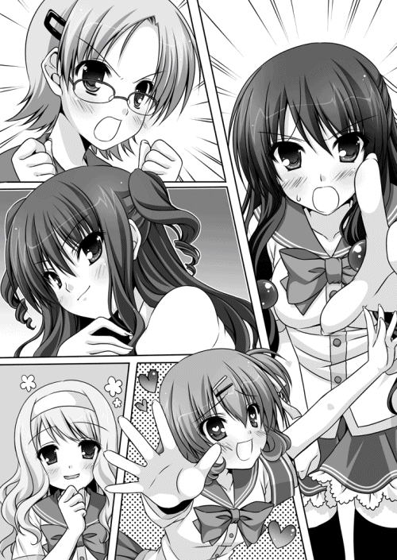

| ツノありっ！ 4<ツノありっ！> (MF文庫J) | |
| 阿智 太郎 & 鳴海 ゆう | |
| メディアファクトリー (2012) | |
ＭＦ文庫Ｊ
ツノありっ！４
日高は△△を忘れる!?
阿智太郎
口絵・本文イラスト●鳴海ゆう
第一話 百目鬼藍奈は日高を求む！
１
長野県の真ん中あたりに、昼紙村という小さな村が存在していた。
昨今の山村では珍しくもない問題、高齢化及び過疎化の影響を受けて、昼紙村は大きな街との合併を望み隣接する二つの市にそれをお願いする。
南の赤松市と、北の青葉市だった。
当初は、どちらの市も昼紙村の申し出を躊躇った。
それもそのはず、昼紙村は山に囲まれた小さな村。主要な産業なども存在していない。それを抱えたところで市としてのメリットは何もない。
しかし、そんな状況が一変する。
昼紙村で水道管の取替え工事をしている最中、勢いよく温泉が噴き出したのだった。
湯量も豊富、温度も十分、さらに成分にも優れている温泉だ。一大産業となりうる可能性を秘めている。赤松市も青葉市も掌を返し、昼紙村を受け入れることを表明。どちらが温泉を手に入れるかで対立まで始めてしまう始末。
さらに厄介なことに、赤松市と青葉市はそれぞれ赤鬼と青鬼のテリトリーだったのだ。
温泉が大好きな鬼達は、昼紙村をぜひとも自分側へと意気込み始める。必然的に赤鬼と青鬼との衝突も増えていく。やがてそれは、赤鬼を束ねる鬼怒川組と青鬼を束ねる関東王牙会との関係にも影響を及ぼし始めた。
突如として湧いた温泉を巡り、吹けば飛ぶような休戦協定にヒビが入ろうとしていたのだった。
「カルタって、あのカルタですか!?」
鳩が豆鉄砲でも食らったような顔付きで日高は呟く。場所はお馴染み、天狗山高校の二階、風紀委員室だった。
天狗山高校は長野県の南、信濃市にあるごくごく普通の高校だ。日高はそこの二年生。何かと苦手なものが多いことを抜かせば大して特徴のない生徒だ。
今は冬の到来を感じさせる十一月の半ばだ。日高の制服だって冬服に切り替わっている。
「カルタって言ったら、あのカルタしかないでしょ」
日高の豆鉄砲顔に平然と答えるのは、こちらも冬服姿の女子生徒だ。長い黒髪の似合う文句なしの美少女。体型だって申し分ない。
彼女の名前は鬼怒川風香。年は日高の一つ上の高校三年生。風紀委員長を務めている。成績も抜群で学校きっての優等生。男女にかかわらず人気も高い。
その正体は赤鬼。しかも、赤鬼を束ねる任侠組織、鬼怒川組の跡取り娘だったりする。
「カルタ......ねえ」
日高はその言葉を繰り返す。
「あら、日高クン。何だか釈然としないって顔付きね」
「そりゃそうですよ」
先程風香に説明されたことを反芻しながら、日高は言葉を続ける。
「その、温泉の出た村を二つの市が取り合ってるんですよね。それぞれ赤鬼と青鬼の縄張りだったから、鬼怒川組と王牙会の争いに発展しそうなんですよね」
「ええ、そうよ。今でこそまだ小競り合いぐらいしかないけれど、確実に争いの火種にはなってしまったわ。このままだとじきに大きな衝突が起こり、休戦協定破棄なんてことにもなりかねないわね」
「で、それを回避するためにさっさとこの温泉の所有権問題に決着をつけてしまおうってことになったんですよね。それはよく分かりますし、すごくいい考えだと思います」
神妙な顔つきで頷いてから、日高は最大の疑問点を口にする。
「だけど、その方法がカルタっていうのはどうなんですか？ 抗争にまで発展しかねないとんでもない事態なんですよね？ それがカルタなんかで決着がつくんですか？」
「違うわよ、日高クン。そんな事態だからこそ、カルタでしか決着がつかないの！」
風香はきっぱりと断言した。力強く語尾に『！』までつけて。
「鬼カルタは、大昔から鬼に伝わる勝負方法なの。鬼カルタでついた決着なら仕方がない。鬼達にそう思わせるほどにね。この方法以外で決着をつけようったって駄目よ。負けた方がごね出して結局抗争へと発展してしまうに違いないわ」
風香の言っていることは理解できる。だけどまだどうにもしっくりとこない。
類稀なる戦闘能力を持つ鬼達が、カルタなんぞで勝負をしている光景がどうにも想像しにくいのだ。
まだ微妙な顔付きでいる日高に、風香は少々不機嫌そうに言う。
「それとも何、日高クンは鬼怒川組と王牙会がカルタなんかせずに抗争した方がいいとでも言うの？」
とんでもないと日高は首を横に振った。
不本意ながら赤鬼と青鬼に深く関わってしまっている日高だから、両者が衝突した時のとんでもなさだってよく知っている。もし鬼怒川組と王牙会が抗争など始めてしまった日には、どれだけの被害が出るか分かったものじゃない。
カルタで決着をつけてくれるなら、それに越したことはないのだ。
「そ、そんなことありません！ どうか思う存分鬼カルタで決着をつけてください！」
「言われなくてもそうするわ」
風香が頷く。
「しかも今回の鬼カルタ大会は、これまでの勝負とは一味も二味も違うの。鬼怒川組の大将鬼は私。王牙会の大将鬼は藍奈っていう宿命の対決なんだから」
百目鬼藍奈は風香の宿敵とも呼べる青鬼の娘だ。関東王牙会のボスの娘で、青鬼ばかりが通う青蘭女学院の生徒会長を務めている。
「本来だったら、うちのお母さんと藍奈の父親が大将鬼としてメンバーを率い対決するのが筋なんだけど、今ちょっと二人とも留守してるのよ。丁度、北海道で鬼サミットってのが開かれてるから」
「鬼サミット？」
「ええ、赤、青、黄、緑という日本の四大鬼勢力の代表が一堂に会して今後の鬼業界の行く末を話し合うっていう会議よ」
とんでもない会議もあったものだと日高は思った。
「でね、うちのお母さんと藍奈のお父さんが話して、温泉の件は私と藍奈の二人に任せようってことになったのよ」
風香は興奮した口調で続ける。
「藍奈とは正月の合同親睦会の度にカルタ勝負をしてきたわ。悔しいことに今のところ藍奈の方が勝ち星が一つ多いのよ。正月まで待てないと思ってた時にこの話よ。願ったりかなったりじゃない」
風香の瞳が金色に染まり、ギラギラとした光を放った。今にも角が飛び出しそうな雰囲気だ。来たる鬼カルタ大会に対する意気込みってのがジンジンと伝わってくる。
（鬼カルタ大会......か）
いくらカルタと言ったって、そこは赤鬼と青鬼だ。ひょっとしたら普通のカルタよりもはるかにバイオレンスなものなのかもしれなかった。
赤鬼が誇るのは尋常ならざる怪力だ。札に向かって全力で金棒を振り下ろしかねない。
青鬼と言ったら、鬼力と呼ばれる念動力の持ち主だ。並べられた札を動かし相手を混乱させるなんて序の口。ひょっとしたら手近な重くて硬い物（壺とか漬物石とか）を操って赤鬼の頭上に落としかねない。
想像しただけでもかなり恐ろしいカルタ大会になりそうだった。
「まあ、がんばってくださいね。俺、応援してますから」
「日高クン、何他人事のように言ってるのよ。鬼カルタ大会、日高クンも参加するのよ」
風香のトンデモ発言に、日高は大いに驚いた。
「えええ！ ど、どーして俺が!?」
「さっきも説明したとおり、今回の勝負は私が赤鬼チームを率いるの。チームメンバーの決定権だって私にあるのよ。メンバーは私を含めて五人。組員を集めてカルタをさせたんだけど、戦えそうなのは三人しかいなかったのよね。鬼カルタ猛者の人達は、お母さんと一緒に北海道に行ってるし。で、大至急誰か一人を鍛えなくちゃならなくなったってわけ」
「だからってそれが俺だなんてどーかしてますよ！ そもそも根本的に俺は鬼怒川組の組員でもなければ鬼でもないんですよ!?」
「大丈夫よ。そんなのまた例のアレでどうにでもなるわ」
例のアレがどんなアレなのか？ 考えなくても日高には分かった。ズバリ、赤井鬼之介への変装のことだ。
「赤井鬼之介が参戦するとなれば、組員達の士気だって大いに上がること間違いなしよ」
半年程前に、赤鬼に変装した姿で日高は鬼怒川組のピンチを救ってしまったことがあった。それ以来、鬼怒川組では赤井鬼之介の株は上がりっぱなしらしい。
「そんな、チームを盛り上げるためだけに俺を引っ張り出そうなんてひどいです！」
必死に抗議する日高に、風香はスッと歩み寄った。
くっつかんばかりに体を寄せると、日高の瞳を見つめる。
「日高クン、誤解しないで。そんなことのためだけに日高クンを選んだわけじゃないの。士気を上げるなんて、おまけみたいなもの。本当の理由は別にあるの」
見つめる瞳は、かすかに潤んでいた。いつになく不安そうな表情だった。
日高の胸はドキンと高鳴る。
（強がっているけど、風香先輩は実は緊張してるんじゃ？ だからこそ、俺に側にいて欲しいって思ってるんじゃないか？ 心の支えになって欲しいがために）
そんなことを考えてしまう日高。
だけど、真相は少々残酷だった。風香はニッコリと微笑むと、こう言い放った。
「どうせ一人を鍛えなくちゃならないなら、日高クンを鍛えるのが一番楽しいに決まってるじゃない。怒涛のカルタ特訓に日高クンが悲鳴を上げる光景なんか、想像しただけでもゾクゾクするものね」
日高は唖然とする。
「そうと決まれば早速カルタ特訓よ。茶道部に頼んで放課後と休日、畳部屋を借りられるようにしておいたの」
椅子の上に置いてあった自分の鞄を開き、中からカルタの箱を取り出す風香。
地獄のカルタ特訓は、本日から始められるようだ。
（じょ、冗談じゃないぞ！）
迷わず日高は逃亡を試みた。風香がこちらに背を向けている間に風紀委員室を出てしまおうとする。だけど、扉を開けたところで小柄な少女と遭遇する。
「あ、武蔵野センパイ」
微笑む少女の名前は、春木真夕。天狗山高校の一年生で同じ風紀委員のメンバーだ。
小動物を思わせる可愛らしい後輩だけど、実は彼女も鬼。人間の血も混じり色をなくした『色なし鬼』だけど、鬼の本能は失われていない。
風香にいじられる日高を見るのが大好きときている。
「聞きましたよ。赤井鬼之介になって鬼カルタ大会に出場するそうですね。カルタ特訓にはわたしも読み手として参加します！ どうぞよろしくお願いします！」
真夕は嬉しそうに言う。
「鬼怒川センパイのカルタ特訓はすごく厳しいと思いますけど、がんばってくださいね。あ、でも我慢することなくいくらでも泣き言とか悲鳴を口にしてくれていいんですよ。そんな武蔵野センパイの姿、わたし大好物ですから」
真夕は瞳をうっすら金色に染めると、グーにした手を口元に当て笑った。
「うひひひひひ」
真夕の十八番、うひひひ笑いだ。
「あ、真夕ちゃん。来てくれたのね。それじゃ一緒に茶道部の畳部屋へ行きましょ」
カルタを手にした風香が後ろからやって来る。
二匹の美少女鬼に囲まれ、日高は悟ったのだった。
（もう逃げられないぞ） って。
２
長野県には、赤鬼と青鬼の中立地帯というものも存在している。
やはり長野県の真ん中辺りに存在する小さな町がそうだった。
そこには、赤鬼と青鬼の共同出資で建てられた会館が存在する。両者の会議や親睦会等が行われる施設だった。
この『藍紅会館』の一階大広間こそが、鬼カルタ大会の試合会場だった。
鬼怒川組側、関東王牙会側の選手達が左右に分かれ並べられた座布団に座っている。背後にはそれぞれの組織の鬼達が控えていた。
藍紅会館は鬼のために鬼が建てた建物だ。窓は全て曇りガラスで、防音だってしっかりとしている。部外者が入ってくることもない。
だから、誰一人として角を隠していなかった。
それぞれに髪を赤や青に染め上げ、牙をガチガチと鳴らしている。
「昼紙村の温泉は赤鬼がもらうぞ！」
「フン、何を言っている。あの温泉は私達青鬼のものだ」
選手でない鬼達が声を飛ばしている。
別にケンカしなくても仲良く温泉を利用すればいいじゃないかと思うところだけど、そこは相容れぬ赤鬼と青鬼。
「お前達青鬼の物になったら温泉がもったいない。どうせ熱すぎると言って水をダバダバ入れるだろうに」
「ただ熱い湯が好きなだけのお前らの方こそ問題だ。さらに早風呂ときたら、温泉など宝の持ち腐れだ。ぬるめでゆっくり浸かるのが正しい温泉の味わい方だ！」
同じ温泉好きでもそれぞれに譲れないこだわりがあるようだ（面倒臭いことに）。
そんな殺伐とした雰囲気の中に、その鬼はいた。
赤毛のモジャモジャ頭にタケノコのごとき太い角。鋭い爪に下顎から伸びた牙。おかず海苔のように太い眉毛。ギラギラと輝く金色の瞳。
彼の名前は赤井鬼之介。その中身は言うまでもなく武蔵野日高だった。
（半ば覚悟はしてたけど、こんなにも鬼密度が高いなんて）
わんさかといる鬼達を前に、日高は大いにビビっていた。
さらに困るのは、後ろに控える鬼怒川組の赤鬼からちょいちょいかけられる応援の声だ。
「期待してますぜ、赤井鬼之介さん」
「青鬼の奴らに一泡吹かせてやってくださいや」
「鬼之介さんがチームにいてくれりゃ、百鬼力。いや、千鬼力ですぜ」
「かの有名な紅蓮童子の末裔である鬼之介さんなら、青鬼なんて目じゃないですよ」
神聖な鬼カルタ大会の会場に人間一人が紛れ込んでいるってだけでも大変なことなのに、さらにこのプレッシャーだ。気を抜くと意識がぶっ飛びそうだった。
日高は左隣にいる風香へチラリと目を向ける。
風香ももう人に化けてはいなかった。髪の毛は見事なまでに真っ赤だった。立派な二本の角が生えている。服装はバシッと紅葉色の和服で決めていた。鬼カルタ大会においては、大将鬼は和服で臨むのが古来よりのならわしらしい。
日高の不安そうな視線には気付くことなく、相手側の大将鬼を睨み付けている。
「この日が来るのを待ちわびてたわよ。藍奈」
「あら、奇遇ですわね。わたくしもですのよ。こうやって風香さんと対決できるのも、鬼サミットのおかげ。この時期に開催してくれたことを感謝しなければなりませんわ」
悠然と答える藍奈もまた、鬼を隠してはいない。青色の髪の毛と二本の角。瞳は金色に染まっている。彼女もまた和服姿だ。海色の落ち着いた雰囲気の着物がよく似合っている。
「それにしても、驚きましたわ」
金色の瞳で、藍奈は日高へと顔を向けた。
「まさか、赤井鬼之介さんを連れてくるなんて。思いきったことをしたものですわ」
含みでもあるかのように藍奈が言う。まあ、鬼之介の中身が日高だってことは知っているのだから、驚いて当然なのだろうけど。
「さ、お喋りはここまでよ。そろそろ始めない？ こっちはもう早くカルタがしたくてウズウズしてるんだから」
軽く笑うと、風香は付け加えるように言う。
「もっとも、先に三勝して私の所まで順番が回って来ない可能性もあるけど」
「その言葉、そっくりそのままお返しいたしますわ」
すかさず藍奈が言い返す。
二人はそろって、中央に座る小柄な鬼の老人へと顔を向けた。
「御老、お願いします」
「お願いいたしますわ」
こっくりこっくりと居眠りをしてた老人が頭を持ち上げる。すっかり薄くなってしまっているが髪の毛の色は鮮やかな緑だ。
鬼カルタ大会の審判は長老にお願いするのが鬼業界の通例だ。公平を期すために、緑鬼の長老にお願いしたのだ。
「う、うむ。それでは始めようかの」
ゴホンと長老が咳払いをする。
「これより、鬼怒川組と関東王牙会の鬼カルタ大会を始める。両者とも悔いの残らぬ戦いをするように。分かっているとは思うが、鬼の力を使うのは反則じゃ。赤鬼は、くれぐれも金棒などを持ち出さぬよう。青鬼は鬼力で札を入れ替えたりせぬよう。よいな」
双方が頷く。
「それではまず、五将鬼の戦いじゃ！」
一番端に座っていた選手の鬼が立ち上がり前へと歩み出る。そこに設置された対戦者用の座布団へ座る。両者の間に札が並べられた。
「始めい!!!」
ドドドン！ という太鼓の合図と共に読み手役が声を張り上げた。
「鬼も歩けば金棒に当たる！」
ちなみに、読み手をやっているのは色なし鬼の少女。真夕だ。本来なら鬼と言えども部外者の立ち入りは禁止なのだけど、運営スタッフとして潜り込むことでそれを可能とした。筋金入りの野次馬根性だった。
ドドドン！
「転ばぬ先の金棒！」
ドドドン！
「角を隠して牙を隠さず！」
ドドドン！
「門前の鬼、習わぬ脅し文句を叫ぶ！」
つっこみ所満載のカルタの文面だけど、散々練習してきた日高だから気にもならない。それに今は祈るので精一杯だった。
どうか、自分の番が回ってきませんように！ と。
五将鬼、四将鬼、三将鬼、副将鬼、大将鬼とそれぞれ五名の選手を用意しているが、先にどちらかが三勝した時点で鬼カルタ大会の勝敗はつく。日高のポジションは副将鬼だ。先に三勝するか三敗すれば、自分まで番が回ってくることはない。
そうこうしている内に、すべての札がなくなった。札を取るごとに枚数はカウントされているからいちいち数える必要もない。
ドドドン！
太鼓の合図を受け、長老が第一試合の勝敗を口にする。
「勝者！ 関東王牙会！ 沢井康平！」
王牙会側から歓声が上がった。
「お嬢！ すみません！」
敗北した赤鬼が男泣きしながら畳に這いつくばる。
「大丈夫よ、まだ次があるわ」
余裕の表情でそう告げる風香だったけど......。
ドドドン！
「勝者！ 関東王牙会！ 水田秀介！」
長老の矍鑠たる声が響いた。第二試合の結果も、軍配は王牙会に上がったのだ。
「あらあら、もう二勝ですわね」
勝ち誇ったように藍奈が言う。
「早くも次で決着がついてしまいそうですわ」
「そ、そんなことないわよ」
さすがの風香も、少々焦りの表情だった。
こうなると、日高が願うことは一つだった。
（風香先輩には申し訳ない。申し訳ないけど、どうか次も鬼怒川組側が負けますように！ 俺まで番が回ってきませんように！）
ただひたすらに祈るけど、勝負の神様は残酷だった。
「勝者！ 鬼怒川組！ 火野平蔵！」
鬼怒川組から歓声が上がった。だけど、日高にとってはちっとも嬉しくない展開だった。
これで、日高が戦うことが決定してしまったのだ。それだけじゃない。こちらはもう二敗している。日高が負けた時点で鬼怒川組の敗北が決定する。
責任重大な一戦だった。
「続いて、副将鬼！ 前へ！」
関東王牙会側から一人の青鬼が進み出る。
だけど日高は動けない。全身がブルブルと震えて立ち上がることさえできないのだ。
そんな様子すら、鬼怒川組の面々は勝手に誤解する。
「おお、見ろ。鬼之介さんのあの尋常でない武者震いを！」
「取る気満々といったところだな」
さすがに見かねて、風香はため息交じりに言った。
「少し休憩させてもらっていいかしら」
３
藍紅会館の二階、一番奥にある小部屋へと日高を引っ張ってきた風香は、少々お怒り気味に言った。
「ちょっと日高クン。あまりにも緊張しすぎじゃないの？ もうちょっとしっかりしてくれないと。あなたはうちの副将鬼なんだから」
「無理ですって、風香先輩！」
他の鬼達がいないせいで、これまで溜め込んでいた不安が一気に噴き出してしまう。
「次の一戦で勝負が決まるんですよ。俺が負けたらその時点で鬼怒川組の敗北なんですよ。そしたら赤鬼の人達に何をされるか......」
怒った赤鬼達に囲まれる光景を想像し、日高はゾゾっと背筋を寒くする。
「どうして負けること前提で考えてるのよ」
「負けるに決まってるじゃないですか!? だって俺、たった一週間しか特訓してないんですよ。勝てっこありませんって！」
カラーコンタクトで金色になった瞳で風香に懇願する。
「お願いです！ 今からでも誰か別の鬼に代えてください！」
「ダメよ。副将鬼は赤井鬼之介。決して変更しないわ」
無情にもそう言い放ってから、風香は微笑んだ。
「だって、私は信じてるもの。日高クンが勝利するって」
穏やかに、そして少し誇らしげに風香は続けた。
「たった一週間とは言え、私は全力でキミに鬼カルタの特訓をした。そしてキミは、ヒーヒー言いながらも挫折することなくやり遂げた。付け焼刃とは言え今の日高クンはかなりの鬼カルタ猛者になっているわ。相手が藍奈だって言うならともかく、王牙会の若造なんかには決してひけは取らないはずよ。もっと自分に自信を持ってちょうだい」
それから、少しだけ恥ずかしそうに付け加える。
「本当のこと言うと、そこそこカルタの強い組員は他にいたの。でも、私は日高クンを鍛えることにした。ひーひー言わせたいだけじゃなく、私が日高クンと一緒に戦いたかったから。藍奈との戦いに、日高クンに一番側にいて欲しかったから」
らしくないことを言ったと、風香は手で空気をかき混ぜる。
それでも気恥ずかしかったのだろう。
「とにかく堂々と戦って。その結果負けたら、それはそれでいいの。誰も文句なんて言わないし私が言わせないから！ それじゃ、先に行ってるわ」
早口にそう言うと、風香は部屋を出て行った。
日高だけが残される。
不思議と、先程までの不安は薄れていた。
それどころか、使命感と言うか、勇気と言うか、こみ上げる熱い衝動を胸に感じていた。
日高の勝利を風香が信じていてくれることが嬉しかった。
日高に一番側にいて欲しいと思ってくれていることが嬉しかった。
単純なもので、日高は俄然やる気になっていた。
鬼カルタの猛者である風香が、太鼓判を押してくれた心強さもあった。
「そうだよ、俺はあの鬼の特訓を乗り越えた男じゃないか」
たった一週間とは言え、それは地獄の特訓だった。学校にだって何日も泊まり込み、徹夜で鬼カルタと向き合った。
その思い出が、勇気となって胸に宿る。
やってやるぞと拳を握り締めた日高は、ブルルって体を震わせる。
残念ながら武者震いじゃなかった。緊張が解けた影響だろう。尿意を覚えたのだ。
「トイレに寄ってから俺も会場に入ろう。特訓の成果を見せてやろうじゃないか」
会場へと戻った風香は、鬼怒川組側の大将鬼の席に腰を下ろす。
休憩をとっていた双方のメンバーももう位置についていた。残るは日高だけだ。
「そっちの副将鬼はどうしたんだ!? 怖気づいて逃げ出したんじゃないのか!?」
青鬼達からそんな声が上がるのを、藍奈が睨みつける。
「静かに。王牙会の品位を落とすような言動は許しませんわよ」
青鬼達を黙らせてから、藍奈は風香に顔を向け小声で囁く。
「風香さん、大丈夫ですの？ 彼にはやっぱり荷が重かったのではありません？」
「きっとトイレにでも行ってるんでしょ。心配しなくても彼は来るわ。必ずね」
風香が自信たっぷりに言い放った直後だった。会場に入ってくる人影に気付く。
「ほらね」
誇らし気に言ってから、そちらに顔を向ける風香だったけど......。 やって来たのは日高じゃなかった。屈強な体躯で強面の青鬼が二人。並んで現れる。
「鮫島、鰐淵」
藍奈が表情を強張らせた。
「お父様の側近であるあなた方が一体何の用？ 今回の鬼カルタ大会の指揮はすべてわたくしに任されているはずですわよ」
「はい、そのとおりです」
青鬼の一人、鮫島が頷く。
「会長は基本的には藍奈様にお任せするおつもりです」
続き、もう一人の鰐淵が口を開く。
「ただ、念のためと申されまして、この者を連れて行くよう私達に指示されました」
鮫島と鰐淵が割れるように左右に移動する。巨体に隠れていた人物が姿を現した。
ガリガリに痩せた青鬼だった。ギョロギョロとした目付きで、腕が異様に長い。
痩せた青鬼は、薄い唇を歪め笑った。
「どうも、初めまして。青字札吾朗でございます」
赤鬼、青鬼双方がざわめいた。
「青字札吾朗!?」
「あの、代取り屋の札吾朗なのか!?」
風香も、その名前は聞いた事があった。
代取り屋。それは、組織に依頼され鬼カルタ勝負を代わりに行うことを生業とする者だ。負けたら命の危険さえある代取りの世界。それだけでも尋常な腕でないのが窺える。
しかも、その中でも札吾朗の名は有名だった。九州を舞台とし、代取りとして行った鬼カルタの勝負は三百戦以上。敗北したことは一度もないとの噂だった。
「わたくしのチームに、そんな代取り屋を飛び入りさせようって言うの？」
藍奈はピシャリと拒否する。
「そんなの認められませんわ！」
「そうだ、そんな男がいなくたって俺達は勝てる！」
「あと一勝するだけでいいんだ！」
叫ぶ青鬼達を、鮫島と鰐淵が無言で睨みつける。
百目鬼海魅斗の側近を務める二人組だ。その迫力は青鬼達すら脅えさせる。
「これは、会長の命令です。どうかご了承ください」
「もし拒むのであれば、この大会を即座に中止させるよう言いつけられております」
そんなことをしたら、鬼カルタ大会を開くことで何とか保たれている両者の均衡、それが崩れることになってしまう。
もはや従うしかない。藍奈は悔しそうに唇を噛み締める。
「次は副将鬼戦か。丁度いい。札吾朗、務めを果たせよ」
「はい、お任せを」
札吾朗がペタペタと歩いてくると、対戦席に座り込む。
「さあ、始めましょう。そちらの副将鬼はどなたで？」
現在の副将鬼、日高が敵う相手じゃない。
赤鬼側で、唯一札吾朗と互角に戦える可能性があるのは風香ただ一人だろう。
となると、風香が取る行動は決まっていた。
「鬼怒川組側の大将鬼と副将鬼を交代するわ！ 私が相手よ！」
勢いよく立ち上がるものの、
「それはならん！」
審判役の長老が、声を響かせた。
「大将鬼の変更はできん。それが鬼カルタ大会の決まりじゃ！」
「いいじゃない！ 向こうだっていきなり助っ人を突っ込んできたんだから！」
もはや敬語も忘れて主張する風香。
「わたくしからも、特例をお願いいたしますわ」
こんなことになってしまった後ろめたさもあるのだろう。藍奈も風香を援護する。
だけど、長老はかたくなだった。
「ならんもんはならんのじゃ！」
（ああ、もう！ この頑固じいさんどうにかなんないの？ 二、三発引っぱたいたら少しは固い頭も柔らかくなるかしら？）
半ば本気で考えるも、さすがに自重する。相手は緑鬼の重鎮だ。そんなことをしたら緑鬼組織との争いに発展してしまうだろう。
（私以外の誰が出ても札吾朗には敵わない。だけど私は出られない。だとしたらもう終わりじゃない）
風香は奥歯を噛み締める。
こういった大舞台での藍奈との対決を楽しみにしていたのだ。それが叶わないことが悔しくてたまらなかった。
と、その時だった。
「待たせたな！」
場違いに力強い声が響いた。
もちろん、やって来たのはトイレに寄っていた日高に違いない。
「さあ、勝負を始めようじゃないか」
しかも、トイレの鏡を相手に赤井鬼之介のイメージトレーニングまでしてきたから、いつになく豪快だった。
「おお、鬼之介さん！」
「そうだ、鬼之介さんならひょっとしたら勝てるかも！」
「かの有名な紅蓮童子も、鬼カルタの達人だったと聞く。その血を引く鬼之介さんなら！」
赤鬼達が盛り上がる。もちろん、誤解もいいとこだ。
「風香先輩、待っててください。俺、必ず勝って風香先輩に繋げますから」
すれ違う際、風香に向かって小声で囁く。
「実はね、少し状況が変わって」
風香が説明しようとするも、すでに日高は対戦席に腰を下ろしていた。
他の赤鬼達がいるため、大きな声は出せず風香は口を閉じる。
鬼カルタの札が並べられ試合の準備が整った。
「それでは、副将鬼戦。始めい！」
長老の声で、対決がスタートする。
太鼓の音に続き、札を読み上げる真夕の声が響いた。
「出る角はいかしてる！」
（出る、出る、出る、出る）
日高は目を皿のようにしてお目当ての札を探す。
だけど、日高が札を見つけるよりも早く札吾朗の右手が唸った。
角を自慢するようなドヤ顔をしている絵の描かれた札を手にし、札吾朗が笑う。
「お先にいただきますよ」
（まだだ、次こそは）
そう意気込む日高だったけど、
ドドドン！
「老いても鬼は強し！」
次もまた、札吾朗の圧勝だった。
「二階から岩石！」
「角あれば牙あり！」
「臭い鬼には消臭コロン！」
「武士は食わねえ胃もたれするから！」
なす術もなく、次々と札が取られていく。
想像以上の札吾朗のカルタの腕に、誰もが息を飲む。
あっ！ と言う間に、三分の一程の札が札吾朗のものとなる。それに対し日高は０枚。
（相手が悪すぎたわ。あれじゃ私だって勝てるかどうか）
風香も、そして他の赤鬼達もすっかり諦めの気分となる。
だけど、日高は違っていた。
（まだだ！ 残り全部取ってしまえばいいだけなんだ！）
いまだ、希望を失っていなかった。
（勝てる相手なんだ。心配いらない、風香先輩だって言ってたじゃないか）
もちろんそれは目の前の札吾朗のことじゃないんだけど、トイレに行っていたから何も知らない。
（俺のことを信じてくれている風香先輩が、すぐ後ろで応援しててくれるんだ！ ここを勝利し、風香先輩にバトンを渡すんだ！）
緊張と使命感、そして興奮。それらが渾然一体となり、日高の神経を極限まで研ぎ澄ませた。
「これ以上続けるのも無意味かとは思いますが、最後まで全力でいかせていただきますよ」
ドドドン！
太鼓が打ち鳴らされ、真夕の声が響く。
「鬼にこそ小判！」
「はいっ！！！！」
札を取ったのは日高だった。小判の入った千両箱を抱えてほくほく顔の鬼の絵の描かれた札を握り締める。
さらに次の札も、紙一重で日高がゲットする。
札吾朗は感じていた。明らかに対戦相手の速度が速くなっていることを。
それは、場の札の数が少なくなるにつれますます顕著に現れる。
「鬼っ面にハクのつく傷！」
「鬼にはやっぱり金棒！」
「鬼から出た角！」
次から次へと札を取っていく日高。
両者の差が、ぐんぐんと縮まってくる。
「信じ......られないわ」
風香ですら、驚きのあまりかすれた声で呟く。
「すごい！ すごすぎるッス！ 鬼之介さん！」
「鬼之介さんに、鬼カルタの神が降りてきてるに違いない！」
もちろん、本当に鬼カルタの神が降りてきているわけではない。
この快進撃には、ちゃんとした理由が存在した。
場に残されていたのが、『鬼札』ばかりだったというのが一番の大きな要因だ。
鬼札、それは『鬼』から始まる札。
作者がいろは四十八文字を網羅することにちっともこだわりがなかったのだろう。鬼カルタには圧倒的にこの鬼札が多いのだ。
となると、最初の二文字を聞いた段階ではどの札なのか特定できない。『鬼』の後に続く『の』『が』といった助詞も多く重複している札が多いから、場合によっては四文字まで待たされる場合もある。
だけど、日高は違っていた。
地獄の特訓中、ずっと札を読んでいたのは真夕だった。録音再生デバイスに吹き込んでもらい、授業中や眠っている時だってずっと聞き続けた。
その結果、日高は真夕の発する『鬼』の発音が、一体どの札の『鬼』なのかを無意識に聞き分けるまでに至っていたのだ。
もちろん、これだって極限まで研ぎ澄まされた精神状態だからこそできた技だった。奇跡と言っても差し支えないだろう。
そう、札吾朗よりも一瞬早く札を探し始めることができることこそが、快進撃の秘密だったのだ。
それは、残り枚数が少なくなっていくに従ってますます顕著に現れていく。
場合によっては、『鬼』しか聞いていない段階で札を取ってしまうことだってあった。
これには、札吾朗も驚き青ざめる。
通常、カルタと言えば四十八枚がセオリーだけど、鬼カルタはそこに一枚足して四十九枚ある。引き分けはない。
場に二枚の『鬼札』を残した状態での、両者の枚数は札吾朗二十四枚に対し日高が二十三枚だった。
何も札吾朗は焦る必要はなかった。一枚の札を取り合う勝負でなら日高に負けることはなかったのだから。
だけど、奇跡の快進撃を見せ付けられかなり焦っていたのだろう。
「鬼......」
と聞こえた瞬間、
「とりゃあああああ！」
気合と共に片方の札に手を叩きつける。
相手にできて、プロである自分にできない悔しさが、彼をそうさせてしまったのだ。
札吾朗の迫力に、読み手の真夕も驚き言葉を止めてしまう。
日高は黙って、もう一枚の札を手にした。鬼が大木をへし折っている絵の札だった。
赤鬼、青鬼、双方が固唾を飲み見守る中、真夕が続きを読む。
「お、鬼もおだてりゃ大木をへし折る！」
日高の正解だった。と同時に、勝負が決まった瞬間でもあった。
鬼カルタにおいてお手つきはご法度だ。その回のみならず次の回まで休みとなる。
必然的に、残り一枚も日高の物となった。
「勝者！ 鬼怒川組！ 赤井鬼之介！」
長老が高らかに勝利を宣言した。
「勝った......のか」
ふうと息を吐き出す日高に、鬼怒川組の赤鬼達がわっと群がった。
「す、すごいッス！ 鬼之介さん！」
「お、俺、感激で涙が！」
勝利を称えてくれるのはありがたいのだけど、みなの金色の瞳がいつも以上にギラギラしていてかなり怖かった。
藍奈が拍手を始める。負けて灰色になっている札吾朗、鰐淵と鮫島以外の他の青鬼達もつられて拍手をする。
「ひだ......じゃなくって、鬼之介！ よくやったわ！」
駆け寄った風香が、日高の手を握った。潤んだ瞳で日高を見つめる。
「あの男に勝つなんてとんでもないことよ！ ひだ......じゃなくって鬼之介は......」
興奮してついつい日高と呼んでしまいそうになるのを止められないようだ。
「ああああ、もう！」
風香はもどかしさに声を荒らげる。
「ちょっと休憩してくるから。あと、みんなついてこないように」
赤鬼達にそう命令すると、日高を引っ張って会場を後にする。
「ああ、俺ももっと鬼之介さんの勝利を祝いたいのに」
「お嬢にはああ言われたけど追いかけようか？」
「いやいや、それは無粋というものだぞ。恋人同士、二人きりにしてやろう」
「そうだそうだ、きっと風香お嬢は鬼之介さんに祝いのキッスなんかをしているに違いない。邪魔をするのは野暮ってやつじゃないか」
「しかし、鬼之介さんが代取り屋の札吾朗をも倒すほどの鬼カルタ猛者だったとは」
「俺達の未来の組長は実に頼もしいじゃないか。これは一日も早く婿入りして欲しいところだな」
日高が聞いたら卒倒ものの会話を赤鬼達はする。
「さてと」
勝利を称える拍手を終えた藍奈が、鮫島と鰐淵に顔を向ける。
「お父様が手配した助っ人、存外役に立ちませんでしたわね」
冷ややかな微笑でそう言う。二人の青鬼は返す言葉もなく押し黙った。
「さ、もうお帰りになって。これからわたくしの戦いですもの。あなた方がいると集中できませんわ。もちろん、そこで燃え尽きている方も一緒に」
「嘘だ、こんなことありえない。この私が負けるなんて」
ブツブツと呟いている札吾朗を目で指し示す。
「了解しました」
「失礼......いたします」
鮫島と鰐淵は、札吾朗を担ぐようにすると会場を出て行った。
「藍奈様」
一人の青鬼が声をかけてくる。本来なら副将鬼として日高と対戦するはずだった青鬼だ。
「王牙会の人間としては、悔しがらなくちゃならないところなんでしょうけど。自分、ちょっと気分がいいです。あのいけ好かない助っ人をあの赤鬼が倒してくれたから」
「フフフ、わたくしもですわ。これで、風香さんと対決ができますものね」
藍奈は軽く微笑むと、日高が座っていた席に顔を向ける。
「それにしても、あんな絶技を見せてくれるなんて」
藍奈は、うっとりとしたような吐息で囁いた。
「ますます、あなたのことが欲しくなってきましたわ。武蔵野日高さん」
４
二階の小部屋まで日高を引っ張ってきた風香は、遠慮することなく言った。
「日高クン！ よくやったわ！ 奇跡中の奇跡中の奇跡ってまさにこのことよ！」
風香の大袈裟な言葉に、日高は苦笑する。
「大袈裟ですって。勝てる相手に勝ったってだけなんですから」
「勝てる相手ですって!?」
風香が驚いた顔になる。
「ええ、言ったじゃないですか。王牙会の若造なんかに俺は負けないって。俺は風香先輩のその言葉を信じて」
「そっか、日高クンは少し遅れて入ってきたから知らなかったのね。あの男が何者なのか」
風香はさもおかしそうに笑った。
「あの男は王牙会の若造なんかじゃないわ。藍奈のお父さんが手配して寄越した鬼カルタの助っ人なのよ」
「えええっ！」
これには日高も驚いた。
「気付かなかったの？ それまで王牙会側の副将鬼の席に座ってた青鬼とは別人だったでしょ？」
言われてみれば、確かにそんな気がしてくる。第一、若造って言われてたわりには年もいっていた。
まさか、鬼カルタの助っ人だったなんて......。
分かりきっていたことだけど、一応日高は尋ねる。
「助っ人って言うぐらいだから、強い人なんですよね？」
「当たり前じゃない。あの男の名前は青字札吾朗。鬼カルタの代取りを生業としているプロ中のプロなのよ。正直、私でも勝てるかどうか分からないぐらいのね」
口をパクパクさせてから、日高は引きつった笑いを浮かべる。
「じょ、冗談ですよね。いくら何でもそんな相手に俺が勝てるはずが......」
だけど、風香の感激に染まった瞳は冗談じゃなさそうだった。
（ど、どおりで前半何も取れなかったわけだ。まさかそんな相手だったなんて）
もしそのことを分かっていたら絶対に逆転勝利なんてできなかっただろう。気持ちの上で最初から負けていたはずだ。
誤解していたからこそ、風香の言葉を信じ勝利を得ることができたのだ。
（思い込みって恐ろしいもんだな）
他人事のように感心する日高の手が、いきなり風香に握られる。ぐいっと顔が近づけられ、日高は心臓をドキンと跳ね上げさせた。
「とにかく、日高クンは奇跡を起こしてあんな強敵に勝利してくれた。絶望的だった戦況を見事に覆してくれたのよ。次は私の番だわ」
熱っぽい眼差しで日高を見つめる。
「これから始まる大将鬼戦、私絶対に勝ってみせるわ。日高クンが私の番までつなげてくれたのよ。負けられるはずないじゃない」
さらに風香は続ける。
「手に入れた温泉が整備されて入れるようになったら、一番最初に日高クンを招待するわ。そうね、その時は......」
少し考えてから、風香は茶目っ気のある表情で呟く。
「特別に、私も一緒に入ってあげようかしら？」
「わっ、わっ、わっ！」
顔を真っ赤にし慌てる日高に、風香はフフフと笑った。
「さ、会場に戻りましょ。日高クン、ちゃんと私の一番近くで見てるのよ。私が藍奈に勝利する姿を」
上機嫌に鼻歌なんぞを歌いながら風香は小部屋を出て行く。
「一緒に温泉だなんて。絶対に冗談だよな。さすがに本気じゃないよな」
だけど、風香のあの様子だ。ひょっとしたら本気って可能性だってある。
「風香先輩と......混浴......」
想像するなって言われても想像してしまう。湯煙に包まれる裸の風香の姿をだ。
「じょ、冗談だ。きっとそうに決まってる」
強く首を振り邪な想像を振り払ってから、日高も小部屋を後にした。
風香、そして藍奈が対峙し座る。
すでにカルタは並べられていた。決戦の準備は万端だった。赤鬼、そして青鬼達が固唾を飲み見守る中、藍奈が微笑み言った。
「日高さんにお礼をいたしませんとね。こうやってわたくし達が戦えるのも彼のおかげですから」
「心配しなくても、温泉が手に入ったらちゃんとお礼をするつもりよ。とびきりスペシャルなのをね」
ゴホンと咳払いをすると、長老が声を響かせる。
「両者とも勝ち星は二つ。従って、この勝負にて勝った方が今大会の勝者となる」
「いよいよですわね、風香さん。手加減はいたしませんわよ」
瞳に並々ならぬ闘志をたたえ、藍奈が言う。
「望むところよ」
負けじと闘志を燃え上がらせ、風香が豪快に着物の袖をまくった。
「大将鬼戦、始めい!!!」
フルパワーで長老が声を張り上げた。ドドドンと太鼓が打ち鳴らされる。
戦いの火蓋が切って落とされた。二人の美しき鬼娘達の熱い戦いが今始まる。
風香と藍奈、両者とも一歩も引かない名勝負だった。
青鬼も赤鬼も興奮し瞬きも忘れ釘付けになる。
ちなみに、風香のすぐ後ろにいる日高はと言うと、
（風香先輩、温泉が手に入ったら俺にとびきりスペシャルなお礼をするって藍奈さんにも言ってたよな。あれって、混浴のことだよな。やっぱり、本気だったってことだよな）
湯煙に包まれた風香の姿が、どんなに拭っても頭の中に浮かんでしまう。
（ああ、風香先輩が勝ったらどうなってしまうんだ？ 俺は大人の階段を上ってしまうのか!?）
試合なんて目に入らない様子で、一人悶々としていたのだった。
５
「本当すごかったですよね！ あの奇跡の逆転劇にはわたし、鳥肌が立っちゃいました！」
放課後を迎えた風紀委員室に、真夕の声が響く。
鬼カルタ勝負から一日が経過しているのにもかかわらず、真夕の感動と興奮は現在進行形のようだ。
「特に最後の方です！ わたしが鬼しか言ってないのにもう正解の札を取ってるんですから！ もう本当にスゴいです！ 武蔵野センパイってばスゴすぎです！」
大絶賛の嵐に、肝心の日高はと言うとどうにも複雑な笑みを浮かべている。
自分がどれだけすごいことをしたのか、イマイチ実感が湧いていないのだ。真夕の発する『鬼』を聞き分けたのだって、ほとんど無意識でやっていたことなのだから。
だけど、素直に喜べない一番の理由が別にある。重大かつ致命的な理由が。
その理由は、椅子に座り机に突っ伏していた。傍目から見ても負のオーラが満載だった。
だけど、興奮気味の真夕にはそんなオーラは見えなかったようだ。笑顔のまま言う。
「鬼怒川センパイも惜しかったですよね。たった一枚差で負けちゃうなんて」
「あ――――もうっ！ 言わないで！」
頭を持ち上げた風香が拳をダダンとテーブルに叩きつけた。つい鬼の力が出てしまったのだろう。テーブルは真っ二つに割れた。
「まさか、あんな結果になるなんて！」
昨日を思い出し、風香は激しく悔しがった。
お互いに一歩も引くことなく、白熱した戦いは終盤まで続いた。
場に一枚を残した状態での両者が取った札の枚数はそれぞれ二十四枚。まったくの同数だった。
読み手の真夕が読み始めた瞬間、風香と藍奈は勢いよく右手を振り下ろした。バシンという衝撃音。残った札には両者の手が等しく乗っている。
一瞬でも早く札に触れた方が勝者となる。そしてその判別をするのが審判の役目だ。
一同が固唾を飲んで見守る中、長老は右手を挙げ宣言した。
「勝者、関東王牙会、百目鬼藍奈！」
「まさか紙一重で藍奈に先を越されてたなんて」
嘆く風香を、日高が精一杯フォローする。
「で、でも結果は負けでもすごくいい試合だったじゃないですか。鬼怒川組の人達だってやり遂げたって顔してたし。王牙会の人達も、両者の健闘を称えて最後は拍手なんかして。いや、負けたのは本当悔しいですけどね」
（混浴の夢がなくなっちゃったんですから）って言葉を日高はぐぐっと飲み込んだ。
でもまあ、もし実現してたらそれはそれでどうしていいか分からず心中穏やかでない日常を送っていたことだろうから、この結果で良かったとも考える。
いや、酸っぱいブドウ理論とかじゃなくって本心で（本人力説）。
「温泉だって、またどこかで出るかもしれないし。そんな気を落とさないでくださいよ」
「違うわ、温泉を取られただけでこんなに悔しがってるんじゃないの！」
風香が間違えないで欲しいとばかしに強く言う。
「何よりも悔しいのは、藍奈とのカルタ勝負における通算記録で二勝分差をつけられたってことなのよ！」
もともと藍奈の方が勝ち星が一つ多いと言ってたから、今回の敗北を加えればそういう結果になるのだろう。
「次のお正月の親睦会でのカルタ勝負では絶対の絶対の絶対に負けられないわ！」
風香が拳を握りしめ燃え上がる。一人で燃えてくれればいいのだけど、その炎は見事に飛び火した。
「こうなったら日高クン、キミが頼りよ。鬼カルタ大会で見せた技を私に伝授しなさい！ 瞬時に正解の鬼札を判別するあの技よ！」
「む、無理ですって。自分でもどうしてあんなことができたのか分からないんですから」
「それじゃ何、本当に鬼カルタの神でも降りてきたって言うの？ だったらもうそれでもいいわ。その降ろし方を私に教えなさい！」
風香に迫られ、日高が大いに困っていた時だった。
「失礼しま す！」
す！」
そんな声と共に、風紀委員室に一人の少女がやって来る。髪の毛を頭の左側でちょこんと結んだ、負けん気の強そうな少女だ。
風紀委員の一員、尾道京子だ。学年は一年生で真夕と同じクラス。風香ＬＯＶＥを公言してはばからないパワフルな少女だ。
「風香お姉様にお客様ですよ。尾道京子、ちゃんと責任を持ってご案内しました！」
誇らしげにそう言ってから、京子は体を脇に寄せる。
「さ、どうぞ」
「ありがとう。それではお邪魔しますわ」
京子に続き風紀委員室に入ってきた人物に、風香も、日高も、そして真夕も驚く。
「藍奈！」
百目鬼藍奈その人だった。もちろん鬼カルタ大会の時とは違い和服姿じゃない。彼女が通い、生徒会長も務める青蘭女学院の制服を着ている。
入ってきた早々、藍奈は真っ二つになったテーブルに気付く。
「風香さん、昨日の結果に納得がいかない気持ちは分かりますけど。物に当たるのは良くありませんわよ」
「ち、違うわよ。それは没収したバーベル乗せたら壊れただけだから」
風香がすぐに嘘と分かるような言い訳をする。
「まあ、そういうことにしておきましょうか」
クスリと笑ってから、藍奈は真夕に顔を向けた。
「春木さん、でしたわね。昨日はお疲れ様。あなたの声、とても聞き取りやすかったですわ。次に大会があったら、また是非あなたに読み手をお願いしたいと思ってますのよ」
「は、はい。わたしで良ければいくらでも」
真夕が嬉しそうに頷く。
続いて、藍奈は日高へと顔を向ける。
「日高さん、素晴らしい活躍でしたわ。あなたが相手でしたらわたくし負けていたかもしれませんわね」
「そ、そんな」
恐縮して日高は首をすくめる。
「でも風香さん、これでわたくしが二勝リードしたことになりますわね」
「言ってなさい。正月の親睦会でまず一勝して見せるから」
風香と藍奈が勝ち星の数の張り合いをする中、京子が日高ににじり寄る。
「ちょっと、武蔵野日高。さっきからみんなして何の話してるのよ!? 昨日何かあったの!?」
「え、ああ。その......」
日高はモゴモゴと口ごもる。できることならうやむやにしたいところだけど、風香がらみの話題においての京子のしつこさはよく知っているから難しいだろう。
「その、ちょっとしたカルタ大会があったんだ。それに参加してて」
「カルタ大会!? ちょっとそれどーゆーことよ！ どーしてアタシだけ仲間外れにされてるのよ！」
京子が大いに憤る。
（仲間外れにされてラッキーなんだって。あんなとこ普通の人間が行くとこじゃないんだから！）
ってことを全力で訴えたい日高だったけど、風香や真夕の正体は秘密だから言うに言えない。
「風香お姉様やまゆっちがアタシをのけ者にするはずがないわ。となると武蔵野日高、あんたのせいね！ あんたが意図的にアタシに知らせなかったんでしょ!?」
理不尽な疑いまでかけて詰め寄ってくる始末だ。
困っている日高を見かねてか、風香が真夕に言う。
「真夕ちゃん。そろそろお願いできる？」
「あ、はい。分かりました」
こっくりと頷くと、真夕は京子の背後に立った。
「京子ちゃんごめんなさい」
真夕のチョップが京子の首筋に叩き込まれた。「うっ」と声を上げて京子がクタンとその場に崩れ落ちる。これまで幾度となく繰り返されてきた光景だった。
さらに真夕は風紀委員室の扉に鍵もかける。これでひょっこり誰かが入ってきてしまうことはない。
「で、藍奈。あんた一体何しに来たのよ。昨日の労をねぎらいにわざわざ長野市から来たってわけじゃないんでしょ」
「わたくしは受け取りに来ましたの。鬼カルタ大会の戦利品をね」
藍奈の言葉に、風香がいぶかしげな顔をする。
「何言ってるのよ。昼紙村の温泉ならもうそっちのものでしょ？ ちゃんと赤鬼には通達済みだから、誰も騒いだりしないはずよ。好きにすればいいじゃない」
「あら？ ひょっとして風香さん。何も聞いていませんの？」
藍奈が苦笑する。
「なら、困惑して当然ですわね。分かりました、わたくしから説明いたしますわ」
そう前置きをしてから、藍奈は言った。
「王牙会は昼紙村の温泉の所有権を鬼怒川組に譲渡することにいたしましたの」
「ええええっ！」
風香が驚きの声を上げる。
「日高さんが見事打ち負かしてくれたとはいえ、神聖な大会に代取り屋などを参加させてしまったこと、王牙会の恥だとわたくしは思っていますわ。だからこそ、素直に温泉を受け取る気にはなれませんの」
藍奈は付け加える。
「ちゃんとお父様にも話はつけてありますわ。まあ、もともとお父様は温泉にさほど興味があるわけでもなくただ王牙会側の勝利にこだわっただけですので、すんなりと許可していただけましたわよ」
藍奈の父親、関東王牙会の会長が認めているというのならば問題は何もないだろう。
「藍奈、あんた......意外と潔いじゃないの」
風香が感動したように言葉を詰まらせる。
（温泉が鬼怒川組のものに......つまり、混浴の復活ってことなのか）
日高はと言うと、そんな良からぬ方向に思考回路を発展させていた。
「でも、駄目よ。温泉は受け取れないわ」
きっぱりと風香は拒否した。
「鬼カルタ大会の勝利はそんな軽いものじゃないはずよ。あんたには戦利品を手に入れる権利があるんだから」
「ご心配なく。温泉の代わりに、鬼怒川組が所有する別のものを譲っていただくことになりましたから」
藍奈はいきなり手を伸ばすと、突っ立っている日高の腕を掴み引き寄せた。
「この、武蔵野日高さんをね」
「えええええっ！ 俺!?」
予想もしない展開に驚きつつも、妙に冷静に日高は思う。
（俺って、鬼怒川組の所有物だったのか!?）
「な、何を馬鹿なことを言い出すのよ！」
風香が声を張り上げる。
「何をそんなに怒ってますの？」
悠然と藍奈が言う。
「ただの下僕一人と引き換えに、優良な温泉が丸ごと手に入るのですのよ。こんないい話はありませんわ」
「ち、違うわ。日高クンは、ただの下僕なんかじゃない。私にとって、もっともっと」
風香が何か言いかけた時だった。ポケットの中の携帯電話がピルルルルルルと呼び出し音を響かせる。
「もう、こんな時に！」
引っ張り出し切ろうとした風香は、それが嵐子からの着信だと知る。
「もしもしお母さん。悪いんだけど今忙しいの。電話なら後で......」
『そう、なら後でまたかけるわ。ところで、王牙会の藍奈さんはもういらしたの？ 昼紙村の温泉の所有権を譲ってくれるんだから、ちゃんとお礼を言うのよ』
嵐子の言葉に、風香は目を大きくする。
「お母さん、知ってたの？」
『ええ、正式に私のところにお話があったの。あの温泉は是非とも赤鬼の物にしたかったから嬉しいわ』
「でも、その代りに私の下僕を渡せって」
『渡せばいいじゃない』
あっさりと嵐子が答える。
『下僕なんてまた別のを見つければいいだけのことでしょ？ あの温泉は鬼怒川組に莫大な利益をもたらすものになるかもしれないのよ。下僕一人でそれが手に入るなら実に安いものじゃない。実にお得な取引よ』
さらに、嵐子は続ける。
『言っておくけど、もうこれは王牙会と鬼怒川組との間で決定したことよ。あなたがゴネたりしたら、王牙会の面目を潰すことになるわ。新たな抗争の火種ともなりかねないし、間違ってもそんなことしないようにね』
それだけ告げると、電話は一方的に切れた。
風香は、携帯を片手に茫然と立ち尽くす。
嵐子の言うとおり、これは鬼怒川組がはるかに得をする取引だった。しかも、王牙会側からの申し出だ。鬼業界的に見れば、王牙会が鬼怒川組に最大限の敬意を払ったということになる。
だからこそ、これを突っぱねるなんて簡単にはできない。それは、王牙会の顔に泥を塗るような行為なのだ。
「藍奈、あなた......」
風香は、藍奈を強く睨み付ける。
「フフフ、前に宣言しましたわよね。いずれ彼をわたくしのモノにするって。ようやくその時が来たってことですわ」
不敵に笑いながら、藍奈は日高の腕に自分の腕をからませる。
さすがに当たる胸の感触に喜んではいられない。
（俺、大丈夫だよな。連れてかれたりしないよな。そんなこと風香先輩が認めるはずがないよな。さっきだって言ってくれたじゃないか。俺のこと、ただの下僕じゃないって）
それでも不安は拭えなかった。日高は縋るように風香を見る。
「風香......先輩」
風香は日高と目を合わせなかった。そっぽを向き唇を噛みしめてから、押し殺したような声で呟く。
「好きに......するといいわ」
「そん......な......」
日高はショックで言葉を失ってしまう。
「納得していただけて感謝いたしますわ。それでは日高さん。一緒に長野市へ」
藍奈が日高の腕を掴んだまま歩き出す。
閉められていた風紀委員室の鍵が、藍奈の念動力でガチャリと開いた。扉も横にスライドする。
「き、鬼怒川センパイ！ 何やってるんですか!? 早く、早く追いかけないと！」
真夕が風香に縋りついた。
「仕方ないの」
かすれた声で、風香は呟く。
「仕方......ないのよ」
自分自身に言い聞かせるように、風香はもう一度その言葉を口にしたのだった。
６
藤野台は、長野市の中でも近年高級住宅地として脚光を浴びている場所だった。ちょっとした高台になっており、善光寺も見下ろすことのできる眺めの良さだ。大きな家々が幾つも立ち並んでいる。
そんな中でも一際大きく目立つ西洋風のお屋敷があった。高い外壁で囲まれ、強固な鉄柵の門までついている。
表札には『百目鬼』という文字が刻まれていた。
関東王牙会会長、百目鬼海魅斗の自宅だった。
そんなお屋敷の二階、気持ちのいい日差しが差し込む部屋にて、藍奈は丸テーブルについていた。
メイドに注がれた紅茶に口をつけると、満足気に頷く。
「うん、温度といい濃さといい申し分ありませんわ。すっかり上手になりましたわね」
藍奈は少々背の高いメイドを見上げる。目を細め笑いを噛み殺しつつ言った。
「日高さん」
そう、このメイドの中身は他ならぬ日高だった。
メイドブラウスにメイドスカート。頭にはホワイトブラムを着用している。
日高が藍奈に連れ去られてから、すでに数日が経過している。その間、基本的にはずっとこのメイドの格好で藍奈の世話をさせられている。
携帯も取り上げられているため自宅に連絡することもできないけれど、家の方には適当に説明がなされているとのことだ。学校の交流事業の一環として、長野市の高校にしばらく通っていることになっているらしい。
きっと能天気な両親のことだから、『そんなのに選ばれるなんてスゴいじゃないか♪』なんて喜んでいることだろう。その光景が簡単に想像できるのが少々悲しかった。
風香のように、日高に怖い映画を見せたり絶叫マシーンに乗せたりといったことはしない藍奈。その代わりがこのメイド服らしい。
どうやら、日高が恥ずかしがる姿を見て楽しんでいるようだ。タイプは違えど本質は同じ鬼なのだと日高は思った。
（まさか、藍奈さんの家でこんなことをする羽目になるなんて。それもみんな風香先輩があっさり俺を手放したから）
風香の顔を思い浮かべると、モヤモヤとした気持ちが胸に湧いてくる。
あっさりと風香が自分を手放してしまったことに、いまだ納得がいっていないのだ。
もちろんそれには鬼怒川組と王牙会との厄介な問題が関係してくるのだけど、日高にはそこまでは想像がつかない。
（別に風香先輩の下僕って立場に満足してたわけじゃない。やめられるものならやめたいって思ってたけど......）
下僕に任命されてから半年以上が経過する。その間、色々なことがあった。
命がけで風香のお見合いだって邪魔したし、この間の夏休みには亡霊から救ったりもした。確かすごく感謝してくれたことを記憶している。
だからこそ、そろそろ『ただの下僕』って段階からは少しはランクアップしてるんじゃないか？ なんて日高は思っていたのだ。
少なくとも日高はそうだ。風香のことをただの怖い鬼だなんて思っていない。何て言うか、もうちょっと特別な想いだって抱いている。
にもかかわらず、風香にあっさりと捨てられてしまったのだから気分も落ち込もうというものだ。
日高は思い出す。藍奈が日高を回収しに来た時に、風香が口にした言葉を。
『ち、違うわ。日高クンは、ただの下僕なんかじゃない。私にとって、もっともっと』
残念ながらそこで言葉は途切れてしまったけど、期待してなかったと言えば嘘になるだろう。
『大切な友達』とか、『大切な後輩』とか、言ってもらえると思っていたのに、どうやらそれも自分勝手で独りよがりな期待だったようだ。
裏切られたようで、日高は憤りのような気持ちが湧いてくる。
（いいよ、もう風香先輩のことなんか知らないから。こーなったらとことん藍奈さんの元でメイドをやってやる！ 怖い映画を見せられたり、絶叫マシーンに乗せられたり、絶叫スライダーを滑らされたりするのに比べたら、メイドの格好をさせられる方がまだマシじゃないかよ！）
自分に言い聞かせるように心の中で強く叫ぶ。
（一流の男のメイドっ娘になって見せるからな！）
妙な決意を胸に拳を固めている日高に、藍奈がつまらなそうに言う。
「でも、日高さんもその格好に慣れてきたみたいですわね。最初の頃のような恥じらいが見られませんわ」
そうですわねと、藍奈は少しだけ考える。
「次はゴスロリなんかも面白いかもしれませんわね。ミニスカポリスにピンク色のナース服、それからブルマに体操服というのも悪くありませんわ。羞恥心に満ちた日高さんの顔、楽しみですわよ」
メイド服だけで終わりにしてくれないことに、日高の先程の決意が少々鈍る。
（ああ、やっぱり風香先輩の方がマシかもしれん）
恥辱の嵐が待ち受けていることに、日高が絶望的な気分になっていた時だ。部屋がコンコンとノックされる。
「どうぞ」
「失礼いたします」
入ってきたのは、一人のメイドだった。もちろん、こちらは正真正銘女性。眼鏡をかけたなかなかの美女だ。
末田という百目鬼家のメイド長だ。言うまでもなく青鬼の女性だった。
日高は実に渋い顔をした。彼女が少々苦手なのだ。
日高が着ている大きいサイズのメイド服を作成して無理矢理着せたのは彼女だ。さらにメイドの仕事を付きっきりで日高に教えている。
問題は、それを楽しんでやっているという点だ。
初めてメイド服姿を藍奈に見られ大いに恥ずかしがる日高の姿を、彼女が大興奮な様子でムービー撮影していたことは忘れたくても忘れられない。
面白そうだから乗っかってやろうといった感じが、どこかの色なし鬼さんを彷彿とさせる存在だ。
きっと今回も、自分と藍奈のからみを見て目尻を下げるのだろうと日高は思った。だけど、少し様子が違っていた。
これまで見せたこともないような深刻な表情で藍奈に告げる。
「藍奈様、たった今、旦那様からお電話がありまして」
少しだけ言うのを躊躇ってから、末田は固い言葉を口にした。
「今夜、またいつもどおり頼む......だそうです」
「そう......」
それまで日高をからかって喜んでいた藍奈の表情が曇る。
「あの、私の方から旦那様に申しあげてみましょうか？ 藍奈様は体調が優れず休んでいると」
「大丈夫よ、末田さん。ちゃんとできるから。だって、それがわたくしの務めですものね。何の問題もないわ」
自分自身に言い聞かせるように藍奈はそう口にする。
「でも......」
何か言いたげな様子の末田だったけど、深く一礼すると部屋を出て行った。
居心地が悪く感じるぐらいに重い空気が漂っている。
「あの、藍奈さん。今夜何かあるんですか？」
日高の言葉を遮るようにして、藍奈は声を上げた。
「そうですわ。日高さん。これからお出かけしません？ わたくしの通う青蘭女学院を案内してさしあげますわ」
思いがけない提案に、日高は慌てる。
「え、でもそんな、女子高になんて」
「大丈夫。だって今日は創立記念日でお休みですもの。それに、あそこはうちで経営している学校ですからいくらでも融通はききますわ」
青蘭女学院は青鬼の少女ばかりが通う学校だ。日高にとっては魔窟のような場所だ。
だけど、今日は休みで登校している生徒もいないだろう。その名を轟かせるお嬢様学校の中がどうなっているか、興味がないと言ったら嘘になる。
少なくとも、メイドの格好でいるよりはずっとマシなはずだ。
「分かりました。それじゃ、すぐに着替えます」
「そんな必要ありませんわ」
うふふふと笑い、藍奈は言った。
「そのままの格好で結構ですわよ。むしろ、その格好でなくては面白くありませんわ」
さらに、恐ろしいことを口にする。
「それと、今日は確かに学校はお休みですけど。部活の生徒はたくさん来てますのよ。彼女達に見られる日高さんがどんな顔で恥ずかしがるのか、ああ、楽しみですわ」
文句なしの羞恥プレイだった。
「か、勘弁してください、藍奈さん！」
悲鳴を上げて懇願する日高だったけど、藍奈は無情に言い放つ。
「日高さん、あなたはもうわたくしの下僕。拒否権なんてありませんのよ」
もちろん日高は心の中で叫んだ。
（あ、藍奈さんの、鬼いいいいいいい!!!） って。
７
初冬の陽光に照らされる天狗山高校の校舎。丁度昼時の風紀委員室では、女子生徒らが集まり弁当を食べていた。風香に京子、それから真夕の三人だ。
本来ならここに日高が加わるのがいつものメンバーなのだけど、今日はいない。
だって日高は長野市にて絶賛メイド中なのだ。いるはずがない。
いつもなら楽しげに会話がなされるのだけど、皆静かに黙ってもくもくと弁当を食べている。少々重苦しい空気だ。
そんな苦しい空気に耐えられなくなったのか、京子が声を上げる。
「アタシ、いまだに信じらんない！」
叩きつけるように叫んだ。
「あの武蔵野日高が、天狗山高校の代表として長野市の私立高に転入するなんて！ どうしてあんなのが選ばれるのよ！ もっとマシなのがたくさんいるでしょーが！ どんな選考基準してんのよ！」
鬱憤が溜まっていたのだろう。喋り出したら止まらない様子で京子はマシンガントークを響かせる。
「あの男もあの男よ。辞退するどころか、アタシ達に挨拶もなく行くなんて。あれこそ不義理の極みって奴よ。帰ってきたら一発ぶん殴ってやんなきゃ。もちろんパーじゃなくグーでね」
「帰ってくるのかな？」
不安気に真夕が呟く。
「武蔵野センパイ、ちゃんと帰ってこられるのかな？ ここに」
「か、帰ってくるに決まってるじゃない！」
京子が大声を上げる。
「だってあの武蔵野日高よ！ どうせすぐにボロ出して向こうの学校をおん出されるに決まってるわ！ でもって、バツの悪そうな顔でまたこの風紀委員室に入ってくるはずよ！ そうに決まってるわ！」
エキサイトしたまま京子は続ける。
「このままずっと行ったきりなんて言ったらアタシ困るわ。だってあいつがいないと毎日がつまんな」
そこで京子はあわあわと慌てる。
「まゆっち、誤解しないでね。風紀委員の先輩としてあいつをバシバシ指導できないってことだから。アタシにとってあいつはストレス解消の道具みたいなもの。それだけなんだからね」
そう言えば教師に呼ばれてたんだっけと、とって付けたように呟き京子は立ち上がる。
「それじゃ、失礼しまーす」
京子が風紀委員室を後にする。真夕と風香だけが残された。
「わたしも、武蔵野センパイがいないとつまんないです。何だか、楽しみが一つ消えたみたいで」
沈んだ声を出してから、真夕は風香へと顔を向ける。
「鬼怒川センパイ、武蔵野センパイを、返してもらうわけにはいかないんですか？」
「少なくとも藍奈が飽きるまでは無理よ。ただ問題は、そんな時が来るかってことよね」
風香が深刻そうな顔をする。
「何てたって、いじり甲斐抜群の日高クンだから。一度その味を覚えたら最後、なかなか手放せなくなるでしょうね」
「だったら、その前に取り戻さなきゃですよ。風香先輩が長野市に行って、武蔵野センパイをさらってきちゃうってのは」
真夕の物騒な発言に、風香は首を横に振った。
「できないわ。そんなことしたら最後、抗争再開ってことにもなりかねないのよ。運よくそれを回避できたとしても、向こうは手打ちの条件として無理難題を押し付けてくるはずよ。こちらに非がある以上、飲まざるを得ないでしょうし」
奥歯を噛みしめる。
「赤鬼が動くわけにはいかないのよ。日高クンが自力で逃げてきて私の所に来たってなら少し話は変わってくるでしょうけど。そんなのは不可能だわ」
ため息交じりに呟く。
「いっそ、赤鬼じゃないどこぞの鬼が日高クンをさらってくれないかしら？」
あっと風香は声を上げた。
鬼じゃないけれど、日高をさらってくれそうな人物に心当たりがあったのだ。
（そうだわ、むつみさんがいたじゃない!?）
新条むつみ。天狗山高校二年Ｈ組の生徒で新聞部の部長。そして日高の幼馴染の少女だ。しかも、日高に熱い思いを抱いている。
さらに好都合なことに、日高がらみとなると、時に大胆にもなってくれるのだ。
もし日高の現在置かれている状況を知ったのなら、王牙会に殴り込みをかけてもおかしくはない。いや、むしろ飛んでいくことだろう。
むつみは、強力な神通力の持ち主だ。藍奈もそれなりに苦戦すること間違いなしだろう。
（あくまで日高クンを取り戻すのはむつみさん。私は陰から最大限のバックアップをすればいいのよ。あくまで名目上は、彼女を止めようと追いかけてきたってことにして）
思い立ったら何とやら。風香は立ち上がる。
「あ、真夕ちゃん。私ちょっと用事を思い出したから失礼するわね」
風紀委員室を出て行こうとする風香に、真夕が告げた。
「新条センパイならいませんよ。来週までずっとオーストラリアです」
「ええっ!? どうして!?」
「ほら、県の特別留学プログラムってのがあったじゃないですか？ 学校で優秀な生徒が県のお金で短期留学させてもらえるっていう」
風香もその話はよく知っている。何故なら、最初に勧められたのは風香自身なのだから。
「風香先輩が断ったから、その後で新条センパイに白羽の矢が立ったんですよ。新条センパイ、英語得意ですし」
「もう、むつみさん。どうしてそんなにも優秀なのよ」
風香は大きく嘆いた。
「やっぱり、鬼怒川センパイが動くしかありませんって。わたし、最大限協力します。もちろん、わたしのお兄ちゃん達も」
真夕の兄、真一と真二。妹と同じく色なし鬼の二人は、風香と日高がらみの騒動において何かと顔を出し力を貸してくれている。面白半分で首を突っ込んでくる質の悪さはあるもののなかなか頼れる二人だった。
だけど、風香は悔しそうにうつむく。
「駄目よ。さっきも言ったけど、そんなことをしたら大問題に発展するわ。鬼怒川組の娘としてそんなこと絶対にできない」
奥歯を噛みしめる。
「下僕一人のために、組を危険にさらすわけにはいかないのよ」
自分に言い聞かせるように、もう一度口の中で繰り返す。
そんな風香に、真夕はいつになく感情的に言葉を並べる。
「鬼怒川センパイはそれでいいんですか？ このまま武蔵野センパイが百目鬼会長さんの物になっちゃって納得できるんですか？ 武蔵野センパイは簡単に諦められるような存在だったんですか？ 難しい状況だってことは分かります。だけど、わたしは鬼怒川センパイには自分の心に正直になって欲しいんです！」
一気に言いきってから、真夕は泣きそうな顔になる。
「すみません、失礼なこと言っちゃいました。組の問題は、わたしなんかが分かることじゃないですよね。何も背負っていない色なし鬼が口を出していいことじゃありませんでしたね。本当にすみませんでした！」
いたたまれなくなったのだろう。真夕は逃げるように風紀委員室から出て行く。
「自分の心に正直に......か」
静かに、風香は呟いた。
８
日も沈みかけた午後四時半頃。日高は、モップ片手に百目鬼家の廊下の掃除に勤しんでいた。もちろん格好はメイド服だ。
「うう、あんな恥ずかしい思いをしたのは生まれて初めてかもしれん」
ゲッソリと老け込んだ表情で呟く。
恥ずかしい思いってのは、もちろん藍奈に連れて行かれた青蘭女学院での体験のことだ。
宣言通り、メイド服のままで連れて行かれた。そしてそこは部活で登校している女子生徒が一杯だった。
藍奈の連れてきた男のメイドっ娘にこれでもかってくらい興味をぶつけてくる。まるで見世物だった。
あの体験を恥辱と呼ばずして何と呼ぶのだろうか？
（このまま藍奈さんの元にいたら、ああいったことが続くってことだよな。いっそもうそっちの道に目覚めてしまった方が楽になるかもしれん）
半ば本気で日高が考えていた時だった。突然辺りが慌ただしくなる。
早足で近くを通り過ぎようとしていた末田に、日高は尋ねる。
「末田さん、何かあったんですか？」
「旦那様が帰ってこられたのよ。だからお出迎えよ」
いつになく固い表情で末田は答える。
旦那様。それが誰のことなのかは考えるまでもない。藍奈の父親であり、関東王牙会の会長。青鬼社会のボス、百目鬼海魅斗だ。
この屋敷に来て数日になるけど、彼が戻ってきたのはこれが初めてだ。基本的には藍奈とメイドだけで生活していたのだから。
「旦那様はお客様とご一緒だし、あなたは今は出てこなくてもいいわ」
そう言うと、末田は通路を早足で進む。
日高は、自分と同じくらい背丈のある置時計の陰に隠れてそっとホールを見た。
末田を始めとし、屋敷で働くメイド達がズラリと勢揃いしていた。
重厚な扉が開かれる。
「お帰りなさいませ」
メイド達の声が綺麗にハモった。
入ってきたのは、二人の男だった。
一人は、スラリとした背の男だった。まるで西洋人のように彫りの深い顔立ちをしている。少々冷たい印象は受けるもののダンディーなおじ様といったところだ。
もう一人は、小太りの男だった。目の覚めるような黄色のスーツに身を包んでいる。金縁眼鏡が輝いていた。
どちらが藍奈の父親なのかは考えなくても分かる。ダンディーな方だろう。
二人が応接間へと入っていくのが見えた。
「すぐにお酒を用意して。それからおつまみもね」
他のメイドに手短に指示を飛ばした末田が、時計の陰にいる日高に気付く。
軽く息を吐き出してから、末田は日高に歩み寄った。
「ねえ、悪いけど一つ頼まれてくれない」
そう前置きし、末田は悲しそうな顔で言った。
「藍奈様に、伝えて欲しいの。お客様がいらしたって。それだけ言えば分かるはずだから」
「わ、分かりました」
末田のいつもと違う様子に不自然さを感じながらも、日高は頷いた。幅の広い階段を登り、二階の一番奥にある藍奈の部屋を目指す。
青蘭女学院から帰ってきてから、少し休むと言って藍奈は部屋に籠もったきりだった。
扉の前に立った日高は、コンコンと軽くノックする。
「あの、藍奈さん」
「どうぞ、開いていますわ」
扉越しに藍奈の声が聞こえる。日高は扉を開け中へと入った。
室内に電気はつけられていなかった。窓際で椅子に座る藍奈が見える。カーテンが全開にされていて、半開きの窓から初冬の風がかすかに吹き込んできていた。
先程までとは違い、少し豪華なパーティードレスのような格好をしている。
「分かっていますわ。お父様がお客様を連れて帰ってきたのでしょう？」
日高が告げるよりも前に、藍奈が口を開く。
「ねえ、日高さん。少しわたくしの話を聞いてくださらない？」
そう前置きし、藍奈は話し始めた。
「わたくし、前は人間のことを誤解していましたわ。無知で脆弱で臆病で、何の価値もない存在だって。だけど、あなたと出会って、わたくしは人間って面白いものかもしれないと思いましたわ。そして、せっかくなら一番面白い人間を下僕にしたいって強く望みましたの」
それが、日高だってことは言うまでもない。
「もしあなたが鬼だったら、わたくしは簡単にあなたを下僕にできていたでしょう。瞳の力で虜にしてしまえばいいだけですから。そしたらあなたは風香さんの元を飛び出してわたくしの元に飛んできたはずですわ」
鬼の瞳には特別な力が宿っている。それを発動できるのは限られた鬼だけなのだけれど、藍奈はそんな鬼の一人だった。
その能力は魅了。その瞳を覗き込んだ鬼の男を自分の虜としてしまうことができる。
人間、つまり日高に興味を覚えるまで、藍奈はこの瞳の力を使い、鬼の男を下僕としていたのだ。
「でもね、そう簡単に手に入らないところが、また楽しいと思いましたのよ」
藍奈は、付け加える。
「そして、こうも思いましたの。心を操ることはむなしいだけだって。それは、とても良くないことだって」
藍奈の表情が変わった。今にも涙が零れ落ちそうな、悲しみに満ちたそれへと変化する。
「ごめんなさい、おかしな話をしてしまって」
無理に作ったような、寂しい笑い顔を藍奈は浮かべた。
「もう少ししたら、応接間に向かいますわ。お客様に挨拶いたしませんとね」
（うむ、一体何なんだろ？）
うかない顔で、日高は百目鬼家の長い通路を歩いていた。
気にしているのはもちろん藍奈のことだ。最後に見せた悲しそうな顔。そして無理に作ったような笑顔が忘れられない。
「どうしてあんなに、悲しそうだったんだろ？」
いくら考えても答えは出ないから、とりあえず保留にすることにした。あまり深刻に考えすぎて他が目に入らなくなったら問題だ。この屋敷にはあちらこちらに高そうな壺や調度品が置かれている。うっかり壊してしまったら大変だった。
とりあえず藍奈のことを報告しようと、日高は末田を探す。
彼女はすぐに見つかった。厨房のテーブルにて、グラスに入った料理酒を盛大に飲んでいた。
「ちょ、末田さん。仕事中に何をやってるんですか？」
「うっさいわね。私だってたまには飲みたくなることぐらいあるのよ！」
早々とクダを巻き始めている。他のメイド達も彼女の酒癖を知っているのだろう。あえて誰も近づいていないようだ。
「で、藍奈様は？ ちゃんと私が言ったこと伝えたんでしょうね」
「は、はい。伝えました。今さっき応接間に」
末田は急に天井を見上げると慨嘆する。
「ああ、藍奈様。あんなことをさせられるなんて、さぞやおつらいでしょうね」
「あんなこと？ 挨拶に行っただけじゃないんですか？」
日高の疑問に、末田が首を振る。
「挨拶だけなんてあるはずないでしょ？ 旦那様は藍奈様と会わせるために理由をつけてあの黄鬼を連れてきたんだから」
黄鬼については、前に真夕から聞いたことがある。関西地方を縄張りとしている鬼達で、とにかくお金に目がない連中らしい。血生臭いことはあまり好きではなく赤鬼や青鬼との対立からも極力距離をとるようにして商売に励んでいる勢力とのことだった。
「旦那様は、鬼怒川組との対決に備えて黄鬼を味方につけておきたいのよ。そのために、藍奈様を使って黄鬼の重鎮であるあの男を骨抜きにするつもりなの」
「藍奈さんを使って......骨抜きに......」
日高は一瞬で青ざめる。
（ひょ、ひょっとして、藍奈さんに何かイヤらしい接待をさせるつもりなんじゃ？）
そう考えれば、先程の藍奈の悲しそうな表情の訳にも説明がつく。
（な、何てことだよ！ 娘にそんなことをさせるなんて！）
強烈な憤りってのを日高は感じた。
確かに藍奈は日高に恥ずかしいことをさせる鬼だ。半ばさらわれるように長野市に連れてこられたことだって日高は納得していない。
だけど、藍奈のことは嫌いじゃなかった。
風香とはまた違った強さと気品に満ちた姿には、憧れにも似た気持ちを抱いている。
だからこそ、藍奈がそんなことをさせられるなんて納得できない。
納得できるはずがなかった。
「失礼します！」
日高はそう叫ぶと、すごい勢いで厨房を飛び出した。
９
「あ、百目鬼はん。最初にことわっておくんやけど」
応接間に通されソファーに座った小太りの男は、苦笑いを浮かべながら言う。
「知ってのとおり、わしら黄鬼は青と赤の争いには首を突っ込まん方針なんや。せやから、何の手助けもお約束できまへんで」
「ご心配なく、金鬼羅さん」
海魅斗が穏やかに言う。張りのある太い声だ。
「そんな無粋なお願いをするために家にお招きしたわけではありません。金鬼羅さんとは、是非ゆっくり商売の話をしたいと思っておりましてね」
「お、商売でっか」
黄鬼の男、金鬼羅が俄然乗り気になる。
「そういうことなら大歓迎でっせ。聞けば青鬼はんも手広く商いをしとるそうやないですか。ここは一つ、共同出資で何か新しい店でも」
とその時だった。コンコンというノックの音が響いた。
「入りなさい」
海魅斗がそう告げる。重厚な扉がゆっくりと開いた。
「失礼いたします」
入ってきたのは、優雅な雰囲気の美少女。藍奈だ。
「ご紹介いたします。娘の藍奈です」
「ほほう、これはこれは」
金鬼羅が感嘆の息を漏らす。
「百目鬼はんに娘はんがおるとは聞いてましたで。こりゃまたどえらい美人さんや」
値踏みするような視線を藍奈へと向ける。
「ほら、藍奈。ちゃんと金鬼羅さんにご挨拶しないか」
「......はい、分かりました」
小さく頷くと、藍奈は黄鬼へと歩み寄った。
「初めまして、百目鬼藍奈と申します。どうぞお見知りおきを」
「こりゃあ、ご丁寧に」
金鬼羅も立ち上がり軽く頭を下げる。
「わしは、金鬼羅狸蔵言いますねん。よろしゅ......」
頭を持ち上げた金鬼羅は、自分を見つめる二つの金色の瞳を目の当たりにする。
藍奈だった。真っ青に染めた髪の毛、突き出した二本の角。そして輝く金色の瞳。
どうして鬼の姿なんかに？ と疑問を覚える金鬼羅だったけど、すぐにそんな些細なことは気にならなくなる。
藍奈の瞳の金色の輝き。それは金鬼羅の心をゆっくりと支配していく。
だけど、それは中断された。
いきなり扉が開かれると、転がり込むように一人のメイドが飛び込んできたのだ。
「ちょ、ちょっと待ったああああ!!!」
藍奈が金鬼羅の瞳から目を外す。飛び込んできた人物に驚きの声を上げた。
「日高さん！」
「何だ、そいつは？ 男か？」
海魅斗は怪訝そうに眉をひそめてから、
「そうか、藍奈が温泉と交換に鬼怒川の娘から奪ったという下僕の男か」
つまらなそうに鼻を鳴らした。
「藍奈さん！」
日高は藍奈をまっすぐに見つめると半ば叫ぶように言う。
「そ、そんなことしちゃ駄目なんだ！」
「え？」
「いくら、家のためだからって......そんなの駄目なんだよ！」
日高は海魅斗へと顔を向ける。
「娘にこんなことさせるなんて！ どうかしてる!!!」
「百目鬼家の女の役目だ。人間ごときが口を出すことではない」
冷たく海魅斗が言い放つ。だけど日高も負けていない。
「冗談じゃない！ 何が役目だ！ 何が百目鬼家だ！ 俺は納得しない！ 俺は許さないからな！」
勢いのまま、日高は叫んだ。
「藍奈さんに、イヤらしいことをさせるなんて！」
「は？」
「えっ？」
海魅斗と藍奈が、同時にキョトンとした顔になる。
「日高さん、あなた何を言って」
「いいんだ、藍奈さん。末田さんに全部聞いたから。青鬼に協力させるためにこの黄鬼を骨抜きにするんでしょ？」
「ええ、そうですけど......」
藍奈は困ったような顔で言った。
「別に、イヤらしいことなどしませんわ」
「へっ？」
今度は日高がキョトンとする番だった。
「日高さん、わたくしの瞳の力のこと。お忘れですの？」
しばしの間の後、日高はあっと声を上げる。
落ち着いて考えれば分かることだったのだけど、つい頭に血が上って失念していたのだ。
（そうだった、藍奈さんは鬼の男だったらいくらでも虜にしてしまえるんだった!?）
つい先ほど藍奈の部屋に行った時にもその話題は出ていた。にもかかわらず思い出せなかったなんて......。
自分のうっかりさに呆れる日高。急激に興奮が冷めていく。
代わりにムクムクと膨れ上がったのは恐怖だった。
（俺、とんでもないことをしちまったんじゃないか？ 藍奈さんのお父さんに逆らうなんて......）
相手は関東王牙会の会長、青鬼のボス。鬼ですら恐れる相手なのだ。
「わしを骨抜き、瞳の力。なるほど、そういうことでっか」
金鬼羅が頷いた。
「百目鬼家に、男鬼を虜にする力を持った女がいるっちゅーことは聞いとった。まさか、その娘はんがそーだったとは」
金鬼羅は海魅斗を睨み付けた。
「海魅斗はん、わしを虜にし黄鬼を味方にするつもりだったんやな。仁義も何もないお方やな。悪いけど、あんたはんとの関係はこれまでや。ほな」
金鬼羅が応接間を出て行く。
「私の計画を邪魔してくれたな」
海魅斗の瞳が一瞬金色に輝く。次の瞬間、日高の体が見えない力に吹っ飛ばされた。そのまま応接間の壁に叩きつけられる。
「ぐわっ！」
そのままドサリと床に落ちる。全身がバラバラになりそうなぐらい痛かった。意識だって遠のく。
「日高さん！」
藍奈が日高に駆け寄る。
「放っておけ、死にはしないだろう」
冷ややかに海魅斗が言う。
「さあ藍奈。金鬼羅を追うぞ。お前の瞳の力で虜とするのだ」
藍奈は返事をしなかった。ぐったりとする日高の傍らで、何か思いつめたように唇を噛みしめる。
「藍奈、早くしろ！」
海魅斗の声に、藍奈の口からかすれた声が漏れた。
「......ですわ」
「何だと？」
いぶかし気に眉をひそめる海魅斗に、藍奈は叫んだ。
「嫌ですわ！」
振り向き、海魅斗を睨み付ける。
「わたくし、瞳の力を使って誰かを虜にするのはもう止めますわ！ これまでお父様の命令で虜にしてきた人達も、すべて元に戻します！」
「藍奈、お前は何を言っているんだ？」
びっくりするぐらい冷たい声で海魅斗が言う。
「その力は、お前個人のものではない。百目鬼家のものだ。お前はその力を、百目鬼家の繁栄のために使う義務があるのだぞ」
「そんなのまっぴらごめんですわ!!!」
藍奈が叫ぶ。と同時に応接間に置かれていた高級そうな調度品が粉々に砕け散る。
「鬼力で私に挑もうと言うのか？ 愚かだな」
海魅斗の髪が藍奈と同じ目の覚めるような青色に染まった。口からは牙が突出し、指先には鋭い爪が伸びる。
「いいだろう。青鬼を総べる者の力。お前に見せてやる」
バリバリと音を立てて壁にヒビが入った。
藍奈が念動力でソファーを持ち上げ父親目がけて投げつけた。
だけどソファーは海魅斗の目の前でバラバラに砕け散る。
「無駄だ！」
藍奈の体が弾き飛ばされた。日高と同じように壁に叩きつけられる。だけどそのままでは終わらない。力は藍奈を壁に押し付けたまま固定する。
「これで分かっただろう？ お前の鬼力では私を屈服させることはできない。さあ、目を覚ませ。お前の瞳の力は、類まれなる授かりものだ。それを駆使すれば、王牙会を今の倍、いや、それ以上にすることができる」
藍奈を拘束し続けながら、諭すように海魅斗が言った。
押し付けられ、苦悶の表情を浮かべながらも藍奈は声を出す。
「どうしてそこまでして王牙会を大きくする必要がありますの？ お父様は、醜い権力欲の塊ですわ！」
「馬鹿な!!!」
海魅斗が叫ぶ。これまでと違って、感情的にだ。
「私が王牙会を大きくするのは、お前のために決まっている！」
やや興奮し、海魅斗は続けた。
「お前は赤鬼の恐ろしさを分かっていない！ 戦闘能力の高さは他の色鬼の追随を許さない！ 今の王牙会をもってしても、鬼怒川組を潰すことは難しいだろう。青鬼にとって最大の敵である赤鬼との戦いを、私はお前にまで背負わせたくはない。だからこそ、王牙会の勢力を拡大し、私の代で奴らとの決着をつけるつもりだ」
「......フフフフフ」
こんな状況にもかかわらず藍奈が笑った。
「そんな、そんな馬鹿げた理由でしたの？」
藍奈が瞳を見開いた。金色の瞳が輝く。
「見くびらないで!!!」
藍奈の念動力が弾けた。拘束をかき消すだけでなく、そのまま海魅斗に襲い掛かる。
海魅斗の体が弾き飛ばされる。応接間の壁を突き破り隣の部屋へ飛び出す程の威力だ。
全力を出し切ったのだろう。藍奈は肩で息をしながら、足を引きずるようにして父親の元へと向かう。
「お父様、わたくし、赤鬼の強さなら誰よりもよく知ってますわよ。だって、赤鬼最強とも噂される方がライバルですもの」
自慢気に口にする。
「それに、わたくし思いますの。赤鬼の強さはその戦闘能力だけじゃない。強固な団結力だって。ですから、いくら勢力を拡大したところであまり意味はないと思いますわ。大切なのは、今の王牙会の結束を固めること。そうじゃありません？」
軽く問いかける。
「それにお父様は性急すぎますわ。苦労して結ばれた和平交渉を台無しになさいますの？ わたくしは、今の節度ある対立がわりと気に入ってますのよ」
「しかし、万が一お前の代で赤鬼が決起したら」
「さすがにそれはないと思いますわ。向こうにだって思慮ってものがあるでしょうから。でも、もし仮にそうなったとしたらその時は......」
藍奈が目を細める。彼女の体に流れる青鬼の血がそうさせる、好戦的な笑みだった。
「わたくしが、青鬼を率いて戦う。それだけのことですわ」
「そう......か」
海魅斗が大きく息を吐き出す。
「どうやら私は、お前を過小評価しすぎていたようだな」
ゆっくりと立ち上がる。これまで見せたこともない、穏やかな表情だった。
「お前ならば、青鬼達の信頼を集め赤鬼と戦うことができるだろう。瞳の力など使う必要もなかったな」
海魅斗は静かに頭を垂れた。
「すまなかった」
「かまいませんわ。ハッキリ嫌だと言わなかったわたくしも悪いのですし」
父と娘、二人が静かに笑いあった直後だった。
「どどど、どーなさいましたか！」
血相を変えて末田がやってくる。あれだけ酔っ払っていたにもかかわらず、屋敷に響く轟音に驚き駆けつけてきたのだ。まさにメイドの鑑だった。
「こ、これは......」
応接間の惨状に息を飲む末田に、藍奈は少々バツが悪そうに告げる。
「少々散らかしてしまいましたわね。すみません」
散らかすってレベルの状態じゃないのだけど、末田は「はあ」と頷くことしかできない。
「それよりも早くお医者様を！ 日高さんが大変ですの！」
末田にそう指示をしてから、藍奈は慌てた様子で日高に駆け寄る。
「日高さん、ねえ、日高さん。しっかり！」
「う、ううん」
日高が目を覚ました。
「良かった」
藍奈が安堵の息を吐き出す。
「つっ」
相変わらず全身は痛かったけど、命に別状はなさそうだった。むしろ日高としては生きていることが不思議でならない。てっきり、あのまま海魅斗の怒りに触れてペシャンコにされてしまうと思っていたから。
そこで、日高は応接間の惨状に気付く。
「あの......一体何が？」
「大丈夫、もうすべて終わりましたわ」
感極まった様子で、藍奈が日高の手を握る。
「すべて、日高さんのおかげです。日高さんが、わたくしに勇気を......」
そこで藍奈は言葉を止めた。
藍奈の胸に、これまで感じたことのない感情が込み上げていた。
嬉しくて、せつなくて、ドキドキして、胸が締め付けられるような、何とも言えない複雑な気持ちだった。
と同時に、自分が日高の手を握っていることを、猛烈に恥ずかしく感じてしまった。
「いやあ！」
顔を赤らめ小さく悲鳴を上げる藍奈。それだけなら良かったのだけど、無意識に鬼力が発動されていた。
吹っ飛ばされた日高は後ろの壁に叩きつけられる。
「ぐえっ！」
踏まれた蛙みたいな声を出して、日高は再び意識を失ったのだった。
10
信濃市の隣、山の中に小さな村がある。赤津村という名前の村だ。
名前からも想像がつくように、ここはもともとは赤鬼達の集落だったという村。したがって現在の住民も赤鬼ばかり。
そんな物騒な村の中心にドカンと建つ日本家屋がある。こここそが風香の家であり鬼怒川組の本拠地だった。
大広間では、鬼怒川組の赤鬼達が集まり深刻そうに話をしている。
「やっぱり、熱湯風呂は外せないだろう？」
「唐辛子風呂もだ。カプサイシンの痩身効果はなかなからしいしな」
「いやいや、あまり俺達の好みに走り過ぎるのもどうかと思うぞ。商売のことを考えたら他の鬼の好みも考えなくては」
「冗談じゃない！ 青鬼好みのぬるま湯なぞ虫唾が走る」
「赤鬼専用の温泉ってことでいいじゃないか」
話題は、手に入れた昼紙村で湧いた温泉のことだった。
正式に温泉の権利が鬼怒川組の物となったため、皆大喜びで日夜売り込み案を考えるのに余念がない。
ちなみに、嵐子は留守だ。
鬼サミットからは戻っているのだけど、サミットの結果を伝えるために傘下の組の組長達との懇親会に出かけているのだ。
白熱した話し合いが続く中、一人の赤鬼が大広間の前を通りかかった風香に気付く。
「お嬢も一緒にどんな温泉にするか考えてくださいよ」
「そうそう、鬼カルタ大会で大将鬼を務めたお嬢にまた先頭きって欲しいんす」
そんなことを口にした若い赤鬼の後頭部を、先輩の赤鬼が引っぱたく。
「馬鹿！ 鬼カルタ大会のことは言うなって言ったじゃねーか！ お嬢はずっと落ち込んでなさるんだから」
「し、失礼しました」
若い赤鬼が慌てて畳に額を擦り付ける。
風香は苦笑しながら言った。
「別にそんなこと、気にしなくていいわよ。第一、そういつまでも藍奈に鬼カルタで負けたことで落ち込んでるわけじゃないし」
「え、そうなんですか？」
赤鬼達が意外そうな顔をする。
「それじゃ、どうしてここ何日も元気がないんですか？」
「それは......」
口ごもる風香の様子に、一人の赤鬼が声を上げる。
「ひょっとして、下僕を取られちゃったからですか？」
別の赤鬼達がそろって笑い出した。
「そんなはずあるわけないだろう？」
「そうだそうだ、たかが下僕の一人だぞ。お嬢がそう落ち込むはずがないじゃないか」
結局のところ、やっぱり風香はカルタで藍奈に負けたことで落ち込んでいるんだろうなってことで赤鬼達の意見は落ち着く。
「お嬢、気にすることはありませんって。こうやって温泉が手に入ったんですからね。試合に負けて勝負に勝ったってものですよ」
「そうですそうです。きっとあの青鬼娘が勝ったのだってまぐれですまぐれ。正月に圧勝して見返してやりゃいいんです」
勘違いで気を使われているのがとてつもなく腹立たしい。
「こっちは俺達で案出ししておくんで、お嬢は休んでてください」
「そうそう、任せてください」
再び話し合いを始める鬼達をそのままに、風香はその場を後にした。二階にある自室へと向かう。十畳程の広い和室。だけどすべて和で統一しているわけではない。テーブルや机だってあるし、ベッドだって置かれている。
風香はベッドの上に仰向けに横たわった。
「たかが、下僕一人ね」
風香は先程聞いた言葉を口にする。
別におかしなことではない。鬼ならば普通の反応だろう。適当に下僕にし、飽きたら鬼のことを忘れさせる。そんなのは年頃の鬼の娘にとってはごく普通の行為なのだから。
もちろんまだ飽きていない段階ならば多少惜しくは感じるかもしれないけど、温泉と比べられるものではない。
だけど、風香は違っていた。
胸にポッカリと穴が開いたような、そんな気持ちを感じていたのだ。
「日高クンは、勘違いだったけど私を助けようと自分から来てくれた。鬼がすごく怖いにもかかわらず」
さらに呟く。
「赤井鬼之介になって、私のお見合いをぶち壊してくれたし。亡霊に囚われた私を助けてもくれた。日高クンのことだから人一倍怖くて怖くてたまらなかったはずなのに」
その時の光景が思い出される。感じた嬉しさも一緒にだ。
（助けられた時は、私思わず感激して日高クンに対してドキドキしてたっけ）
ピンチを救ってくれたために一時的に日高を男として意識してしまった。そう風香は認識していた。
だけど、この喪失感を考えると、それだけじゃないような気もしてくる。
（私は、私はひょっとして、ひょっとして日高クンのことを......）
風香は少し焦った様子で声を出した。
「って、そんなはずないわ。だって、日高クンは人間で私は鬼なのよ。種族が違うのよ」
でも、思い当たる節はいくつもある。
人工呼吸後の、鳴り止まない心臓の鼓動。
日高とむつみの仲が進展することに対しての、嫉妬や恐れ。
ただの独占欲だけでは説明がつかないものだった。
「自分の心に正直になれ......ね」
真夕に言われた言葉を反芻する。
「鬼とか人とか、そんなのを抜きにして、自分の心に正直に」
軽く瞳を閉じる。答えは、自分でもびっくりするぐらい早くに出た。
「そうよ。実にシンプルなことだったのよ」
風香はベッドから起き上がる。
「となると、何をするかも決まってるわ」
机の引き出しから風香は習字セットを取り出す。手早く準備すると、何やら書き始めたのだった。
大広間では、赤鬼達の話し合いがまだ続いていた。
「そろそろ、温泉施設の名前を考えた方がいいんじゃないか？」
「ふっふっふ、実はもう考えてあるんだ。『あかおに湯遊ランド』ってのはどうだ？」
「おお、考えたじゃないか」
「悪くないかも」
「待て待て！ そんなふざけた名前があるか！ もっと赤鬼らしい骨太の名前がふさわしい。そう、『赤鬼地獄温泉！』これで決まりだ！」
「格好いい！」
「ああ、赤鬼らしさが出ているぞ」
こちらにも賛同者が現れる。意見は真っ二つに分かれた。
「そんな堅苦しい名前じゃファミリー層は狙えないじゃないか！」
「そんなもの狙う必要なんかない！」
議論は白熱する。もともと血の気の多い赤鬼達だから、大乱闘に発展するのにさほど時間はかからなかった。
壁や床や天井を破壊するほどの大乱闘の中、その声が響く。
「盛り上がってるとこ悪いんだけど、ちょっといい？」
風香だった。赤鬼達はピタリと争いを止めて風香を見る。
「お母さんが戻ってきたらこれを渡して欲しいの」
突き出したのは、長方形の白い紙包みだった。
「お出かけですか？」
「ええ、ちょっとね。帰りは遅くなると思うわ。もっとも、お母さんが家に入れてくれるかは分からないけど」
意味あり気に風香が言う。
「じゃ、頼んだわ」
赤鬼の一人に紙包みを渡すと、風香は大広間を出て行った。
「お嬢、何だか元気になったみたいだな」
「良かった良かった、ようやく敗北のショックから立ち直られたようだ」
いまだ勘違いしたままの赤鬼達だった。
「それじゃ、始めようか」
「ああ、そうだな」
赤鬼達は、中断していた大乱闘を再開した。
「あかおに湯遊ランドだ!!!」
「いや！ 赤鬼地獄温泉がふさわしい！」
あまりにエキサイトしすぎたのがいけなかった。気が付くと、風香から渡された白い紙包みが大きく破れてしまっていた。
「あああ、大変だ！」
「お嬢からの預かりものが!!!」
慌てる鬼達だけど、それはまだ序の口だった。
紙包みの中に入っていた書状が見えてしまったのだ。
そこに書かれた文字を見た途端、赤鬼達は息をするのを忘れた。
「どええええええええええええええええええ!!!」
数刻後、屋敷中を震わすような、赤鬼達のどよめきが沸き起こったのだった。
「あんなもの書いたんだもの。もう後には引けないわね」
鬼怒川組を後にした風香は、むしろ楽しそうに呟く。
「さてと、問題はどうやって長野市まで行くかってことね」
少し考えてから、風香はポケットから携帯電話を引っ張り出した。住所録から選択し電話をかける。
しばしの呼び出し音の後、聞き慣れた真夕の声が響いた。
『はい、もしもし』
真夕は、緊張した様子で早口に言う。
『学校では本当にすみませんでした。わたし、あれから何てこと言っちゃったんだろうってずっと反省してたんです』
「いいのよ、謝る必要なんてないわ。それより、ちょっと頼まれてくれないかしら？」
『はい、もう何でも言ってください！』
命令を待つ忠犬のような息遣いが聞こえてくる。
風香は軽く笑うと、言った。
「急ぎで長野市まで行きたいんだけど、真夕ちゃん、お兄さん達に車出してもらえるよう頼んでくれない？」
『えっ!?』
「あと、学校のロッカーに入ってるお気に入りの金棒も持ってきて欲しいのよね。極太のすんごいのを」
『き、鬼怒川センパイ！』
真夕が大興奮の声を上げる。
『それじゃ、それじゃ武蔵野センパイを助けに！』
「真夕ちゃんの言うとおり、自分の心に正直になってみることにしたわ。ありがとう」
少しだけ照れ臭そうに風香はお礼を言う。
「で、どうかな？ 大丈夫そう？」
『もちろんです！』
はしゃぐような返事が返ってくる。
「それじゃ、私は信濃市駅目指して走るから。真夕ちゃん達は学校で金棒を回収して来てちょうだい」
『信濃市駅ですね！ 了解です！』
真夕は電話を切る。
「さ、いよいよね」
風香は、不敵な笑みを浮かべる。その瞳にもう迷いはなかった。
風香らしい、まっすぐな意志を秘めた力強い瞳だった。
「待ってなさい、 日高クン！ 超特急であなたを奪いに行くから！」
11
（謎だ）
日高は心の中で呟いた。
（大いなる謎だぞ、これは）
もう一度繰り返す。
実際、それは謎としか言いようがなかった。
日高は、屋敷の一室にいた。家の者がくつろぐ談話室といったところだろう。ソファーにテーブル、年代物のレコードプレーヤー等が置かれている。
テーブルの上は料理で一杯だった。ローストビーフに鶏の丸焼き、ピザに寿司にケーキまで置かれている。
ここまでだったら、別に謎でも何でもない。藍奈が友人でも呼んでパーティーを開くのだろうと容易に想像がつく。ついでに、メイド服姿の日高を見せて喜ぶってことも。
でも、そうじゃなかった。だって日高はメイド服を卒業し、えらく上等な紳士服を着ている。そして、ソファーに座らされている。
「さ、日高さん。どうぞ遠慮なさらずに好きなだけ食べてください」
さらにさらに、笑顔の藍奈が隣にいて、皿に料理を乗せてくれているとくれば困惑して当然だろう。
（どうなってるんだ？）
日高はこうなった過程を思い返してみる。
（俺はてっきり、藍奈さんがいやらしいことをさせられるんだと思って応接間に飛び込んだんだ。でもそれは勘違いで、藍奈さんのお父さんに青鬼の力で吹っ飛ばされたんだっけ？ もうこのまま終わりかなって思ってたけど、目が覚めたら藍奈さんがいてもう終わったとか俺のおかげとか言ってて。で、どーしてか分からないけど次は藍奈さんに吹っ飛ばされてまた気絶）
そして目覚めると、自分はベッドに寝かされていた。白衣を着た老医師の診察を受けて問題なしと言われた後、紳士服に着替えさせられこの部屋へと案内されたのだ。
（父娘そろって俺を吹っ飛ばしたことのお詫びってことだろうか？ いや、でもたかが下僕一人のためにこんなことまでするのか？）
ひたすら困惑している時だった。部屋の扉が開かれる。
日高は全身を硬直させた。だって入ってきたのは藍奈の父、百目鬼海魅斗だったのだから。
「お父様もご一緒にどうです？」
「いや、すぐに出かけなければならないからな。遠慮させてもらうよ」
海魅斗は日高へと顔を向ける。感情を感じさせない瞳で日高を見た。
「お前、名前は？」
「む、武蔵野日高」
「武蔵野日高か......正直、驚いたぞ。勘違いからとはいえ、私にああも堂々と意見するとはな」
（ああ、もう終わりだ。俺の人生ここで終わりだ）
半ば覚悟を固める日高だったけど、海魅斗は軽く笑いこう言った。
「人間にしておくのが惜しいぐらいだ」
まるで褒め言葉ともとれる一言だった。
唖然とする日高をそのままに、海魅斗は部屋を出て行く。
（どうしてだ？ 藍奈さんはまだしも、俺は青鬼のボスの計画を邪魔したんだぞ）
日高はハッとする。前にどこかで聞いた話を思い出したのだ。
（イタリアンマフィアは、暗殺前にわざと相手に贈り物をしたりおもてなしをしたりするらしいじゃないか。油断させるために......）
関東王牙会だって似た系統の組織だ。その可能性はあるんじゃないかと一瞬は思う日高だったけど、
（いや、別に油断させなくたって俺ごとき簡単に始末できるはずだぞ）
推理はデッドロックにのりあげてしまった。もはやこの困惑の嵐から抜け出すことは不可能だろう。ついに精神の限界が来た日高は、藍奈に泣きついた。
「藍奈さん、教えてください！ 一体何をたくらんでるんですか!? 俺をどうするつもりなんですか？」
「えっ？」
キョトンとする藍奈。
「何もたくらんでいませんわ。もちろん、日高さんをどうこうするつもりもありませんし」
「嘘です！ だったらどうして俺にこんなおもてなしをしてくれるんですか!? どうして藍奈さんのお父さんは俺に何もしないんですか？ 計画を台無しにしたってのに！」
少しだけ目をパチクリとさせてから、藍奈が吹き出した。おかしくておかしくてたまらないといった様子で笑う。
「そうでしたわね。日高さんにまだちゃんと説明してませんでしたわ」
藍奈は手短に、事の顛末を説明する。藍奈が瞳の力を使うことを拒絶したこと。一度は父親と衝突したものの、彼の本心を知り和解したこと等々。
「日高さんと知り合って、わたくしは他人の心を操ることのむなしさを知りましたわ。そして、王牙会のために瞳の力を使うことが嫌になりましたの。それでも、百目鬼家の女の務めと思って従ってきましたわ」
藍奈は日高を見る。
「だけど、日高さんが飛び込んできてお父様に訴えているのを見て、わたくし、思いましたの。鬼ですら恐れるお父様に、人間の日高さんが堂々と立ち向かっている。なのにわたくしは何をしてるんだって」
藍奈は意地悪そうにフフフと笑う。
「もっとも、日高さんは別のことと勘違いしてたみたいですけど」
内容が内容だけに、日高はバツの悪そうな顔をして体を縮ませる。
「気にすることはありませんわ。日高さんがわたくしを心配して来てくれたことには変わりありませんし、そのおかげでわたくしが救われたことも確かなのですから」
さあどうぞと改めて料理を勧める藍奈。どうやら本当に純粋なお礼としてのおもてなしらしい。
そう言うことなら断る必要なんてない。安心したせいか、急に空腹を感じていた。
「いただきます」
取り分けられた料理を口に頬張る。肉汁たっぷりのローストビーフに舌鼓を打った。あまりにがっつきすぎて喉に詰まりそうになる。グラスに入ったオレンジジュースで流し込んだ。
「日高さん、わたくし、何だか不思議な気持ちですのよ」
熱心な眼差しで日高を見つめ、藍奈が言う。
「下僕にした日高さんを、もっといろいろなことをして辱めてあげたいって強く思ってましたわ。だけど、それと同じくらい強く別のことも思ってますの」
藍奈が日高ににじり寄った。くっつかんばかりの距離になる。
「日高さんを、喜ばせたいって。日高さんの望むことをしたいって。日高さんに恐れられるとか、尊敬されるとか、主に対する忠誠を誓われるとかじゃなく、もっともっとごく普通に好意を抱かれたいって」
藍奈の言葉なんてまともに聞いていなかった。藍奈の匂い立つような色香に、日高は大いに心をかき乱されてたのだから。
「ねえ、日高さん。わたくしのこの気持ちは......ひょっとしたら」
藍奈が何かを言いかけた時だった。慌ただしい音が部屋の外から響いてくる。
「し、失礼します！」
一人のメイドが慌てた様子で部屋に飛び込んでくる。
「た、大変です！ 鬼怒川風香が、金棒片手に玄関の前に」
「風香さんが!?」
「えっ、風香先輩が!?」
藍奈と日高は同時に驚いた。
「まさか、風香さんが私の家に来るなんて......」
しばし考えてから、藍奈は頷く。
「鬼カルタの勝敗に文句でもあるのかしら？ まあ、いいですわ。追い返すだけですもの」
立ち上がり部屋の出入り口へと向かう藍奈は、途中で足を止め振り向く。同じく立ち上がり後をついてきていた日高にピシャリと言い放つ。
「日高さんはここで待っているように。あなたはもうわたくしのものなんですから風香さんに会う必要はありませんわ」
それから、メイドに指示する。
「日高さんがこの部屋から出ないよう見張っていてくれません？」
「了解いたしました」
頷くメイドの脇を通り、藍奈が部屋を出て行く。
（そっか、風香先輩。来てくれたんだ......）
嬉しさが込み上げるのを日高は感じた。どうにかして会えないものかと考える。
目の前のメイドとは知らない仲じゃない。彼女も新米メイドということで末田から厳しく仕事を教えられたりしていた。
「ねえ、ちょっとだけ通してもらえないかな？」
頼んでみるけれど、メイドは首を横に振る。
「駄目です。お譲様の命令ですから。それに......」
メイドは、これまで見せたこともないようなニヤニヤ笑いを浮かべ言った。
「今ここであなたを赤鬼の娘に奪われてしまったら大変です。末田さんの新作ムービーがなくなっちゃいますから。モニターに映し出してメイドのみんなでお茶しながら見るのが楽しいんです」
百目鬼家の玄関前にて、風香は金棒片手に仁王立ちになっていた。すでに赤鬼の姿だった。
真夕の兄が運転する車でここ長野市までやって来たのだ。ちなみに双子の兄たちは外の車でスタンバイしている。日高を奪った後、いつでも飛び出せるように。
「さっきも言ったけど、真夕ちゃんも車の中で待ってた方がいいと思うわよ。私と一緒にいたら、色なし鬼で無関係とは言えないでしょうし」
すぐ後ろにいた真夕は、強く首を横に振った。
「いいんです。鬼怒川センパイが覚悟を決めてるんならわたしも最後まで付き合いますから！」
拳を固め、真夕は強く頷いた。
「ありがと、真夕ちゃん」
風香がお礼を言った直後だ。玄関が開かれる。
「こんばんは、風香さん。まさかあなたが訪ねていらっしゃるなんて驚きですわ」
悠然と出てきたのは藍奈だった。
「藍奈様、ここは私達に！」
末田を先頭に青鬼のメイド達が飛び出してくる。彼女達はただのメイドじゃない。緊急時には藍奈を守る護衛鬼でもあるのだ。事実、青鬼の中でもとくに鬼力の強い者ばかりが集められている。
メイド達が青鬼化する。鬼力を発動させようと瞳を輝かせる。
「手出し無用ですわ。それと、王牙会の本部への連絡も不要ですわ」
「しかし......」
「不要ですわ！」
藍奈の命令に、末田達は険しい表情ながら頷く。
「風香さんが何をしに来たのか、おおよそ想像がつきますわ。温泉を返すから日高さんを返してくれ。そういうことですわね」
困った子供を相手にするかのように、藍奈は肩をすくめて見せる。
「日高さんと温泉のトレードは王牙会と鬼怒川組双方が納得したものですわ。それを今さら覆そうとでもおっしゃるの？ 王牙会は面子を潰されたと抗議すること間違いなしですわよ」
「藍奈、残念だけどそうじゃないわ。私は日高クンを返してもらいに来たんじゃない」
風香は、胸を張ると堂々と言い放った。
「私は、日高クンを奪いに来たのよ！」
「何て乱暴な!?」
「藍奈様、こんな赤鬼、皆して追い返してしまいましょう！」
ヒートアップするメイド達を再度制してから、
「風香さん、あなた何をおっしゃってるか分かってますの？ そんなことをしたら、冗談や脅し抜きで王牙会と鬼怒川組の全面抗争となりますわよ」
先ほどよりもずっとずっと深刻な表情で藍奈は言った。
「わたくしはそれを望みませんわ。風香さんだってそのはずです。悪いことは言いませんわ。このまま信濃市にお帰りになって。今夜のことはわたくしの胸の中だけに納めておきますから」
「心配いらないわ、藍奈。これは鬼怒川組と王牙会の問題にはならない。何故なら、私はもう鬼怒川組の一員じゃないから」
風香は、軽く深呼吸してからその言葉を口にした。
「鬼縁須く斬り捨て御免状を置いてきたから」
藍奈が息を飲んだ。メイド達からもどよめきが起こる。
「そんな、鬼怒川センパイ！」
真夕も聞いていたのだろう。顔面を蒼白にする。
彼女達の反応は当然のことだった。それほどのことを風香は口にしたのだ。
『鬼縁須く斬り捨て御免状』。それは、鬼にとっては非常に重要な書状だ。一方的に、親子の縁、組織の縁を切るというとんでもない書状なのだ。
しかし、その代償は大きい。一度提出してしまったならばもう引っ込めることはできない。それどころか不忠義者として一生後ろ指をさされ鬼社会から爪弾きにされることになるのだ。組織の場合は、命を狙われる羽目にもなりかねない。
「風香さん、あなた何てことを。あなたのお母さん、嵐子さんは、鬼怒川組の組長。立場的にも、あなたを絶対に許しませんわよ」
「でしょうね。まあ、たまたま出かけてたけど。帰ってきて届け出を見たら激怒するでしょうね。二度とあの家の敷居は跨げないかな」
風香は平然と答える。
「一体どうして、どうしてですの？ 日高さんが、風香さんにとって大切な下僕だってことは分かっているけど、そこまでするなんて」
かすれた息を吐き出す藍奈に、風香は言った。
「私にとって、日高クンはただの下僕じゃない。ううん、もう下僕なんて存在じゃない。私にとってなくてはならない存在」
少しだけ恥ずかしそうにしつつも、張りのある声で風香は宣言する。
「私は、日高クンのことが好きなの。鬼とか人間とか関係なく。彼を一人の男の子としてね」
「ああ、鬼怒川センパイ！ 大胆発言です！」
風香の後ろで、真夕が感激の声を上げる。
「だから、組を捨て奪いに来た。そういうことですのね」
藍奈が感嘆の息を漏らす。
「風香さん、あなたスゴイですわね。本当に、尊敬に値するほどですわ」
「さあ、藍奈。行くわよ！」
金棒を突き付け風香が叫ぶ。と、その直後だった。
「ああ、ダメです。日高さん。待ってください！」
そんな声が響く。見ると一階の窓から這い出てくる日高の姿があった。
どうにか外に出てこちらに向かって走り出そうとするも、追いかけ飛び出してきたメイドの少女に襟首を掴まれる。
「さ、日高さんはお屋敷の中へ」
「待ちなさい」
藍奈が声を飛ばした。
「日高さんをこちらに」
「は、はい」
困惑気味ながら、メイドの少女は日高を連れてやって来る。
「風香先輩、来てくれたんですね！」
てっきり忘れ去られたと思っていた日高だから、ついつい感激してしまう。
「風香さんは、あなたを奪いに来たそうですわ」
そう告げてから、藍奈は日高の顔を覗き込むようにして尋ねる。
「日高さん、あなたはどうします？ このまま風香さんに奪われるか？ それとも、わたくしの元に留まるか？」
日高は少しも悩まなかった。申し訳なさそうな顔で藍奈に言った。
「メイド服を卒業させてもらえるなら、藍奈さんのところも悪くはないんですよ。でも、俺、やっぱり風香先輩に奪われたいと思います。学校や家にも戻りたいし」
「そうですわね。それが当然ですわ」
藍奈が微笑む。
「分かりましたわ。それではわたくし、今をもって日高さん。あなたを下僕から解き放ちますわ」
末田に顔を向ける。
「日高さんがご自宅に戻られる準備を手伝ってさしあげて」
「え？ よ、よろしいのですか？」
「はい」
藍奈にそう言われてしまったらもう仕方ない。末田は実にもったいなさそうな顔で日高を見る。
「じゃあ、私と一緒に」
「は、はあ」
呆気に取られながらも、日高は末田と共に屋敷の中へと入る。連れられてきた時の制服やら靴やらを受け取るためにだ。
日高以上に呆気に取られているのは風香だった。信じられないって顔つきで藍奈を見る。
「藍奈、あんた本当にいいの？ 私はてっきり、激しいバトルになると思って」
「かまいませんわ。それよりも、日高さんを連れたら全速力で戻ることですわよ。嵐子さんが『鬼縁須く斬り捨て御免状』を手にする前に」
いまだ戸惑っている風香に、真夕が早口に言う。
「願ったり叶ったりな展開じゃないですか!? 武蔵野センパイは戻ってきて、鬼怒川センパイも家を出なくてすむんです！ 鬼怒川組のお尋ね者にならずにすむんです！」
「だけど、どうして藍奈がこんなにもあっさり」
「もちろん、飽きちゃったからに決まってますって」
真夕は、小声で囁いた。
「武蔵野センパイの面白さに気付かなかったんです。良かったじゃないですか」
確かに真夕の言うとおりな気がした。下手にいぶかしんで藍奈に心変わりをされてしまったらたまらない。
「そうよね、藍奈。あなたなら、日高クンよりもずっとずっとハイレベルな下僕にした方がいいわね。日高クンみたいなのは、飽きて当然だわ」
風香は上機嫌で言葉を並べる。だけど藍奈は瞳を閉じゆっくりと首を横に振った。
「風香さん、それは違いますわよ。わたくし、日高さんのことを決して飽きたりなんてしてません。むしろ逆ですわ」
「え、逆って？」
怪訝そうな顔をする風香に、藍奈はニッコリと微笑む。
「わたくしが日高さんを手放す理由。それは......」
12
その日の信濃市の朝は、よく晴れた気持ちのいい空だった。
軽い足取りで日高は天狗山高校へと続く坂道を上っていく。普段はうっとうしいだけの坂道も、何故か楽しく感じた。
やがて、天狗山高校の校舎へと到着する。藍奈の下僕という立場から解放されたのが金曜日。土日と挟んだから、登校するのは一週間振りだ。
ひょっとしたら二度と通えないかもしれないと半ば覚悟していた部分もあったから、感激も一入だった。とくに学生服を着ていることが嬉しい。向こうでは基本的にずっとメイド服だったのだから。
日高は校舎の中へと入ると一路、風紀委員室へと向かう。扉を開けると、元気良く挨拶しながら足を踏み入れた。
「おはよ～」
「あ、おはようございます。武蔵野センパイ」
すでに来ていた真夕が笑顔で挨拶を返す。
「お帰りなさいって言った方がいいですね」
「そーだね、一週間振りだからなあ」
満更でもない顔で答えてから、日高は風紀委員長席に座る風香へと歩み寄った。
「風香先輩、金曜日は迎えに来てくれてありがとうございました」
深々と頭を下げる。
「てっきり、忘れられてると思いました」
風香は無言で日高の顔を見つめる。何故か不機嫌そうな顔でだ。
思い返してみれば、帰りの車の中でも風香は無口だった。
「日高クン、あなたって男の子は......」
「はい？」
ポカンとする日高に、風香はいきなり手を伸ばした。日高の頬をつまむとそのままグイグイと引っ張る。
「いたたたた、痛いですって風香先輩」
日高が悲鳴を上げる。
「何なんですか？ も」
「何でもないわ」
ぶっきらぼうに風香は言った。
「何でもないんだからね」
もう一度繰り返す。
「とにかく、私の元に戻ってきたからには容赦しないから。これまで以上にたっぷり楽しませてもらうわよ。キミがいない一週間でフラストレーションがたまってるんだから」
それだけ言うと、風香はスタスタと風紀委員室を出て行ってしまう。
「風香先輩、何を怒ってるんだろ？」
ポカンとする日高に、真夕がニヤニヤしながら言った。
「気にしないでください。色々とあるんですよ。でも、武蔵野センパイも悪いんですよ。もうっ、鬼ジゴロなんですから」
「はい？」
意味が分からないといった顔で日高が二、三度瞬きをした時だった。風紀委員室の扉が開かれる。風香が戻ってきたのかと思いきや、入ってきたのは京子だった。
「おっす、尾道。早いじゃないか」
いつもより気分が良かったから、笑顔で挨拶をしてみる。
「武蔵野......日高！」
京子は目を大きく見開いた。
「あんた、どうして？ 代表生徒として長野市に......」
そんなことになっていると説明されたことを思い出し、日高は苦笑する。
「いや、その。結局もう帰れってことになったんだよ」
「武蔵野日高!!!」
いきなり駆け寄ってきた京子は、感激の瞳で日高を見つめる。
「何よ！ 帰って来るなら帰って来るって連絡入れなさいよね！ アタシは、アタシはもうあんたとはずっと会えないんじゃないかって......」
涙ぐんでさえいることに日高は驚いた。てっきり、自分は気に入らない先輩と思われているとばかし認識していたのだから。
「尾道、お前、俺のことそんなに心配してくれてたのか......」
思わずジ～ンと感激する日高だったけど、顔面に飛んできたのは京子の鞄だった。
「ずっと、ずっと会えないんじゃないかって大喜びしてたのよ！ それを帰って来るなんて！ ショックで涙が出たわよ!!!」
全力でそう叫ぶと、京子が風紀委員室を飛び出して行く。
「俺、そこまで嫌われてたのか？」
落ち込む日高を、真夕がまあまあと慰めた。
「京子ちゃんも、色々とあるんですよ。うひひひひ」
実に真夕らしい、うひひひひ笑いをオマケにつけて。
先に風紀委員室を出た風香は、屋上へとやって来ていた。
朝の屋上に人の姿はない。
手摺に体を預け、紅葉で染まった天狗山を眺める。
「日高クン、あなたって男の子は......」
先程言えなかったその続きを、風香はやるせない気持ちを込め吐き出した。
「どーしてそんなに！ 鬼に好かれるのよ!!!」
風香は、藍奈との会話を思い浮かべる。
「風香さん、それは違いますわよ。わたくし、日高さんのことを決して飽きたりなんてしてません。むしろ逆ですわ」
夜の百目鬼家前。荷物を取りにいった日高を待つ中、藍奈が首を横に振る。
「え、逆って？」
困惑する風香に、藍奈は笑顔を向ける。
「わたくしが日高さんを手放す理由。それは......」
少しだけはにかみつつ、藍奈はこう続けた。
「わたくしも、日高さんのことが好きになってしまったからですわ！ 下僕としてではなく、一人の男の方として」
藍奈の爆弾発言に、辺りが驚きに包まれる。風香だけじゃない、真夕も、そしてその場に居合せた青鬼のメイド達もだ。
「ですから、日高さんを下僕にするのは止めにしますの。これからは、一人の女性として、日高さんの心を奪うつもりですわ」
挑戦的な瞳を風香へと向ける。
「わたくし、負けませんわよ。風香さん」
「日高クン、たった数日で一体何をやらかしたのよ。下僕として気に入られるならまだしも、さらにその先に発展するなんて。私が半年以上かかって辿りついた結論に、藍奈を導いてしまうなんて！」
こんなことなら、最初から日高を渡すんじゃなかったと風香は強く後悔する。
（あの時、何が何でも拒むべきだったわ。たとえ、赤鬼と青鬼の抗争に発展したとしても！）
そんな物騒なことさえ考える。
「とにかく、私だって負けないんだから。同じ学校に通っているだけこっちの方がはるかに有利だわ」
風香は力強く拳を握り締め、初冬の空に向かって宣言したのだった。
「日高クンの心を奪うのは、この私なんだからね！」
13
純和風の畳部屋だった。床の間には巨大な金棒が置かれている。
座布団に正座した一人の女性が、静かに渋茶を啜った。
和服姿の女性だ。整った顔立ちで、大御所の女優のような雰囲気が漂っている。
彼女の名前は、鬼怒川嵐子。
泣く鬼も引きつけを起こすと噂される、鬼怒川組の組長であり、赤鬼を束ねる長でもある。そして、風香の実の母親だった。
そう、ここは赤津村の風香の家。鬼怒川組総本部の組長室だったのだ。
嵐子から少し離れたところで、若い赤鬼が畳に額を擦り付けていた。その体がブルブルと小刻みに震えている。
「そう、私の留守の間にそんなことが......ね」
嵐子は頷いた。
「まるで知らなかったわ」
「く、組長！ お嬢は戻ってきて御免状を自分で破り捨てました！ ですからどうか！」
「ええ、分かってます。私の元に届かなかった以上、不問とします」
嵐子の声に、赤鬼はホッとため息をつく。
「よく話してくれました。お下がりなさい」
赤鬼は逃げるように部屋を後にする。入れ替わりに入ってきたのは、頬に傷のある年配の赤鬼だ。百戦錬磨を窺わせるスゴ味を感じさせる。
「組長、ただ今戻りました」
畳に正座すると、軽く一礼した。
「ご苦労、赤錆。それで、何か分かりました？」
赤錆と呼ばれた赤鬼は、言いづらそうに眉間にシワを寄せ口を開く。
「申し上げにくいことですが、お嬢が関わっていました。金曜の夜、お嬢は百目鬼の屋敷を訪れ百目鬼藍奈と直談判し下僕の人間を取り戻したそうです」
「そう」
半ば想像はしていたのだろう。嵐子は瞳を閉じ唇を噛む。
「温泉と交換したはずの下僕の人間を、無条件に手放すという王牙会側からの連絡。何かあると思って調べさせたけど、風香が関わっていたとはね」
「一歩間違えれば、鬼怒川組と王牙会との抗争に発展しかねない事態でした。考えただけでも背筋が寒くなります」
「そうならないために、風香はあんな物を用意したのね」
「あんな物？」
「何でもないわ。ご苦労。青鬼の本拠地である向こうで情報を集めるのは大変だったでしょう。休みなさい」
赤錆を退室させると、嵐子は特大のため息をついた。
「百目鬼藍奈が素直に下僕を手放してくれたおかげで争いは避けられた。だけど喜んではいられない。問題は、風香の行動よ」
固い口調で嵐子は続けた。
「あの娘は、鬼縁須く斬り捨て御免状を書いた。鬼怒川組を捨ててまでその人間を取り戻そうとした。これは由々しき事態だわ」
嵐子は、切羽詰まったような焦りの表情で呟く。
「もたもたしていられないわね。早いとこ、風香をあの人のものにしてもらわないと」
つづく
第二話 武蔵野日高は鬼を忘れる!?
１
大きな舟盛りには、鮮やかな色合いの刺身が溢れんばかりに盛られていた。
大皿には、揚げ物や煮物といった料理が綺麗に盛りつけられている。
寿司桶も置かれている。淡いピンク色の大トロが惜しげもなく使われていた。特上なのは紛れもない。
文句なんて口にしたら罰が当たるぐらいのご馳走。それが目の前にあるのだ。当然大喜びしてしかるべきなのだけど、武蔵野日高は喜べなかった。
そんな状況じゃなかったのだ。
ここは風香の家、鬼怒川組総本部にある大広間だ。折り畳み式の長テーブルがいくつも置かれ、組員の赤鬼達が並んで座っている。大いに飲み食いし、上機嫌に騒いでいた。
そう、日高は鬼怒川組の大宴会のまっただ中にいるのだった。もちろん武蔵野日高ではなく、組を背負うと期待されている豪気な赤鬼、赤井鬼之介として。
角付きモジャモジャカツラ、付け牙に付け爪。おかずノリのような付け眉毛に、ギラギラと金色に輝くカラーコンタクトだって入れている。
服装だって、高級そうなスーツ姿だ。
（どうしてこんなことになったんだろう？）
日高は思わず自問自答してみる。
きっかけは、先日のことだった。
「少し、困ったことになったの」
開口一番、深刻そうな顔で風香は言った。
早朝の風紀委員室、いるのは風香と日高の二人だけ。
「困ったことですか......」
日高はゴクリと喉を鳴らす。
昨晩、風香からメールが届いた。話したいことがあるから朝早く学校に来るように！ とのことだった。
何かと思ってやって来たところ、風香のこの表情だ。日高も不安をかきたてられる。
（一体何なんだ？ メールや電話で伝えられない内容だから相当ヤバいことに違いないぞ。ひょっとして、また俺を王牙会に渡すことになったとか？ いや、もっと別の鬼の組織に売り飛ばす話がついたとか）
あれやこれやと想像し青ざめる日高だったけど、
「実は、うちのお母さん、趣味でお茶をやってるのよ」
いきなりそんな話題が出てくるのだから、日高はポカンとしてしまう。
「お茶って、茶道のことですよね？」
「ええ、そうよ。趣味って言っても、腕前は師範代レベルなのだけどね」
日高は嵐子の姿を思い浮かべた。角さえ出さなければ品のある和服美人だ。茶道の家元と紹介されても納得してしまえる風格というものがある。
「家の離れにも茶室があって、気に入った客にはお茶をふるまってるわ。お母さんにとってそれは、お近づきになる前の大切な儀式のようなものなのね」
「なるほどなるほど」
日高はコクコクと頷いてから、真顔で尋ねる。
「それで、何が困ったことなんですか？」
「もう、察しが悪いわね。ここまで言えば想像つくでしょ？」
想像つかなかったから、日高はポカンとしている。
やれやれと首を振ると、風香は言った。
「だからね、お母さんがある鬼をお茶に誘いたいって言い出したのよ。赤井鬼之介って名前の鬼をね」
「ええっ！」
さすがに日高も驚きの声を上げる。今更説明するまでもないけれど、赤井鬼之介ってのは自分なのだ。
「嫌です無理です勘弁してください！ 風香さんのお母さんの前で正体がバレたらどうするんですか!?」
「危険だってことは分かってるわ。私だって断れるものなら断りたいわよ。実際、これまでだって何度も誘いはあったのよ。でもその度に全力で誤魔化し断ってきた。だけど今回はそうもいかなかったのよ」
猛烈に渋い顔で風香は続ける。
「ここまで断るなんて、ひょっとして赤井鬼之介との仲はもう終わったんじゃないか？ なんてお母さんが勘ぐり始めたのよ。で、新しいお見合いの話なんか言い出すんだもの。了解するしかないじゃない」
「いや、でもさすがにちょっと」
「お茶の一服ぐらいなら大して時間もかからないし。どうにか乗り切れるはずだから！ ここらで一度お母さんに赤井鬼之介を会わせておけばしばらくは何も言わなくなるはずよ！ だからお願い！ 日高クン！」
両手を合わせて風香が言う。だけど、すぐに了解できるものじゃない。
だって、風香の家は鬼怒川組の総本部だ。嵐子を始めとして赤鬼達がわんさかいる。鬼カルタ大会の時の比ではないほどにだ。
しかも村自体が赤鬼の村だ。逃げ道はない。
やっぱり無理だと声を大にして叫ぼうとした日高に、懇願する風香の声が届く。
「キミがそうしてくれないと、私、またお見合いさせられる羽目になるかもしれないの！」
恐怖と焦りで一杯だった日高の心が少しだけ冷静になる。
（俺が行かなかったら、風香先輩がお見合い......）
風香を気の毒に思う気持ちもある。だけどそれ以上に、風香がお見合いして結婚というのが気に入らなかったのだ。
「わ、分かりました。お茶の一服ですね。がんばって......みます」
少々青ざめながらも、日高は頷く。
「本当に!? ありがとう！」
風香が喜びの声を上げた。
「本当に、本当に助かったわ！」
何度も何度もお礼を言われるのは、悪い気分じゃなかった。
真夕が、週末に家族旅行に出かけてしまうということで、いつものように彼女の兄に車を出してもらうことはできなかった。
風香に交通費を支給してもらい、電車とバスで赤津村まで自力で向かった。バス停に迎えに来ていた風香と近くの竹薮に入り、そこで赤井鬼之介に変装。
そのまま風香の家へと向かう。てっきりすぐに茶室に案内されると思っていたのに、連れてこられたのはこの大広間。風香と二人で唖然としている中、世にも盛大な大宴会が始まってしまったのだった。
「さ、鬼之介さん。今日は何の遠慮もいりません。どうぞ好きなだけ飲んで食べていってくださいね」
唖然としている日高に、右隣に座った嵐子が笑顔で言う。
「ちょっとお母さん！」
左隣に座っていた風香が日高越しに声を張り上げた。
「これってどういうことよ！ お茶を一服って話じゃなかったの!? どうして組員総出の大宴会になるのよ！」
本当はもっと早くに怒鳴りたかったのだけど、あまりの展開に驚き言葉を失ってしまっていたのだ。
「あら、だって仕方ないじゃない。こうでもしないと、あなた鬼之介さんを家に連れてこないでしょ？」
嵐子の予想は当たっていた。もし最初から宴会と告げられていたら風香は日高を連れてこようとはしなかっただろう。
「心配しなくても、別に婿に早く入ってくれだの組は任せただのっていう話じゃないわ。単純に、鬼之介さんにお礼をしたかっただけだから」
嵐子が、笑顔を日高に向ける。
「鬼之介さん。すっかり遅くなってしまったけれど、いつぞやは本当にありがとうございました。鬼之介さんがいなかったら、鬼怒川組は火打石組に乗っ取られていました」
風香のお見合いをぶち壊しにした時のことだ。さらにもう一つと嵐子は付け加える。
「鬼カルタ大会にも副将鬼として参加してくださり、代取り屋をも退けたとか。にもかかわらず大将鬼の風香が負けてしまうなんて。ふがいない娘で呆れたでしょ？」
「そ、そんなことは」
ぎこちなく答える日高に、嵐子は大袈裟に喜ぶ。
「まあ、本当に。鬼之介さんは本当に心が広い方ね。ささ、どうぞどうぞ」
一升瓶を持ち勧めてくる。もちろん中身はお酒だ。
「お母さん！ 鬼之介はまだ未成年よ！」
「細かいことはいいじゃない。紅蓮童子の血を引いているなら、お酒なんて水みたいなものでしょ？」
「も、もちろんそうなんだけど......」
基本的に赤鬼はお酒に強い。伝説の赤鬼、紅蓮童子の子孫だと公言している以上、飲めないなんて言えない。言ったら最後、怪しく思われてしまう。
「か、彼は大の酒好きよ。だからこそ、中途半端なお酒は飲まないの。飲むお酒は『鬼の腰砕け』だけ。しかも一樽丸ごとでないと飲む気にならないんだから！」
赤鬼達からどよめきが上がる。
「聞いたか？ 鬼の腰砕けを一樽だって!?」
「あの、鬼ですら足腰が立たなくなるという極濃酒を！」
「さすがは鬼之介さんだ。こりゃ、中途半端な酒は勧められないぜ！」
「オニゴロシにもビクともせず鬼カルタはプロをも負かす腕前。さらに鬼の腰砕けを一樽空けるほどの酒豪。ああ、何てスゴイ鬼なんだ。鬼之介さんは！」
羨望の眼差しが日高に向けられる。
また一つ、赤井鬼之介の伝説が完成してしまったようだ（厄介なことに）。
「まあっ、鬼の腰砕けを一樽!?」
瞳を大きくした嵐子だけど、すぐにニッコリと微笑み組員に命令する。
「誰か、物置から鬼の腰砕けの樽を運んで来てちょうだい」
「ええっ、あるの!?」
風香が悲鳴を上げる。まさか鬼業界の幻の銘酒が我が家にあるとは思っていなかったのだ。しかも一樽も。
「ええ、丁度芋鶴組の組長さんから一樽いただいたところなの。良かったわ」
しばし後、酒樽が運ばれてくる。鏡開きなどで使われるあの酒樽だ。
蓋が開けられ、日高の前へとドカンと置かれた。
「飲みにくいようならこれをどうぞ」
特大の柄杓が日高の手に握らされた。嵐子を始めとし、赤鬼達が瞳を輝かせ日高を見つめている。その飲みっぷりを堪能するためにだ。
「ささ、どうぞ」
（どうぞって言われても、こんなの飲めるわけないじゃないか）
元旦のお屠蘇一口で二日酔いを起こす日高だ。こんなにお酒を飲んだらどうなるか分からない。ましてや一樽なんてどだい無理な話だ。
（どうする？ 実はお酒が飲めないって言うのか？ でもそんなことしたら人間だってことがバレてしまうかも......）
日高が進退窮まっていた時だった。
いきなり風香が立ち上がった。髪の毛を真っ赤にし角を生やすと、酒樽を抱え持つ。
そのまま、ぐびぐびと音を立て一気に飲み干した。
これぞまさに鬼の中の鬼！ ってぐらいに豪快な飲みっぷりだった。
突然のことに一同言葉を失う中、風香が口を開く。
「鬼之介、あんたはいっつも飲んでるんでしょ？ 今日ぐらい私に譲ってくれたって......」
風香の顔、全身が見る見る真っ赤になっていく。
「いいで......しょ......」
そこまで言うと、風香はその場にバッタリと倒れる。
「あああああ！」
風香を心配する日高に、嵐子が事もなげに言った。
「大丈夫よ。鬼之介さん。お酒が回って眠ってるだけだから。鬼怒川家の女もお酒に強いことには定評があるの。しばらくすれば目を覚ますでしょ」
嵐子の言うとおり、風香はスースーと寝息を立てていた。
それにしても驚きだった。この体のどこに一樽分もの酒が入ったのか不思議でならない。
（やっぱり、鬼ってとんでもないんだなあ）
鬼の風香に関しては最近少し慣れ気味だった日高だけど、改めて背筋がひんやりとする。
「しかし、お嬢の飲みっぷりも大したもんだな！」
「鬼の腰砕けを一樽空けられる夫婦が鬼怒川組を引っ張ってくれるのか。実に頼もしいや」
鬼達が盛大に沸いた。
「鬼之介さん。お酒がなくて申し訳ないけれど、ゆっくりと楽しんでいってくださいね」
嵐子が料理を取り分けてくれる。
「ウーロン茶で良ければ一杯注がしてくださいや」
「俺もお願いします」
「俺も俺も」
赤鬼達も、熱烈な歓待ぶりだ。
早く帰りたいのだけど、頼みの綱の風香は眠ったままだった。
（ひょっとしたら俺、今日は帰れないかもしれない......）
日高は、そんな嫌な予感を感じたのだった。
２
「やっぱり帰れなかったな」
人生の最期を悟った賢者のような口ぶりで日高は呟いた。
浴衣姿で、客間へ向かって歩いている途中だった。
結局、宴会は夜まで続いた。頼みの綱の風香は鬼の腰砕け一樽を飲み干したせいでダウン。嵐子が別室に連れてったままずっと戻ってこない。
残された日高は、必死に赤井鬼之介を演じながらちびちびとウーロン茶を啜るのがやっとだった。
最終的に、大多数の赤鬼が大広間で酔い潰れるということで宴会はお開きになったのだけど、すでにその時には夜の七時を回っていた。
是非とも泊まっていってくれという嵐子の申し出を突っぱねる精神力が日高に残されているはずもなく、一晩厄介になることにする。
今着ているこの浴衣は、風呂上がりにと渡された上等なものだった。
とは言っても、風呂でゆっくりと疲れを落とせたわけじゃない。
だって、大きなヒノキの湯船の中でお湯はグツグツと煮えたぎっていたのだから。
当然入れるはずもなく、かと言って赤井鬼之介を貫くためには水で薄めるわけにもいかない。仕方なしに入ったフリをしてこうやって浴衣に着替えて出てきたのだった。
「あら、鬼之介さん。もうお風呂上がったの？」
いきなり声をかけられ、日高は背筋をビクンとさせた。
振り向くと嵐子が立っている。
日高は精一杯、赤井鬼之介らしく振舞った。ニセモノの牙をむき出して言う。
「い、いい湯だったぜ！」
かなり一杯一杯な様子だけど、嵐子は気にしなかった。
「そう、それは良かったわ」
嬉しそうに目を細める。
そこで日高は思い出す。宴会終了後、嵐子が風香の様子を見てくると言って二階へ上がっていったことを。
「ふ、風香は？」
「心配いらないわ。ついさっき目を覚ましたから。まだ寝ぼけているようだからお風呂に叩き込んできたの。しばらくしたらシャッキリして出てくるはずよ」
鬼怒川家は組員もたくさんいて大所帯だから、男湯と女湯が分かれている。
日高が逃げ出した男湯の隣では、風香が入浴中だったようだ。
「あら、ひょっとして風香が隣でお風呂に入っていたと知って興奮してしまったとか？」
冗談っぽくそう言って笑う嵐子だけど、日高は笑えない。
男湯と同じく、女湯だってボコボコ沸騰していた可能性もある。そんな中に、風香を叩き込む嵐子。もはや地獄絵図だった。
さらに、煮えたぎる湯船でまったりしている風香を思い浮かべ、別の意味でドキドキしてしまう日高。
そんな日高に、嵐子が言う。
「今日は本当にごめんなさいね。何だか騙すようなことをしてしまって。でも、最後まで付き合ってくれて嬉しいわ。うちの組員達もみんな大喜びだったし」
（好きで付き合ったわけじゃないんです。逃げたくても逃げられなかったんです！）
日高は心の中で叫んだ。
「離れの部屋にお布団は敷いておいたから、今晩はゆっくり休んで頂戴。あ、大丈夫よ。組員達には離れには近づかないようにってキツく言ってあるから。ま、ほとんどは朝まで酔いつぶれたままでしょうけど」
おほほと、嵐子は笑う。
「それじゃ、おやすみなさい」
嵐子が去っていく。
離れの部屋がどこにあるかは分かっている。最初に荷物を置かせてもらった部屋だ。二間続きの部屋を使わせてもらっている。
薄暗い廊下を歩き日高は離れの部屋へと向かう。
嵐子の言っていたとおり、ほとんどの赤鬼は広間で酔いつぶれたままだ。そのせいもあり辺りはシンと静まり返っている。
引き戸を開け、明かりのついている部屋の中へ入る。
和風のテーブルが置かれた部屋だ。布団は襖を隔てた隣の部屋に敷かれているのだろう。テーブルには茶碗と急須、ポットがあった。それとは別に、銀色のポットもある。
銀色のポットに入っているのは冷水だろう。持ち上げ振るとガランガランと氷の音がした。ここまで用意されているとまるで旅館のようだ。
日高は空の茶碗に冷水を注ぐと一気にそれを飲み干した。そして、特大の息を吐き出す。
「ふう、何とかここまで来たぞ」
さすがに朝まではそっとしておいてくれるだろうと、日高はようやく全身の力を抜いた。
と、その時だ。いきなり引き戸が開かれる。てっきり嵐子が来たのかと緊張するも、現れたのは風香だった。
「ああ、日高クン、良かったわ。無事に宴会を切り抜けられて」
風香が日高に歩み寄ってくる。
「ごめんなさい、起きてすぐに様子を見に来たかったのだけど、お母さんがそんな寝ぼけた顔で鬼之介さんに会うなんて許さないって言って無理やりお風呂に。まあ、おかげで酔いも覚めたのだけどね」
日高はと言うと、少々困ったような顔をしている。理由は単純だ。風香が浴衣姿だったからだ。さぞや熱い湯に入ったのだろう。肌はピンク色に上気していて、ほかほかと湯気が立っている。まだ少し髪が濡れているのも問題だ。
何てことはない。グッとセクシー度がアップしてたのだ。
「でも、大したものよ。私がダウンしてから数時間、たった一人であの大宴会を切り抜けたんだから」
「まあ、ウーロン茶ちびちび飲んでただけですけどね」
風香の胸元を見ないように、日高は答える。
「それより、風香先輩の方がスゴいですよ。あんな樽を空けちゃうんですから」
「あれは苦肉の策で仕方なくだからね。普段は私、お酒なんて飲まないんだから」
誤解しないでと、風香は強く言う。
「でも、本当に無事で良かったわ」
改めて安堵の息を吐き出してから、風香は笑顔を向けた。
「とにかく、もう殆ど終わったようなものよ。明日の朝一のバスで日高クンには帰ってもらうわ。朝ご飯前なら組員達と関わることもないだろうしね」
締めくくるように、風香は言った。
「今晩はゆっくり休んで。明日の朝、起こしに来るから」
おやすみと言うと、風香は部屋を出ようとする。だけど部屋を出てすぐに足を止めた。
嵐子が立ちはだかっていたのだ。
「お、お母さん！」
もしや部屋での会話を聞かれたのかと青ざめる風香。見送りにと後ろについていた日高も最悪の事態を思い浮かべ奥歯をガタガタさせる。
だけど、幸い聞かれてはいなかったようだ。
嵐子はニコニコしながら言った。
「風香、どこに行くの？」
「どこって、自分の部屋に決まってるじゃない。もう休むんだから」
風香の答えに、嵐子は首を横に振る。
「何言ってるのよ。あなたのお布団もちゃんと敷いてあるじゃない」
嵐子は部屋の中へと入ってくると、襖をバッて開いた。
「ほら、ここに！」
高級そうな布団が二組、きっちり並べられている。
「ちょ、お母さん！ 私にここで寝ろって言うの!?」
さも当然とばかしに嵐子は頷いた。
「もちろんよ。別に何の問題もないでしょ？ お二人はお付き合いしてるんだから」
「ちょ、ちょっと待ってよ！ そりゃ鬼之介とは付き合ってるけど、まだこういうのはちょっと！」
顔を真っ赤にする風香に、悠然と嵐子が言う。
「別に何かしろって言ってるわけじゃないのよ。せっかくだから、二人をできるだけ一緒にさせてあげようっていうお母さんの親心じゃない」
ロクな親心じゃなかった。
「もし、そういったことになったとしても、それはそれでかまわないわよ。お母さんこういったことには理解ある方だから。今時のカップルなんだから当然のことだと思ってるわ」
さらに、下世話な笑みを浮かべると嵐子は付け加える。
「本当は一つの布団に枕を二つにしようかしらとも思ったのよ。でも、それだとあまりに露骨すぎるでしょ」
「お、お母さん！ 駄目ったら駄目なのよ！」
必死に拒む風香に、嵐子が鼻白む。
「そこまで拒絶することないじゃないの」
さらに、疑るような視線を向けてきた。
「ひょっとして、二人がお付き合いしてるっていうのは実は嘘？」
（はい、嘘です!!!）
日高は内心で絶叫する。
（そもそも、俺は鬼ですらないんです!!!）
少しだけ二人を睨んでから、嵐子は表情を緩めた。
「なーんてね、そんなことはないわね。じゃ、お二人とも。ごゆっくり」
嵐子が部屋を出て行く......と、思い出したように振り向き言った。
「あ、そうそう。一応念のためお母さん。離れの入り口辺りの部屋で休むから。風香、こっそり自分の部屋に帰ろうとしないことね。お母さんすぐ分かっちゃうから」
引き戸がピシャリと閉められる。風香と日高だけが残される。
「要は、一晩中見張ってるってことなのね。私が部屋に帰らないように」
「音を立てないよう、抜き足、さし足で行けば？」
「お母さんの地獄耳を甘く見ちゃ駄目よ。その気になったら最後、針の落ちる音だって聞き逃さないはずだわ」
打つ手なしと、風香はため息をつく。
「ここで、休むしかないわね......」
気まずい沈黙が辺りを包んだ。
日高は、努めて明るい声を出す。
「だ、だったらこうしましょう！ 二間続きになってるんだから、片方の布団をこっちに持ってくればいいんです。襖を閉めれば問題ないですって」
じっとしていられなかったのだろう。隣の部屋へ向かうと片方の布団の縁を掴む。そのまま引きずって移動させようって考えだ。
「好きでもない男が隣に寝てるなんて、さすがに嫌ですよね。大丈夫です、風香先輩が寝てる部屋に夜中に忍び込もうなんてしませんから。俺だって命が惜しいし」
動揺してるせいか、いつになく饒舌になる日高。
「......じゃないわ」
風香が囁くように言った。
「え？」
「べ、別に嫌じゃないって言ったのよ！ だって私は、私は！」
そこまでが風香の限度だった。顔を赤らめたまま口をモゴモゴと動かす。
「と、とにかく！ 布団はそのままでいいわ！」
つかつかとやって来ると、風香は日高の反対側に回り、布団の縁を掴む。元に戻そうと引っ張った。
「いやいや、さすがにマズいですって！」
焦った日高がぐいぐいと引っ張る。
「私がいいって言ってるの！」
そう叫んだ風香の瞳が一瞬金色に輝く。つい赤鬼の本気が出てしまったのだ。
布団ごと、日高はすごい勢いで引っ張られた。畳から足を離れる程だ。まるで、一本釣りされたカツオのように宙を舞う。
「わあああああ!!!」
そのまま、日高は風香の体に激突する。
衝撃で一瞬眼の前が真っ暗になる。だけど本当の衝撃はそれからだった。
「いつつつ......」
気付くと、日高の下に風香がいた。体勢的には風香の上に被さる形になっている。
（あ、俺。死んだな）
って日高は思った。
そのつもりはなくても、結果的に風香を押し倒してしまったのだ。
ゲキドした風香はフルパワーで日高を押しのけることだろう。そうなったら最後、日高は天井に叩きつけられること間違いなし。下手をしたら突き破るかもしれない。
鬼の格好はしているものの中身はただの人間だ。その衝撃に耐えられるはずがない。
半ば覚悟を決める日高だったけど、そうはならなかった。
「日高......クン」
風香は全力で日高を拒否するような動きはしなかった。驚きと恥ずかしさを爆発させた様子で固まっている。
（ひょっとして風香先輩、そんなに嫌がってない!?）
さらに日高は気付いてしまう。
もつれるようにして倒れた二人の下には、丁度良くもう一組の布団があって。
さらに風香の浴衣が少し着崩れ、脚元が大きく開いて、太ももなんかが見えてしまっていることに。
風香の汗ばんだ肌はいつも以上になまめかしく見えた。風呂上がりの石鹸の匂いもまた、相乗効果で日高を刺激する。
いろいろとヤバかった。ヤバヤバな状況だ。日高の心臓が破裂せんばかりに鼓動を始める。頭の奥が沸騰するかのように熱くなり、猛烈なエネルギーが込み上げてくる。
もう自分を抑え切れなかった。理性をかなぐり捨て日高は叫ぶ。
「ふ、風香先輩!!!」
次の瞬間、日高の意識が吹っ飛んだ。そのままぐったりと倒れる。
「ちょ、日高クン！ 大丈夫!? 日高クンってば！」
風香の悲鳴が、夜の鬼怒川家に響いたのだった。
３
鬼怒川家の門前に、嵐子を始めとし組員の赤鬼達がズラリと勢ぞろいしている。
地獄の大宴会から一晩が経過、翌日の昼近くだった。
「どうせならもう幾晩か泊まっていってもらいたいのだけど、無理を言っては駄目ね」
心の底から残念そうに嵐子が言う。
「どうぞ、是非またいらしてください。今度は鬼の腰砕けを幾樽も用意しておきますから」
「鬼之介さん、俺達、待ってますから！」
「今度こそ、一緒に酒を酌み交わしましょう！」
赤鬼達からも声が飛ぶ。昨日あれだけ飲んだにもかかわらず、もうケロリとしている。鬼とは総じて酒に強い生き物なのだろう。
「見送りありがと。こんなに大袈裟にされても困るんだけどね」
苦笑しながら風香が言う。
「ほら、鬼之介も何か一言言いなさいって」
隣に立つ日高の腕を肘で突く。
「お、おう」
これが最後だと、日高は演技力を総動員させた。
「世話になったぜ！ またな」
豪快にガハガハと笑って見せる。豪気な態度に、赤鬼達からも歓声が上がった。
「じゃ、私はバス停まで鬼之介を送ってくから。ついて来ないでね」
そう言うと、風香はクルリと背中を向け歩き出す。日高もそれに続く。やがて、二人の姿が見えなくなった。
「ああ、俺もやっぱりバス停まで見送りに行きたい。追いかけようかな」
うずうずとした様子の赤鬼を、別の赤鬼が叱りつける。
「馬鹿、お嬢の言葉を聞いてなかったのか？ ついて来るなって言ってただろう？」
「そうだぞ、きっとどこぞの茂みに入ってお別れのチューでもするつもりなのだろう。野暮なことはするもんじゃない」
ぞろぞろと赤鬼達が屋敷の中へと戻っていく。
最後まで残っていた嵐子が、特大のため息をついた。
「こんなはずじゃ......なかったのにね」
顔に傷のある屈強な赤鬼、赤錆が嵐子の傍らにやって来ると囁く。
「組長、計画はうまくいかなかったのですか？」
「大失敗だわ」
嵐子が、渋柿でも頬張ったときみたいに顔をしかめる。
「二人きりにしてからしばらくたってこっそり様子を見に行ったわ。そしたら鬼之介さん。グースカ眠ってたのよ。結局朝までそのまま。一線を越え風香と結ばれるなんてどだい無理な話よ。あそこまで御膳立てしてあげたのに何もしないで眠るなんて、鬼之介さんは何を考えてるのよ！」
憤懣やるかたないといった様子で嵐子は鼻息を荒くする。
「一応念のため、遅効性の精力剤を宴会の時に飲ませておいたのに！」
地団太すら踏み出しかねない悔しがりっぷりだった。
「組長、ひょっとしてその精力剤のせいじゃないですか？ あまりに興奮しすぎてぶっ倒れてしまったとか？」
赤錆の言葉に、嵐子はそんなはずはないと首を振る。
「血気盛んな若い赤鬼だからと思って、薄めて使ったのよ。人間ならともかく、まっとうな赤鬼があの程度で倒れるなんてありえないわ。人間ならともかくね」
まさか鬼之介がその人間だったなんて知る由もない。
「こんなことなら、薄めず原液のまま飲ませれば良かったわ」
「しかし困りましたね。てっとり早く二人を結ばせて、その現場を押さえ怒涛の流れで結婚にまで持っていくという組長の計画。それが早くも頓挫してしまうとは」
「ええ、まったくよ」
嵐子は、ふと何かを思いつく。
「赤錆、今何時何分？」
赤錆は素早く腕時計をチェックした。
「午前、十一時十三分ですが......」
嵐子が顔を明るくする。
「確か次のバスは十一時五十分のはずよ。まだたっぷりと時間があるわ。ひょっとしたら茂みの中にでもしけ込むつもりなのかも」
「さすがにそれは......」
「いいえ、二人とも情熱的な赤鬼よ。ありえない話じゃないわ！」
嵐子は力強く言うと、二人が歩いて行った方向を見つめる。
「もしそうだったら、見逃す手はないわね」
期待の籠もった瞳をギラギラさせ、嵐子は呟いたのだった。
鬼怒川家から離れることしばらく。辺りに鬼がいないのを十二分に確認してから、日高はその場にヘナヘナとへたり込んだ。
限界まで張り詰めていた神経が、とうとうギブアップ宣言をしてしまったのだった。
「組員の人達が総出で見送りに出てくるなんて。俺、生きた心地がしませんでしたよ」
「寝坊した自分が悪いんでしょ？ 皆が起き出す前に家を出ようと思ったのに、キミがどうやったって起きないから」
非難っぽく風香が言う。
「昨晩だって昨晩よ。いきなり倒れたと思ったらそのままずっと眠りっぱなしなんだから」
「あ、風香先輩。そこなんですけど」
日高が真顔で尋ねる。
「昨晩、一体何があったんですか？ 風香先輩と布団の引っ張り合いをしたことまでは覚えてるんですけど、その後のことは何も覚えてないんです」
「覚えてないの？ その、あんな状況になったことも」
「あんな状況......ですか？」
日高はキョトンとしている。本当にすべてを忘れているようだ。
「あの後、私が強く布団を引っ張ったせいで日高クンは......」
そこで風香は言葉を止めた。あの状況を口で説明するのが猛烈に恥ずかしかったのだ。
「な、何でもないわ。日高クンはバタンと倒れてそのまま朝までグッスリと眠ってた。ただそれだけのことよ」
早口にそう言ってから、風香は話題を変える。
「それより、そろそろいいんじゃない？ ほら、そこの茂みなんか」
木々の茂みを風香が指差す。
「私、ここで見張ってるから」
「分かりました。ちゃっちゃと終わらせてきますね」
日高は指差された木々を掻き分け茂みの奥へと入っていく。しばしの後、戻ってきた日高はもう赤井鬼之介じゃなかった。角付きのモジャモジャカツラを脱ぎ、牙や爪も外している。金色のカラーコンタクトともお別れだ。
服装だって着替えている。スーツから、休日に着ているラフな普段着となっていた。服や変装道具は、肩から提げたスポーツバッグにしまっている。
出てきた日高を見て、風香がクスリと笑う。
「取り忘れてるわよ。眉毛」
日高の顔に手を伸ばすと、風香はおかず海苔のように太い付け眉毛をペリペリと引っぺがした。
風香から眉毛を受け取りスポーツバッグに押し込んだ日高は、改めて特大の息を吐き出した。赤井鬼之介から武蔵野日高へと戻り、肩の荷を下ろした開放感に包まれる。
「ようやく、まともに息が吸える気分ですよ」
大きく深呼吸をする日高に、風香はいつになくしおらしく言う。
「その、日高クン。今回は本当にごめんなさい。私がお願いしたせいで、こんなにも怖い思いをさせてしまって」
こうも正面きって謝られるとは思っていなかったから、日高は少々慌てた。
「い、いいんですって。そりゃ、確かに怖かったですけどこうやって無事に終わったんですから。それに、決して嫌々来たんじゃないです。風香先輩がお見合いとかするの、俺だって何だか嫌ですから」
「えっ!?」
風香が驚いた顔になる。
「日高......クン、今何て言ったの？」
「あ、いえ、その......」
日高はあたふたと焦った。
「強い風香先輩には、まだ孤高の存在でいて欲しいって言うか......誰の物にもなって欲しくないって言うか......」
自分でも何を言っているのか分からなくなってしまう。
「し、失礼しました。それじゃ、俺。バス停に行くんで」
急き込み、日高は言った。
「一緒にいるところをどこぞの赤鬼に見られたら大変ですから、風香先輩はここで。また明日、学校で。お疲れ様でした！」
深く頭を下げると、スポーツバッグを抱えて日高は小走りに去っていく。
「私がお見合いするのが、何だか嫌......ね」
そう呟き、風香は笑った。
嬉しいような恥ずかしいような、豪快な赤鬼にしては実に中途半端な笑みだった。
「うふふふ」
弾むような足取りで、風香はもと来た道を引き返し始める。
まさか、近くの茂みの中からこちらをこっそりと覗く鬼がいるとは、夢にも思っていなかった。
鬼は愕然としていた。
瞳を見開き、口を半開きにしている。瞬きすらも忘れていた。
驚きと怒りで全身が小刻みに震えている。
「何て......ことなの？」
鬼......、鬼怒川嵐子は、かすれた声で呟いた。
風香と鬼之介が、どこぞの茂みにしけこむかも!? そんな期待を胸に、こっそりと追いかけて来た嵐子は、一部始終を目撃してしまったのだ。
茂みに入っていく鬼之介、出てきたのは風香の下僕の武蔵野日高。その顔には太い眉毛が張り付いている。
いくら猪突猛進で短絡思考の赤鬼と言えども、この状況を見れば一体何が行われたのかなんて容易に想像がつく。赤井鬼之介という赤鬼など存在しない。すべては風香の下僕、武蔵野日高の変装だったってことに。
どおりで、鬼怒川家が襲撃された際、オニゴロシを全身にぶつけられても平気だったわけだ。鬼にとっては恐ろしいオニゴロシも、人間にとってはただの香ばしい豆なのだから。
どおりで、昨晩は風香と結ばれることなく眠ってしまったわけだ。薄めた精力剤だが、人間にとっては効果が強すぎたのだ。
「そういう......ことだったのね」
抑揚のない声で嵐子は呟く。
「この鬼怒川嵐子を、鬼怒川組を騙していたということね」
赤鬼の本能たる憤怒が込み上げてくる。嵐子の頭から二本の角が飛び出し、鋭く尖った牙がガチガチと噛み鳴らされる。
だけど、嵐子は冷静さを取り戻す。今は怒りに任せて暴れている場合じゃないと思ったのだ。
「風香はあの人間を助けるため、鬼怒川組を捨てようとした。あの娘にとって、あの人間はそれほどの価値のある人間だった。これ以上、風香の想いが強くなる前に赤井鬼之介と結ばせようとしたけれど、意味はなかった。赤井鬼之介が、その人間だったのだから」
嵐子が、険しい顔で何かを決意する。
「もはや、一刻の猶予もできないわ。手荒な手段を取ってでも、二人を引き剥がさなければね」
４
「こーやって、ひーくんと一緒に学校に行くのも何だか久しぶりだね」
嬉しそうにそう言うのは、ショートカットで眼鏡の似合う少女だった。
日高の幼馴染で同じ天狗山高校に通う新条むつみだった。
県の特別留学プログラムとやらで、二週間ばかしオーストラリアに行っていたむつみ。昨日無事に帰国し、本日から学校に復帰なのだった。
「いくらお土産があるからって、わざわざ朝早くに俺ん家に届けに来なくたっていいのに。学校で渡してくれても全然問題なかったんだぞ」
日高は苦笑しながら呟く。
「いいのいいの、あたしがそうしたかったんだから。第一、あのお土産の量でしょ？ 学校へ持ってくのもちょっと大変だったしね」
確かにむつみの言うとおりなのかもと日高は想った。ビーフジャーキーやらソーセージやらハムやら原色が眩しいお菓子やら、大きな袋に三つ分ものお土産をむつみは日高のために用意していたのだから。
「で、どうだったんだ？ オーストラリアは。楽しかったか？」
「うん、すごく楽しかったよ。最初はあたし、少し緊張してたんだけどね。やっぱり向こうの人ってフレンドリーなんだね。すぐに打ち解けられたんだ」
屈託なくむつみが言う。
本人が自覚しているかは分からないけど、むつみだって誰とでもすぐに仲良くなれるフレンドリーな性格だ。そういう意味では今回のプログラムには適任だったのかもしれない。
「そうそう、向こうで撮った写真。少しだけ現像して持ってきたんだ」
むつみは鞄に手を突っ込むと、白い大きな封筒を取り出す。
「はい、向こうの友達と一緒に撮った写真だよ。女の子だけでキャンプしたんだ」
「キャンプ？ こんな肌寒い季節にか？」
「知らないの～？ オーストラリアは南半球だから今が夏なんだよ」
弾むようにそう言うと、むつみは封筒から写真を取り出して日高に渡す。
「どれどれ」
日高は写真を見た。むつみが数人の女性と肩を組み、楽しそうに笑っている写真だ。
「向こうのハイスクールの子達。あたし達と同い年だよ」
とむつみは言うものの、顔立ちは実に大人びている。一緒に並んでいるむつみがずっと年下に思える程だ。
だけど、胸の大きさでは負けてなかった。互角、いやそれ以上にボリュームたっぷりだ。しかも、全員、おそろいのタンクトップ姿。いやおうなしに全員の胸が強調されている。
「どう？」
「あ、ああ。仲良さそうでいいんじゃないかな？」
凝視してるだけで恥ずかしくなってしまうから、日高は写真をむつみに押し戻す。
「あ、その写真。見せるのは女子だけにしといた方がいいと思うぞ。万が一男子に見せたら、あれこれ理由をつけて焼き増しをねだってくるだろうから」
「どうして？」
むつみはキョトンとしている。
「どうしてって、そりゃあまあいろいろだよ」
ゴニョゴニョとお茶を濁す日高にキョトンとした顔をするむつみだけど、元来細かいことは気にしない性格だ。すぐにニッコリと笑う。
「あたしのオーストラリア話はまたゆっくり話すとして、ひーくんはどうだった？ あたしがいなくなってから二週間、何か特別なこととかあった？」
「特別なこと......か」
もちろんあったに決まっている。もとい、ありまくったのだ。
風香に頼まれ、温泉を賭けた鬼カルタ大会に出場したのもむつみの留守中だ。その流れで藍奈の下僕となり、長野市にしばらく滞在していたのもしかり。
さらに、予期せぬ大宴会に巻き込まれ、風香の家に一泊することになったのも。
「あったよ、そりゃーもう大変だったんだから」
前置きをしてから、日高は改めて口を開く。
「風香先輩が......」
その直後だ。いきなり日高達の進路を塞ぐかのように一台の高級車が現れ停車する。
中から出てきたのは屈強な体躯の男だった。サングラスで顔を隠している。
「武蔵野日高だな？」
男が太い声で言った。
「は、はい、そうですけど」
「一緒に来てもらおうか」
男が前へと歩み出た。日高の腕をグッと掴み無理矢理に車に押し込もうとする。
「ちょ、何を!?」
あたふたする日高と違って、むつみの反応は素早かった。
「ひーくんに何をするの!?」
日高を引っ張っていた男の腕を掴むとそのまま体を捻った。次の瞬間、男の体が放り投げられる。
「むつみ！ お前、それ？」
驚く日高に、むつみが少々恥ずかしそうに舌を出す。
「海外は物騒かもしれないってことで、ちょっとだけ合気道を習ったの。皆には内緒にしててね」
ちょっと習っただけであんな動きができるものなのか？ 否、できるはずがない。
改めてこの幼馴染の万能っぷりに日高は舌を巻く。
「さ、ひーくん、逃げよ！」
伸ばされるむつみの手を、日高が握ろうとした時だ。投げ飛ばされた男がむっくりと起き上がる。
「に、逃がさないぞ!!!」
吠えた瞬間、男の髪の毛が真っ赤に染まった。一本の角と牙が飛び出し、爪も鋭く伸びる。紛れもない赤鬼だった。
「おらああああ！」
両手を振り上げむつみに迫る赤鬼。と、車の前の座席のドアが開く。
「堅気の、しかも人間の娘さんに何をしている!!!」
同じくサングラスをかけた男。だけどそんなものじゃ隠せないぐらい大きな傷が顔に斜めに入っている。
背筋がゾクゾクするような凄みを感じさせる男だった。
「す、すいやせん」
赤鬼が、体を小さくし謝る。
後から出てきた男は、ゆっくりとむつみの前に立った。
「お嬢さん、申し訳ないがその男はもらっていく」
「そ、そうはさせないんだから！」
構えるむつみだったけど、男の動きは素早かった。一瞬で間合いを詰められる。むつみのみぞおちに男の拳が食い込んだ。
「うっ」
かすかに呻き声を上げるむつみに、男はポケットから取り出した何かを飲ませる。
「これで、全て忘れてくれ。俺達のことも、武蔵野日高がさらわれたこともな」
男が何を飲ませたのか、日高には予想がついた。
鬼に関係することをキレイさっぱり忘れてしまうという効能を持つ鬼の秘薬、『鬼之事忘却丸』だ。
「む、むつみ！」
駆け寄ろうとする日高の腕を男が掴んだ。
「心配するな。少しだけ動けなくしただけだ。すぐに元に戻る」
そう言うと、男は日高を車の中に押し込んだ。
「他に誰にも見られてないだろうな？」
「は、はい」
「よし、なら行くぞ」
車に乗り込み扉を閉める。高級車らしいなめらかな駆動音を響かせ、滑るように車は発進した。
十秒、いや二十秒程経過した後だろうか。うずくまっていたむつみが起き上がる。
すべてを忘れ、呆けている顔ではなかった。焦りと戸惑いに満ちた顔だった。
実は風香とも互角に戦える程の神通力を秘めているむつみ。戦うためには少々面倒な準備はあるものの、宿った神通力は並ではない。『鬼之事忘却丸』の効果など、彼女にはないのだった。
「赤鬼が、ひーくんをさらった」
むつみが呟く。
「あたしのこと堅気の娘さんなんて言ってたから、そういった業界の人だよ。絶対」
赤鬼 + そういった業界 と来れば、答えは一つしかない。
風香の家、赤鬼極道の鬼怒川組だ。
（あたしがいない間、ひーくん大変だったって言ってた。『風香先輩が......』ってとこで途切れちゃったけど、きっとその後には......）
むつみの頭の中で、日高が言えなかった続きの言葉が再生される。
『風香先輩が......俺を箱入り下僕にするって言って監禁されかけたんだ！』
もちろん、むつみの想像の声に過ぎない。だけど、赤鬼が日高を拉致していく光景を目の当たりにしたのだ。この想像の声にも信憑性ってのが十二分にある。
「まさか、鬼怒川先輩がこんな強引な手段に出るなんて......」
むつみは怒りで肩を震わせる。
「やっぱり黙認したのは失敗だったわ。もっと早くにひーくんを取り戻すべきだった！」
闘志を燃え上がらせると、むつみは来た道を全速力で駆け戻る。
目指すは自宅の風呂場。
頭から冷水をかぶるために。
５
定期的に行われている朝の風紀委員会が、本日もつつがなく終了した。
別に大した話はしていない。放課後の見回りのシフトの調整や、朝の持ち物検査の日程を調整したりするぐらいだ。
もっとも、持ち物検査の方は最近すっかりご無沙汰となっている。もともとは風香が鬼の本能を満足させるために厳しく取り締まっていただけだから、日高を手に入れて満足している今、自然と回数だって減っていた。
一時限目の授業が始まるまでもうあまり時間がなかった。風紀委員の生徒達が足早に風紀委員室を出ていく。
「まゆっち、行こ」
同じクラスの京子に、真夕は声をかけられる。
「京子ちゃん、悪いけど先に行っててくれない？ わたし、ちょっと用事が残ってるから」
「用事？ だったらアタシも付き合うけど」
「いいのいいの、一時限目は体育の授業だから忙しいでしょ。あ、京子ちゃん。良かったらわたしのジャージを持って先に更衣室に行っててくれないかな？ 直接そっちに向かうから」
真夕の頼みを、京子は二つ返事で引き受けた。
「分かったわ。それじゃそうするわね。風香お姉様、またお昼休みに」
風香に一礼すると、京子は風紀委員室を後にする。
室内に風香と自分の二人きりになったのを確認すると、真夕は風香に詰め寄った。好奇心に満ちたキラキラとした瞳で尋ねる。
「それで、鬼怒川センパイ！ どーだったんですか!? 土曜日のお茶会！」
どうやら、彼女の言う用事はこの質問をすることだったようだ。
「わたし、ギリギリまで悩んでたんですよ。家族旅行を抜けてでもお二人の様子を見に行こうかって。だって、旅行よりもずっと面白そうですから」
「同じ鬼として気持ちは分からなくはないけれど、そう何でもかんでも面白がるのはどうかと思うわよ」
さすがの風香も苦笑する。
「それでそれで、武蔵野センパイは大丈夫だったんですか？ 今朝、来ていないのは正体がバレて鬼怒川組に監禁されてるからですか？」
やれやれとため息をつき、風香は答えた。
「日高クンは無事よ。どうにか最後まで誤魔化し終えたわ。今朝は寝坊してるんじゃないかしら？ うちに泊まったのが精神的にこたえてたみたいだから」
「武蔵野センパイ、鬼怒川センパイのお家に泊まったんですか!?」
真夕が素っ頓狂な声を上げる。
「どうしてまたそんなことに？」
「いろいろあったのよ。お茶会だと思ったら、実は大宴会だったとか。夜は夜でお母さんが妙なことを考えて......」
風香が口をつぐむ。事故とはいえ日高に押し倒されそうになったことを思い出し、恥ずかしくなったのだ。目ざとい真夕が、風香の変化にすぐに気付く。
「あれ？ 鬼怒川センパイ。顔が赤いですよ。どうしたんですか？」
「な、何でもないわ」
「何でもないはずないですよ。あ、武蔵野センパイが泊まった時に何かあったんですね」
さらに好奇心を爆発させる真夕に、風香が参ったといった顔をした時だった。
いきなり風紀委員室の扉が勢いよく開かれた。剣呑なオーラをまとい中へと入って来たのは、純白の着物と真紅の袴に身を包んだむつみだった。眼鏡と大きな胸がアクセントとなり、マニアックなエロさすら感じさせる風貌だった。
手には、たくさんの鈴がついた棒のようなものを持っている。神楽鈴と呼ばれる神具だ。
「......コスプレ？」
困惑気味に真夕が呟く。その隣の風香の表情は硬くこわばっていた。
むつみの巫女服が、単なるコスプレじゃないってことを風香は骨身に沁みて分かっていたからだ。
何せ、かつて死闘を繰り広げたことがあるのだから。
「鬼怒川先輩！ あなたを見損ないました！ まさか、あんな手段に出るなんて！」
怒り心頭といった様子で、むつみが声を張り上げる。
「あんな手段って、むつみさん一体何のこと!?」
「問答無用です！」
むつみが、手に持っていた神楽鈴を大きく振った。シャンという音と共に強力な衝撃波がほとばしる。かろうじて風香は避けたものの、衝撃波は風紀委員室の外に面した壁に大穴を開けた。
かつて、風香の正体を知ったむつみは、日高を助けたい一心で岡山の神社にまで修行に行った。もともと素質はあったらしく、強力な神通力を身に着けて戻ってきた。この衝撃波こそがそれだった。自宅の風呂場で水ごりをし体を清め、さらに巫女装束に身を包んだむつみ。もはや準備は万全だった。
「は、話には聞いてましたけど、まさかこれほどだったなんて!?」
真夕が驚きで唖然とする。
「むつみさん、あなたとは休戦協定を結んだはずよ！ それを今になってどうしてこんなことを？」
「そんなの破棄に決まってます！ あんなことをして許されると思ってるんですか！」
さらに数発、神通力の衝撃波がほとばしる。
「わ、わたしにも当たっちゃいます！」
真夕が悲鳴を上げ逃げ惑う。
「むつみさん、とにかく一度落ち着いて！ こんなことしてたら大騒ぎになるわ！」
説得を試みるものの、むつみは聞いてくれない。
「ああ、もう。仕方ないわね！」
風香は部屋の片隅に置かれていたロッカーをこじ開けた。中から取り出したのは身の丈もあるような金棒だった。
髪の毛を赤く染め、角を出し風香が叫ぶ。
「むつみさん、大人しくなってもらうわよ！」
風香が金棒を振り回す。むつみは神楽鈴でその一撃を受け止める。力と力がぶつかり合い、衝撃波で風紀委員室のガラスが景気よく割れた。
両者が一歩も引くことなく押し合う中、廊下の方からガヤガヤという声が。
当たり前だろう。これだけの音と振動だ。気付かれないはずがない。
「真夕ちゃん！ お願い！ 誤魔化して！」
「む、難しいですけどやるだけやってみます！」
真夕は扉を閉めるとガチャリと鍵をかけた。すぐにドンドンと外側から叩かれ教師の声がする。
「おい、どうしたんだ？ 何があったんだ!?」
「何でもありません！ ちょっと掃除をしていて長机を倒してしまっただけです！」
「そんな程度の音じゃないだろ？ いいから開けろ。開けるんだ」
「すみません、今は無理なんです！ ちょっと取り込んでるんで！」
真夕が必死になって誤魔化す中、相変わらず力の均衡を二人は保っていた。
どちらかが少しでも気を抜いたら最後、決着はつくだろう。
「むつみさん、もう一度言うわ。落ち着いて話しましょ」
「ひーくんを拉致するような鬼の言うことなんか、あたし、聞きませんから！」
むつみの言葉に、風香が目を大きくする。
「日高クンを、拉致？ あなた何を言って」
「誤魔化さないでください！ 今朝、あたしの目の前でひーくんが連れ去られたんですから！ 鬼怒川先輩の家の人達に！」
「何ですって？」
風香が驚きの声を上げる。
「むつみさん、それ本当なの！ 本当に日高クンがうちの組員にさらわれたの!?」
必死な様子の風香に、むつみも違和感を感じたようだ。
「知らないんですか？ あたし、鬼怒川先輩の指示だとばかり」
ようやくまともな話ができそうな雰囲気になる。
だけど、状況的にはマズかった。
「あああ、こっちはもう限界です！」
真夕が悲鳴を上げる。それもそのはず、風紀委員室の扉は外からぐいぐいと押され、今にも鍵が壊れようとしていたのだから。
「むつみさん、場所を変えるわよ」
風香が金棒を肩に担ぎ、壁に開いた穴から外へと飛び出す。
むつみもその後を追いかける。風紀委員室は二階だけど、神通力をまとったむつみならどうってことない高さだ。
「ああああ、二人ともわたしを置いて行っちゃうんですから！」
文句を言いながら、真夕も同じ穴から飛び出した。
その直後、鍵が壊され教師や野次馬の生徒らがなだれ込んでくる。
「な、何だこれは？」
「局地的なハリケーンでも起こったのか？」
部屋の惨状に、彼らは茫然と立ち尽くしたのだった。
「ここなら静かに話ができそうね」
校舎から少し離れた天狗山の林の中にて、風香は金棒を肩から下ろす。もう戦う意志はないことを証明するかのようにその場に放り投げる。
「むつみさん、教えて。朝、一体何があったの？」
その真剣な眼差しが、抱かせていた疑いをゆるやかに溶かす。
「鬼怒川先輩、本当に知らないんですね」
むつみは、今朝の出来事を手短に説明した。
「赤鬼......か。確かに、普通に考えればうちの連中よね」
渋い顔で風香が呟く。
「だけど、どうして日高クンを。温泉はもらったままなんだから、王牙会に突き出す必要だってないはずだし」
「鬼怒川センパイ、とっても恐ろしいことなんですけど」
いつの間にか追いついていた真夕が口を開く。
「赤井鬼之介の正体が、バレちゃったんじゃないですか？ それで赤鬼の皆さんが怒っちゃったとか？ よくも鬼の振りをして大切なお嬢と一晩過ごしてくれたなって」
「えっ!? ちょっとそれってどういうことなんですか！ 一晩過ごしたって、あたし聞いてません！」
不満を爆発させて風香に詰め寄るむつみ。
「今はそんなこと言ってる場合じゃないわ。早く組に戻って日高クンを救出しなくちゃ」
風香は、凄みすら感じさせる口調で続ける。
「実行犯には、きっちりとお灸をすえないとね」
バキバキと指を鳴らしてから、風香はむつみに顔を向けた。
「で、日高クンをさらっていった赤鬼ってどんな奴だった？」
「えっと、体が大きくて髪の毛が赤くて角が一本生えてて」
「それじゃ特定できませんね。鬼怒川組の人達って大体そんなですから」
真夕が苦笑する。
「あ、一人だけ分かりやすい特徴のある人がいました。鬼の姿にはならなかったんですけど、一番偉そうでした」
むつみは人差し指で自分の顔を斜めになぞった。
「こんな感じに、顔に大きな傷が」
「顔に傷!?」
風香が表情を強張らせる。
「その男は赤錆。お母さんの側近よ。赤錆はお母さん以外の命令では絶対に動かないはず」
「つまり、武蔵野センパイ拉致は鬼怒川センパイのお母さんの指示ってことなんですか？」
真夕の質問には答えず、風香はポケットから携帯電話を取り出した。素早く母親の携帯にかけるけど繋がらない。
続いて自宅にかける。
「もしもし、私だけど」
『あ、お嬢っすか。お疲れ様です』
能天気な赤鬼の声がする。
『丁度良かった。せっかく用意したお土産、鬼之介さん忘れていったみたいなんですよ。これ、どうしたもんですかね？ 絶品の鬼印饅頭なんすけど、日持ちしないからなるだけ早く届けた方が』
のどかなものだった。少なくとも、鬼之介の正体が知られている様子はない。
「お饅頭はどうだっていいから、それよりもお母さんは？」
『組長ですか？ しばらく前に出かけましたよ。何か、角淵沢の方へ行くって言ってましたけど』
風香は携帯を切る。
「角淵沢、鬼怒川組の別荘がある場所だわ。お母さん、きっとそこに行ったのね」
「それじゃ、ひーくんもそこに？」
「その可能性は高いわ。急いで向かわないと！」
「わたし、すぐにお兄ちゃんに電話をかけます。真一お兄ちゃんは授業がないとかで今日は家にいるんです。車でここに来てもらいます」
真夕が携帯を操作し始める。
「お母さん、どうして日高クンを......」
風香は不安を募らせる。たかが下僕の人間一人を、側近まで使ってさらう理由が思い浮かばないのだ。仮に鬼之介の正体が知られたとしても、嵐子の性格から考えれば金棒を振り回し風香の元に現れるのが先だろう。
「普段固太りの連中に囲まれてるから、日高クンみたいな貧弱な体に興味が湧いたとかじゃないでしょうね。別荘でそれを味見しようと考えてるんじゃ」
娘の目から見ても母嵐子は、まだまだ若々しいし女優のような美貌の持ち主だ。
普段は着物で隠されているものの、申し分ないグラマラスボディーの持ち主だってことも知っている。ほとばしる色香はとんでもないものだ。そんな嵐子が本気で誘惑したならば、それになびかない男などいるだろうか？ 否、いるはずがない。
風香の顔から血の気が引く。嵐子の容姿や風体のことはむつみも知っているから、同じように危機感を脹れあがらせていた。
二人は、兄に電話をかける真夕に向かって異口同音に叫んだ。
「マッハでってお願いして！」
「マッハでってお願いして！」
６
車がどこをどう走ったかなんて日高には分からなかった。車に押し込まれてすぐに、頭にスッポリと茶色の紙袋をかぶせられたのだから。
分かっているのは、二時間程のドライブだったこと。その後、車を下ろされ屋内へと連れてこられたこと。
ようやく紙袋を外された時、日高はログハウス調の大きな部屋の中にいた。窓からは林の紅葉が見える。辺りからは人の声も車の音も何もしない。人里離れた場所のようだ。
ロープで椅子にグルグルに縛り付けられて身動き一つ取れない。しかし、もし体が自由だったとしても屈強な赤鬼達が見張る中、逃げ出す勇気はなかった。
リーダー格の一人の赤鬼の顔には見覚えがあった。宴会には加わらず、一度だけ嵐子の元に何かを報告に訪れた鬼だった。
いかつい顔のまま憮然と立つその姿は、日高をビビらせるのには十分だった。まだ宴会で酔いつぶれていた赤鬼達の方が愛嬌がある。
（鬼怒川組の人達だよな）
改めて日高は自分の置かれている状況を考えてみる。
（どうして鬼怒川組の人達が、風香先輩の下僕である俺を誘拐するんだ？）
また温泉を巡ってのいざこざかとも思った。日高を王牙会に突き出すつもりなのかと。
だけど、風香の話によると、温泉は鬼怒川組の物のままらしい。単純に王牙会が日高の所有権を放棄したとのことだった。
となると......。
（やっぱり、正体がバレたってことだよな）
さし当り思いつくのはそれだけだけど、だったらどうして鬼怒川組に連れて行かれないのかが不思議だった。
無言のプレッシャーに押しつぶされるのに耐えかねて、日高はおずおずと赤鬼に声をかける。
「あの......鬼怒川組の......人ですよね」
返事はなかった。ただジロリと日高を見ただけだ。
「僕は、これからどうなるんでしょうか？」
駄目元でそう尋ねる。当然返事はないと思っていたけど、意外にも赤鬼は口を開いた。
「もうすぐ組長が来る。それまで黙っていろ」
組長、それが風香の母、鬼怒川嵐子であることは間違いない。
（風香先輩のお母さんの命令で俺は誘拐されたんだ。一体、俺をどうするつもりなんだ？）
困惑する日高は、またしょーもないことを思いつく。
（普段、マッチョな赤鬼に囲まれてるから、俺みたいな貧弱な体の人間に興味を覚えたんじゃ？）
嵐子の姿を思い浮かべる。風香の母親だけあって整った顔立ちの美熟女だ。面と向かっている時は恐怖心と緊張が邪魔をして意識なんてできないけど、思い返してみると十二分に魅力的に思える。
（あの匂い立つような色香で誘惑されたら、俺は果たして耐えられるのか？）
真剣にそんなことを考えていた時だった。車がやって来る音がした。座っていた赤鬼が立ち上がる。
しばらくして、和服姿の嵐子が部屋の中へと入ってきた。
「赤錆、他の皆も。ご苦労だったわ」
嵐子は赤鬼達に労いの言葉をかけると、
「外して。彼と二人きりで話すから」
そう命令する。
傷の赤鬼、赤錆を始めとし、赤鬼達が部屋を出ていく。日高と嵐子の二人きりとなる。
（ひょっとして、本当にひょっとしてしまうのか？ 俺は誘惑されてしまうのか？ いや、駄目だ駄目だ。断固として抵抗しなければ。だって俺には風香先輩が......）
そこで慌てる。
（別に、風香先輩と俺がどうこうってわけじゃないんだ。そういう意味じゃなくってだな）
忙しく自分に言い訳している日高に、嵐子の声がかかる。
「まさか、あなたの中身がただの人間だったなんてね」
皮肉っぽく嵐子はその名前を口にした。
「赤井鬼之介さん」
日高の背中に電撃が走る。鋭い嵐子の瞳を前に白を切りとおすなんて到底不可能だった。
「す、すみませんでした！」
縛られている中、動かせる目一杯の範囲で頭を下げる。
「もっと早くに気付くべきだったわ。よく観察すれば分かったことよ。風香に彼氏ができたってことで私も舞い上がっていたのね。鬼と人を見誤るなんて」
悔しさを滲ませ、嵐子は声を絞り出す。
「私にとっても、そして組にとっても屈辱的なことだわ」
（ああ、俺もう終わったな）
って日高は思った。
このまま嵐子自らの手で息の根を止められ、人知れず山の中に埋められる。そんな未来を想像し絶望的な気分になる。
だけど、嵐子はそこでふうと息を吐き出す。
「でもまあ、あなたのおかげで火打石組の乗っ取りを阻止できたのも事実。その後の襲来も、あなたが人間だったからこそ耐えられた。その事実は変えられないわね」
旗色が変わったようだ。かすかな期待を胸に、日高はおずおずと尋ねる。
「それじゃ、許してくれるんですか？」
「赤井鬼之介に化けていたことに関しては不問としましょう。だけど、一つだけ無視できないことがあるわ。それは......」
厳しい表情で嵐子は言った。
「あなたが、風香に一線を越えさせたこと......よ」
一線を越えさせる。青少年の日高には、その意味は一つしか思い浮かばない。
（そうか、一昨日の夜。あの部屋で俺と風香先輩との間に何かあったと思ってるんだ！）
『一線を越えた』ではなく、『一線を越えさせた』という表現には少しだけ違和感を感じるものの、風香にその決意をさせたという意味だろうと日高は納得する。
「ご、誤解です！ あの夜は俺、倒れるように眠ったんです！ 風香先輩とは何も！」
日高の声なんて嵐子は聞かなかった。
「安心しなさい。さすがに殺しはしないわ。いくら鬼でもそこまで野蛮じゃない。だけどあなたにはこれ以上、風香に関わってもらっては困るの。だから、これを飲んでもらうわ」
嵐子が着物の袂から小さな筒のようなものを取り出した。そこに入っていた小さな粒をつまむ。
それが何なのか日高には分かった。鬼之事忘却丸。鬼のすべてを忘れ去る秘薬だ。
「鬼に関わったすべての記憶が消される。風香との記憶もほとんど残らないでしょうね。すべてを忘れたら、その後は外国にでも渡ってもらうわ。二度と風香と関わり合いにならないようにね」
嵐子が近づいてくる。
「さあ、口を開けなさい」
（全部忘れるのか......俺）
日高は心の中で呟く。
（鬼に関わったこと。風香先輩とのこともみんな......）
風香と出会い下僕となり過ごしてきた数々の記憶が日高の頭を過る。
苦手な恐怖映画を無理やり見せられたこと。
苦手な絶叫マシーンに無理やり乗せられたこと。
苦手な高い場所に無理やり連れてかれたこと。
その度に、『うわ』とか『ぎゃ』とか、『勘弁してください』と情けない悲鳴を上げてきた、とても誇れるようなものじゃない記憶達。
だけど、今となってはそれは消し去りたくない思い出だ。
風香と共に築いた、かけがえのない宝物なのだ。
「い、嫌です！ 俺、忘れたくなんかありません！ 絶対に！」
そう叫ぶと、日高は硬く口を閉じた。
「あなたの意志など聞いていないわ。薬を飲みすべてを忘れる。それが下僕の運命なのよ」
嵐子が日高に手を伸ばし顔を掴む。万力のような力で日高の口をこじ開けた。
「たとえ色なしでもいい。あなたがせめて鬼であってくれたら、こんなことはしなくても良かったのに」
少しだけ悲し気に呟いてから、嵐子は丸薬を、日高の口に投げ込もうとする。
と、その瞬間だった。
ドガシャン！
盛大な音と共に、建物の壁がぶち壊れた。ぽっかりと開いた穴から姿を現したのは、金棒片手に真っ赤な髪を振り乱す風香。
そして、神楽鈴を握りしめる巫女装束のむつみの二人だった。
「お母さん！ 日高クンは私のモノよ！ いくらお母さんにだって渡さないから！」
日高は口をこじ開けられながらも歓喜の声を上げたのだった。
「ふにゅかへんはい！」 （風香先輩！）
７
「ちょっと待ってください鬼怒川先輩。今の発言は聞き捨てなりませんよ！」
風香の後ろにいたむつみが不満そうな顔になる。
「いつからひーくんが鬼怒川先輩のものになったんですか!?」
「むつみさん、今は細かいことはいいじゃない。それよりも日高クンを助けるのが先よ」
サラリと風香が言う。
むつみとしては、決して細かなことではない。だけど風香の言うことももっともだと思ったのだろう。まだまだ納得のいかないといった顔つきだったけど、その口を噤んだ。
二人は壁の大穴から室内へと入って来る。
「組長！」
「どうしました!?」
別の部屋で待機していた赤鬼達が飛び出して来る。風香の姿に目を大きくした。
「お、お嬢！」
「どうして......ここが？」
驚く赤鬼達を一瞥してから、風香は改めて嵐子を睨み付ける。
「確かにこんなゴツゴツした連中といつも一緒にいたら、貧弱な体が恋しくなる気持ちもわかるわよ。でもだからって日高クンを選ぶのはどうかしてるわ！ 彼は私の下僕、好きにしていいのは私だけなのよ！」
むつみが不満気な顔をするも、文句を言うのは自重する。
「風香、あなたは何を馬鹿なことを言ってるの」
呆れた嵐子が、日高の顔から手を放す。ようやく普通に口を動かせるようになった日高は急き込み言った。
「風香先輩！ 助けてください！ このままじゃ俺、薬を飲まされどこか知らない国に送られてしまいます！」
「薬......」
風香はハッとする。
「お母さん、まさか日高クンに鬼之事忘却丸を飲ませようと!?」
嵐子が日高の若い体を狙っているのだと誤解していた時よりも、風香は怒りを燃え上がらせた。
「どうして？ 一体どうしてよ!? どうしてそんなひどいことを！」
「赤井鬼之介の正体、バレちゃったんです。それで、風香先輩のお母さんは誤解してるんです！ 一昨日の夜のことを！ だから！」
日高が声を張り上げる。
「一昨日の夜......」
それが、同じ部屋で過ごしたあの一晩のことだと風香は悟った。
「そう、分かっちゃったのね。鬼之介の中身が日高クンだって」
風香はやれやれと肩をすくめて見せた。
「そりゃ、お母さんや組の皆を騙してたことは悪かったわ。だけどそうでもしなきゃお母さん無理やり私のお見合いを進めようとするでしょ。仕方のない抵抗って奴なのよ」
そう言い訳する。
「それに、鬼之介の正体が日高クンだったってことは、鬼怒川組のピンチを救ったのは彼ってことになるの。まあ、鬼に変装してたことは大目に見てよ。彼にしてみれば毎回半ば無理やりにさせられてただけなんだし。ね、いいでしょ？」
あっけらからんとそう頼む。
「それと、心配してる一昨日の夜のことだけど。何もなかったから。日高クンは倒れるように眠って朝までずっとそのままよ。この角を賭けたっていいわ」
力強く無実を主張する風香に、嵐子はゆっくりと首を振る。
「あの夜、彼とあなたの間に何もなかったことぐらい知っているわ。時々様子を見に行ってたから」
「様子を見に行ってた!? お母さん何考えてたのよ！」
風香が顔を赤らめ叫ぶ。
「そんなに心配だったら、一緒の部屋になんかしなければ良かったじゃない！」
「違うわ。私は二人の間に何かあったら大変だと思って様子を見に行ってたんじゃない。何かあることを期待していたの。少しでも早く、あなたが赤井鬼之介と結ばれることを望んでいたから」
嵐子が皮肉っぽく笑う。
「その鬼之介の正体が、まさか人間だったなんてね。しかも、私をこんなにも急がせる原因となったあの下僕だったなんて」
「お母さん、さっきから何を言ってるかさっぱり分からないわ。あの夜、私と日高クンとの間には何もなかった。それを知っているのに、どうしてこんなことをするのよ？」
風香の質問に、嵐子は声を荒げた。
「あなたが一線を越えたからよ！」
嵐子の髪が一瞬で真っ赤に染まった。鋭い二本の角が飛び出す。瞳が金色に輝いた。
「赤錆!!!」
嵐子が右手を突き出す。赤錆はいつの間にか持ってきていた巨大な金棒を嵐子に向かって放り投げた。風香の物より一回りも大きな重量級の金棒だ。
片手で軽々とそれを受け取ると、嵐子は風香の顔面に鉄の棒を突きつける。
「風香、あなたが何と言おうとこの人間の記憶は消させてもらうわ！ そして、鬼怒川組の総力を上げてあなたとの関わりを絶たせる！」
「そうはさせないわ！」
風香も金棒を構える。
嵐子が戦闘態勢に入ったのを見て、他の赤鬼達も動いた。鬼の姿をさらけ出し、風香達を取り囲む。
「むつみさん、あなたは他の鬼達をお願い。私は、この分からずやの母親を大人しくさせるから！」
むつみにそう告げると、風香は床を蹴飛ばし一気に嵐子に襲い掛かった。
「やああああああ！」
金棒と金棒がぶつかり合い盛大な火花を散らす。風香はさらなる力を込めて嵐子を押す。二人の体は反対側の壁を突き破り、屋外へと飛び出していく。
「ひーくん！」
縛られている日高にむつみが駆け寄る。縄を解いてくれると思いきや、むつみは泣きそうな顔で尋ねた。
「一昨日の夜、鬼怒川先輩と何もなかったんだよね？」
「ほんっとうに何もなかったんだよ！」
ほんっとうって部分に、これでもかってくらい力を込めて日高は叫ぶ。
そして、疑問を覚える。
（そう、俺と風香先輩は何もなかった。それは風香先輩のお母さんだって知ってるって言ってた。にもかかわらず、どうして俺の記憶を消して外国に送るなんて考えるんだ？ 風香先輩が一線を越えたって、どういうことなんだ？）
「そっか。そうだよね。うん、これで安心したよ」
悩む日高の前でほっと一息ついてから、むつみは赤鬼達に向かって神楽鈴を振った。
「ひーくんは外国になんかやりません！ 飛行機だって怖いし、船酔いするから船だって苦手なんだから！」
８
別荘を飛び出した風香と嵐子は、晩秋の林の中、激しい争いを続けていた。
風香に先制攻撃は許したものの、嵐子は赤鬼を束ねる強大な鬼。極太の金棒を振り回し風香を叩きのめそうとする。
だけど風香も負けていない。一歩も引くことなく果敢に攻め込んでいく。
ただし、必要以上に嵐子に顔を近づけようとはしなかった。極力、嵐子の瞳を見ないよう戦いを続けている。
鬼怒川嵐子、彼女は赤鬼最強の眼力を誇る鬼だ。もし風香が至近距離でまともに嵐子の瞳を覗き込んだら最後、その眼力で体の自由を奪われてしまう。
「日高クンは私の下僕。お母さんが勝手に薬を飲ませて彼の記憶を消すなんて馬鹿な話ないわ！ しかも、外国に送るなんてどうかしてるわよ！」
金棒を振り回し、風香が叫ぶ。
「鬼が下僕に薬を飲ませるのは、飽きて解放する時って相場が決まってるじゃない！ 私はまだ日高クンにちっとも飽きてないんだから！」
「だからそれが問題だって言ってるのよ！」
風香の金棒の攻撃を確実に弾きながら、嵐子も声を張り上げた。
「風香、あなたに人間の下僕ができたって聞いた時、正直私は、不安を感じていた。だけど、あなたのお見舞いにやって来た彼を見て安心したわ。こんな貧弱で気の弱そうな人間なら何の問題もないと。だけど、私は見誤った。まさか、あなたが一線を越えるなんて」
「だから、何もなかったって言ってるでしょーが！」
いい加減にしてよと風香が金棒の重い一撃と共に言葉を放った。
「それはお母さんだってさっき認めたじゃない。なのにどうして？」
「あなたは、あの下僕の人間に対して特別な感情を抱いた。それが私の言っている一線を越えたってことよ」
そう前置きしてから、嵐子は言った。
「あなた、あの人間のことが好きなんでしょ!? 面白いとか鬼の本能を満足させてくれるとかそんなのじゃない。一人の男の子として、彼、武蔵野日高に恋心を抱いているんでしょ!?」
「なっ!?」
突然の母親の言葉に、目を見開き驚く風香。金棒を振るう手も思わず止まる。
その瞬間を嵐子は見逃さなかった。あえて金棒を投げ捨て身を軽くすると風香の眼前へと間合いを詰める。
風香がしまったと思った時にはもはや遅かった。嵐子の輝く金色の瞳をまともに見てしまう。
風香はその場に膝をついた。全身が金縛りにあったように強張っている。呼吸すら困難な程だった。
「そこで大人しく待ってなさい。やるべきことを済ませてくるわ」
身動きの取れなくなっている娘に、嵐子は申し訳なさそうに一言だけ告げた。
「信じて、風香。これがあなたのためなのよ」
手放した金棒を拾い上げ、嵐子が風香に背中を向ける。別荘に向かってゆっくりと歩きだす。
いくらむつみでも、嵐子まで相手にはできないだろう。
（このままじゃ、日高クンの記憶が消されちゃう！）
風香は、強い危機感を覚えた。
（そんなの、そんなの絶対に我慢できない!!!）
風香の金色の瞳がその力を増した。何かが体の中で弾ける。次の瞬間、体を支配していた硬直から一気に解き放たれる。
「そんなの、駄目えええええええええ！」
風香は叫び、嵐子に向かって一気に飛び掛かった。嵐子もこれは予期しなかったのだろう。咄嗟に防御するので手一杯だった。
金属と金属との衝突音が、これまでの最大音で奏でられる。同時に、嵐子の体が吹っ飛んだ。木々を幾本もなぎ倒し飛ばされる。
ようやく地面に着地した嵐子の手の中で、極太の金棒にヒビが入った。そして、バラバラに砕け散る。
「私の眼力を退けたのね。大したもの......だわ」
力なく笑う嵐子に、やって来た風香は堂々と言い放った。
「そうよ、お母さんの言うとおり。私は日高クンのことが好きよ。下僕としてじゃなく、一人の男の子としてね。でも、それが何だって言うのよ」
開き直り、風香は胸を張った。
「鬼が人を好きになっちゃいけないなんて決まりはないじゃない。人と結ばれる鬼だってごまんといるんだし。それとも何、鬼怒川家の娘は鬼しか好きになっちゃいけないとでも言うの!?」
「ええ、そのとおりよ」
頷く嵐子に、風香はうんざりとした顔になる。
「ちょっと止めてよ。そりゃ、鬼怒川家が由緒正しい赤鬼の家系だってことは知ってるけど、時代はもう違うのよ。恋愛の自由ぐらいあってもいいじゃない。例えばほら、赤蝮組の息子さん。あそこだって由緒正しい赤鬼の家系だったけど、お嫁さんは人間でしょ？ だったら私だって」
あっと、声を上げ風香は慌てて訂正する。
「勘違いしないで。別に将来的に日高クンを婿入りさせようとか、そんなことまで考えてるわけじゃないんだからね。ただ、別に私が人間である彼と仲良くなったって、その、彼氏と彼女っていう関係になったって何の問題もない。そう言ってるの」
金棒片手にモジモジする風香に、嵐子は静かに首を振る。
「鬼怒川家の体面とか、組の存続のためとか、そんな理由で言ってるんじゃないの。鬼怒川家の娘は、人間の男を好きになってはならない。これは、絶対の掟なのよ」
何かを迷うかのようにしばし沈黙してから、覚悟を決めた様子で口を開いた。
「風香、血牡丹姫のことは覚えてるでしょうね？」
「当たり前じゃない。あんな大騒ぎ、そうそう忘れられるものじゃないわ」
血牡丹姫、それは幾人もの男を食い殺したという悪名高き伝説の鬼姫だ。
ほんの数カ月前に起こった、この鬼姫の霊がむつみに取り憑き日高を襲うという騒動はまだまだ記憶に新しい。
「どうして今、血牡丹姫なんかが話題に出てくるのよ？ 関係ないじゃない」
つっけんどんな風香に、嵐子が言う。
「箕輪村の血牡丹姫。その異名は広く知られていても、彼女の本当の名前を知る者は少ない。鬼怒川牡丹。それが血牡丹姫の名前。彼女は鬼怒川本家の血を濃く引く鬼よ」
これにはさすがに風香も驚く。まさか、あの人食い鬼がそんなに近しい存在だったとは思ってもいなかったのだから。
「彼女は、生まれながらにしての人食いではなかった。心根の優しい普通の鬼の娘だった。だけど、彼女は不幸にも、人間の男に恋心を抱いてしまった」
険しい表情で、嵐子は続ける。
「その男を好きになればなるほど、彼女は男の血肉を味わいたいという衝動にかられた。そしてある日、彼女は忘我のうちに男を食い殺していた。それがきっかけで彼女は心を病み、手当たり次第に男を食い殺す鬼姫、血牡丹姫となった」
大きく息を吐き出すと、嵐子は風香を見つめた。
「風香、もう察しがついたでしょ？ あなたには、血牡丹姫と同じ鬼怒川本家の血が流れている。人間の男を好きになればなるほど、その男の血肉を欲するようになる。それが、鬼怒川の娘の逃れられない性なの」
「嘘......よ」
風香の口から、かすれた声が漏れる。
「そんなの出鱈目だわ！」
「嘘でも出鱈目でもない。このまま彼のことを好きでい続けたら、あなたはいずれ鬼怒川の女の本能に目覚める。彼の血肉を求めるようになる。お母さんは、あなたに人食い鬼にはなってもらいたくないの。だから」
「嘘よ嘘よ嘘よ嘘よ嘘よ！」
もう聞きたくないと、風香は声を撒き散らす。
「冗談で日高クンのこと食べちゃおうなんて言ったことあるけど、私が本気でそんなことを考えるようになるなんて絶対にありえない!!! 絶対にありえないんだから!!!」
風香は走り出す。
「風香！」
呼び止める嵐子の声にも答えず風香は走り続けた。
一刻も早く、風香は日高に会いたかった。母親の先程の話が、ただの嘘や出鱈目だと証明するために。
林を抜け別荘へ飛び込む。すでに数人の赤鬼はむつみの神通力でダウンしていた。ただ一人残った赤錆とむつみが凄絶な戦いを繰り広げている。
「お嬢！」
驚く赤錆に、風香は特大の一撃を食らわす。弾き飛ばされた赤錆は壁を突き破り、その姿を消した。
「ありがとう鬼怒川先輩。あの赤鬼の人、すごく強くて正直危ないところだったんです」
むつみがふうと息を吐き出す。彼女も死闘を繰り広げたのだろう。巫女服のあちこちは擦り切れ、神楽鈴も一部が破損していた。眼鏡にもヒビが入っている。
「応援でも来たら厄介よ。今のうちに行きましょ。真夕ちゃんが車で待ってるわ」
むつみにそう告げると、風香は縛られたままの日高に歩み寄る。
「日高クン、待っててね」
その怪力で、ロープを引き千切った。
「風香先輩！ ありがとうございます！」
感謝感激で叫ぶ日高を前に、風香は微笑む。
日高を助けられたことの喜び、日高が風香の記憶を失わずにすんだことの安堵を同時に感じていた。
「ちょっと、ひーくん。あたしもすごくがんばったんだよ」
主張するむつみに、日高は大音量で言った。
「もちろん、むつみもありがとう！ 本当に助かったよ！」
日高にお礼を言われ、むつみも嬉しそうに破顔する。
「さ、日高クン。行きましょ」
風香は日高の手を握った。
（私が日高クンのこと食べたいと思うなんて絶対にない。だって、私はこんなにも日高クンのことを大切に）
日高を引っ張り、壁の穴から出ようとする。その時、事故は起こった。破壊された壁の瓦礫に足をひっかけ、日高が盛大に転んだのだ。
「ちょっと日高クン。しっかりしなさいよ」
風香が片手で軽々と引っ張り上げる。日高はバツの悪そうな顔で笑った。
「ずっと縛られてたから、体が強張ってて」
「ひーくん！ 手、怪我してるよ！」
むつみに言われ、日高は自分の腕を見た。転んだ時引っ掛けたのだろう。大きな引っ掻き傷ができてそこから血が流れ出している。
（鬼と戦ってならまだしも、逃げる際に転んで怪我したなんて情けないぞ。俺）
思わず苦笑する。
「大変、ちゃんと消毒しなくちゃ！ ああ、救急箱持ってくれば良かった」
大騒ぎするむつみに、せめて男の体面を保とうと日高は平然として見せた。
「大丈夫大丈夫、ちょっとした怪我だから。こんなの嘗めときゃ治るレベルだよ」
そんなことよりもと、日高は風香を急かす。
「風香先輩、行きましょう」
「......」
風香は答えなかった。瞬きもせず日高を見つめている。正確に言えば、日高の傷ついた右腕を。そこから流れる真っ赤な血をだ。
次の瞬間、風香は日高の傷ついた腕を引き寄せていた。血が流れる傷口に、風香は唇を当てる。
突然のことに日高は唖然とする。確かに嘗めとけば治るとは言ったものの、まさか風香がそれをするとは予想だにしていなかった。
むつみだって驚きを隠せない。
しばらくして風香は日高の傷口から唇を離す。口の周りには、日高の血がベットリと付いていた。
その瞳は金色に輝いていた。まるで別人のような禍々しい光を放っている。
「風香......先輩？」
やがてその光が薄れた時、風香の表情は愕然のそれへと変化する。
「そん......な、そんな」
突き飛ばすようにして日高から離れると、風香は顔をくしゃくしゃにし、叫んだ。
「いやああああああああああああああああああ！」
そのまま風のように走り出す。風香の体は林の中へと消えていった。
「風香先輩、どうしたんだ？」
困惑気味に尋ねる。
「さあ、あたしには分からないよ」
むつみが、ポツリと呟いた。
風香は林の中を全速力で走った。
自分がしてしまったとんでもないことから逃れるように、ただひたすら駆け続けた。
やがて、小高い丘へと到着する。
風香は足を止めた。
全身は小刻みに震えている。
「私は、私は日高クンの血を」
先程の出来事を思い出し、風香は嘔吐感を覚え口元に手を当てる。
どうにか堪え、手を離す。そこに付いていたのは日高の血だった。
日高の傷口から流れる血を見た瞬間、風香の胸に強い衝動が湧き起こった。
日高の血を味わいたい。この人間のすべてを食べてしまいたい。
そんな屈折した欲求に、風香は抗うことができなかった。
気付くと、日高の傷口に唇を這わせていたのだ。
絶望しその場に崩れ落ちる風香の後ろから、静かに嵐子が現れる。
「見ていたわ、風香」
端的に告げた。
「これで、分かったでしょう？ あなたに流れる鬼怒川の血の恐ろしさが」
何も答えられない風香に、嵐子は続けた。
「後はお母さんに任せなさい。薬を飲ませ、鬼のことをすべて忘れさせる。そして、信濃市から出て行ってもらうわ」
心配いらないと嵐子は付け加える。
「今回は焦っていたせいでお母さんも少し強引すぎたわ。今度はもっと自然に事を運ぶ。普通の引っ越しという流れになるよう工作するわ。決して彼をひどい目に遭わせたりはしない。約束するわ」
「そんなことしないで」
風香が強く首を振る。
「風香、あなたと彼が救われるにはもうこれしか方法がないのよ」
「分かってるわ。だからこそ、私に任せて欲しいの」
風香は立ち上がると、毅然とした瞳を嵐子に向けた。
「お願い、お母さん。私に任せて。大丈夫、日高クンを救うためって思えば私、ちゃんとできるから」
自分自身に言い聞かせるように、風香はもう一度その言葉を繰り返した。
「ちゃんと、できるから」
９
少し焦げ目のついたトーストにジャムをたっぷりと塗ると、日高はそれを齧った。
グラスにはオレンジジュースが注がれ、皿には目玉焼きが乗っている。点けっぱなしのテレビからは他愛もない芸能ニュースが流れていた。
いつもと同じ朝の武蔵野家の光景だった。
ジャムは日高の大好物のマーマーレード。だけどその味を堪能している心の余裕が日高にはなかった。
どうにも気になることがあったのだ。
嵐子による日高拉致事件から一晩が経過している。
悲鳴を上げ、林の中へと姿を消した風香。どうしていいか分からずむつみと立ち尽くしていると、そこに真夕がやって来る。聞けば、今しがた風香から連絡があり日高とむつみを迎えに行くよう指示されたとのことだった。
風香自身は母親と一緒に帰るから合流できないこと。それと、嵐子はもう二度と日高を狙うようなことはないから安心するように。
その二点を伝えるよう風香に頼まれたと真夕は言っていた。
結局、そのまま真夕の兄が運転する車に乗り込み、信濃市へと帰還。もう午後になっていたため、その日は学校を休むことにした。
もう嵐子は日高を狙わない。風香が言っているならばそれは間違いないのだろう。だけど、そもそもにおいて疑問が残っている。どうして嵐子が日高に薬を飲ませなおかつ外国に送ってしまおうとしたのか？ 日高にはいまだ分かっていない。
鬼怒川家にお泊りした夜、風香と越えてはならない一線を越えてしまったと嵐子が誤解しているせいだと思っていたけれど、風香と嵐子の会話を聞くかぎりどうもそれとは違うようだ。
それに、風香のことだって気がかりでならない。どうしてあの時、悲鳴を上げて日高とむつみの前から走り去ったりしたのだろうか？
あの時見せた、風香の絶望的な表情。それが日高の頭から離れなかった。
（ま、いくら考えたって答えは出ないか。学校へ行って風香先輩に直接聞こう。昨日のお礼だって改めて言いたいし）
日高がそう思った直後だった。ピンポーンという玄関チャイムの音が響く。
「日高、ちょっと出て頂戴。お母さんちょっと手が離せないから」
二階から母親の声が聞こえてくる。おおかたベランダで洗濯物と格闘中なのだろう。
「はい」
日高は残っていたトーストの切れ端を口に押し込むと立ち上がった。そのまま玄関へと向かう。
こんな朝っぱらから誰なんだろうと思いながら玄関のドアを開けた。
そこに立っていた人物に、日高は目を丸くする。
「風香先輩!?」
日高家の前に立っていたのは風香だった。しかも制服姿ではない。ワンピースにカーディガンを羽織っている。冬の初めらしい雰囲気の恰好だった。
（どうして風香先輩が俺の家の前にいるんだ？ 学校に行くのに俺を呼びに来たってことなのか？ でも、今朝は別に風紀委員の集まりはないはずだし。第一、風香先輩私服姿じゃないか）
困惑する日高に、風香は笑顔で言う。
「おはよ、日高クン。何寝ぼけた顔してるのよ」
「はあ、すみません」
とりあえず謝ってから、日高はおずおずと尋ねる。
「あの、どうして風香先輩が俺の家に？」
「そんなの決まってるじゃない。私、日高クンのこと誘いに来たのよ」
当然のことのように風香は言う。
「ほら、五分だけ時間をあげるから今すぐ私服に着替えてきなさい」
「私服にって......学校は？」
「質問は後よ！ いいから早くしなさい！ モタモタしてたら許さないわ！」
ピシャリと風香が声を叩きつける。
「は、はい！」
条件反射的に日高は声を上げると、家の中へと引き返した。
訳が分からないながらも急いで私服に着替えると再び玄関へとやって来る。
「三分四十八秒ね。まあまあのタイムだわ」
携帯の時刻表示を確認し、風香が満足気に頷く。
「じゃあ行きましょ？」
「行くって、一体どこに？」
さっぱり訳が分からないといった様子の日高に、風香はとびきりの笑顔でこう言った。
「もちろん、日高クンが大好きなあの場所に決まってるじゃないの」
日高の自宅から徒歩で最寄りの駅へ。そこから信濃市駅へと向かう。そこで電車を乗り換えて数十分。とうとう目的地に到着した。
目の前にあるのはカラフルなゲートだ。その向こうには、幾種類ものぐねぐねとしたジェットコースターのレールが見える。
『伊那峡ランド』だった。もともとは子供向けの遊園地だったけど、今年の春にリニューアルオープンされ、今では絶叫マシーン通も大満足な本格遊園地へと変貌している。
すでにオープン時刻の九時は過ぎていたからゲートは開放されていた。
「急行に乗り換えた時から半ば予想はしてました。やっぱりここでしたか」
日高は渋い顔で呟いた。
「さ、日高クン、中に入るわよ。あ、大丈夫。今日は私が無理やり連れて来たんだからお金は私が払うわ」
風香はエントランスでチケットを二枚買うと、一枚を日高へと渡した。そのまま二人でゲートをくぐる。
絶叫マシーンが充実しているということであちこちの雑誌に紹介された影響だろう。平日にもかかわらずそれなりにお客の姿はあった。ジェットコースターが稼動し、あちこちから悲鳴や歓声が上がっている。
「風香先輩、いいんですか？ 学校サボってこんなところに来て」
「そんな硬いこと言いっこなしよ」
悪びれもせず風香は言う。
やれやれと日高は息を吐き出す。自分の運命ってのを悟ってしまったのだ。
（こりゃ、今日は一日中絶叫コースだな。ジェットコースターやお化け屋敷にとことん付き合わされるんだ）
「日高クン、まずはあれに乗りましょ」
風香が指差す。間違いなくその先には絶叫マシーンがあると思った。そう信じて疑わなかった。
なのだけど......。
そこにあったのは、動物をモチーフにした乗り物に二人で乗り、コースを進むアトラクションだった。雰囲気からして絶叫とは程遠い。
「さあ、早く」
風香に手を引っ張られ、日高は乗り物へと向かう。一日フリーパスを持っているから、いちいち乗り物チケットを用意する必要もない。
（いや、こんなゆる～い雰囲気にもかかわらず動き出したらすごいんじゃないか？）
そう思い身構える日高。軽快な音楽と共に乗り物が動き出す。
びっくりするぐらいゆったりとした動きだった。さすがの日高でも悲鳴の上げようがない。
最後までのんびりしたまま、乗り物は停止した。
「さ、次へ行きましょ。次へ」
風香が日高の手を引っ張る。
（次こそは絶叫マシーンだよな？ 今のはいわゆるフェイントって奴だったに違いない）
そんな日高の予測も、あっさりと外れる。次に風香が選んだアトラクションも、子供やカップル向けのゆったりとしたものだった。
それから先も、信じられない流れは続いた。
いつもの風香なら間違いなく日高を連れて入っていたはずのお化け屋敷も素通りする。代わりに入ったのは、可愛らしいぬいぐるみが歌って踊るというメルヘンの館だった。
もちろん、ぬいぐるみがラストに牙をむき出し襲ってくるなんてハプニングもなく終了する。
二人でゲームコーナーに向かい、バケツにボールを投げ込むゲームや輪投げ等を楽しむ。そのあと、フードコーナーでのんびりと昼食を取ることに。
午後もやっぱり絶叫とは程遠いアトラクションを次々と制覇していく。
とうとう耐えきれなくなった日高が口を開いた。
「風香先輩、いつまで俺をじらすんですか？ 絶叫マシーンに行くなら行くで早くして欲しいんですけど」
日高の訴えに最初はキョトンとする風香だったけど、やがてプッと吹き出した。
「ずっと緊張したような顔してると思ったら、そんな馬鹿なこと考えてたのね」
ひとしきり笑ってから、風香は穏やかに言った。
「心配しないで。今日は日高クンの絶叫が聞きたくてここに連れてきたんじゃないから。日高クンと普通に楽しむのが目的よ」
これまで散々日高の悲鳴を堪能してきた鬼とは思えない台詞だった。
風香は空を見上げた。初冬の日の入りは早いからすでに遠くの空が赤く染まり始めている。
「そろそろ......ね」
風香は、少しだけ寂しそうな顔をしてから、日高に顔を向けた。
「日高クン、最後にもう一つだけ私に付き合って欲しいの」
二人が向かったのは、遊園地の中央に位置する大観覧車だった。
夕焼けの時間を狙っていたのだろう。幾組ものカップルが観覧車の前に並んでいる。
少しだけ並んでから、日高と風香の番がやって来る。二人の前にゆっくりとやって来たボックスに乗り込み向い合わせに座った。
扉が閉められ、ゆっくりと上昇していく。
夕焼け空と、その下に広がる山々。見る価値のある景色だった。
「ねえ、日高クン。覚えてる？」
風香が口を開く。
「前に二人でこれに乗った時も、こんな夕焼け空だったわね」
言われてみればそんな気がする。だけど、正直空模様なんてよく覚えていない。
それよりももっと強烈な出来事があったのだから。
「確かここで、私は初めて鬼になって見せたのよね」
その時のことを思い出し、風香がクスリと笑う。
「私は日高クンが鬼フェチだと思っていた。だから、鬼の姿を見せたら大喜びすると思った。なのに、キミは悲鳴を上げて気絶するんだもの」
「驚くに決まってますよ。目を開けたらいきなり風香先輩が鬼になってるんですから」
苦笑しながら日高が答える。
「正直、私は少しショックで。キミを置いて一人で帰った。もうキミと関わることはない。そう思ってたのに、まさかキミの方から私の元に下僕になりに来てくれるなんて」
「風香先輩、俺は別に下僕になるつもりじゃなかったんですよ」
日高が唇を尖らせる。
「俺はただ......ちょっと勘違いして」
風香が人間の男とＨしなければ滅んでしまう。そんなとんでもない勘違いをした日高は、風香を救おうと名乗りを上げたのだった。
「そう、勘違いだったわね。でもね、それでも私はすごく嬉しかったのよ。だって、鬼が怖くて怖くてたまらない日高クンが、私を助けるために駆けつけてくれたんだから」
風香が目を細める。
「ひょっとしたら、私の心はもうあの時からキミにＫＯされてたのかもしれないわね。今なら、そんな気がするわ」
「ＫＯ？」
小首を傾げる日高をそのままに、風香はいきなり座席から腰を浮かした。そのまま日高の隣へと移動してくる。
「日高クン、目を閉じてちょうだい。私がいいって言うまで開けちゃ駄目よ」
初めて風香が鬼の姿を見せた時と同じシチュエーションだった。
（目を開けたら、また鬼の姿になってるってことか）
風香のちょっとしたおふざけだろうと日高は判断する。
「言っときますけど、さすがにもう驚きませんからね。風香先輩の鬼の姿なんて数えきれないぐらい見てるんですから」
目を閉じ、日高は思い出す。
（確かあの時は、俺、キスされるとばかし思ってたんだっけ？ 浅はかだったな）
次の瞬間だった。日高が唇に柔らかな感触を覚えたのは。
それは、紛れもないキスの感触だった。
さらに、キスと同時に日高の口に何かが押し込まれる。粒状の薬のような物だ。
日高の頭に一つの薬が浮かび上がる。昨日、飲まされそうになった鬼の秘薬。鬼之事忘却丸だ。
「!?」
驚き目を開く日高。目の前に風香の顔があった。
唇を離す風香。その瞳には、たっぷりの涙が浮かんでいた。
「勘違いしないで。私は、日高クンのことが飽きたから薬を飲ませたんじゃない。むしろその逆よ。キミのことが好きになってしまったから」
涙をこぼし、風香は続けた。
「私の体に流れる鬼怒川の血は、人間に恋心を抱くことを許さない。このままだと、私はいずれ日高クンを食べようとする鬼姫になってしまう。だからその前に、関係を終わりにするの」
顔をくしゃくしゃにし、泣き笑いのような表情で続けた。
「私、キミのことが大好きよ。下僕としてじゃなく、一人の男の子として」
声を出そうとする日高の唇に、風香は人差し指を当てる。
「これまでありがとう。そして、さよなら。日高クン」
「お客さん、お客さんってば」
体を揺り動かされる感触で日高は我に返り、目を覚ました。
「さあ、早く降りてください」
引っ張られるように出されて、観覧車のボックスを後にする。
「ふう、困りますよお客さん」
バイトらしい若者が大袈裟にため息をつく。
「あの、俺は？」
「お客さん、二周もしたんですよ。いや、こっちもちゃんと確認しなかったのが悪かったんですけどね。まさか、一緒に乗っていた女の子だけ降りてお客さんが乗ったままだったなんて」
「一緒に乗っていた女の子......」
それが一体誰のことなのか、日高にはまるで思い出せなかった。
そもそも、どうして自分が遊園地に来ているのかすら分からない。
二、三度目をしばたかせると、日高は茫然とした顔で呟いた。
「俺、何してんだ？ どうしてこんなとこに？」
10
「なあなあ、日高。今日の放課後、モエクラまで行かないか？」
そんな声をかけられたのは、昼休みの時間だった。
購買で買ってきた惣菜パンを齧っていた日高の前に、眉毛の太い小柄な男子生徒が顔を出し言ったのだ。日高のクラスメイトの車屋だ。
「モエクラか」
大して興味なさそうな顔を日高はする。
モエクラとは、近所にあるサブカルチャーショップだ。ゲームやアニメ、コミック等が取り揃えられている。日高だって普通の男子高校生、そういった類の物も嫌いではないのだけど、いかんせんモエクラはラインナップが濃すぎてイマイチ楽しめない場所なのだ。
気乗りしなさそうな日高の様子に、車屋は畳み掛けるように言った。
「いいだろ？ お前もう風紀委員辞めてヒマになったんだから」
「別に風紀委員を辞めたわけじゃないよ。ただ、委員会自体が休業中だってだけさ」
日高の言うとおり、現在天狗山高校風紀委員会はその活動を停止していた。
風紀委員室の壁が大破し、まだ修理されておらず、部屋自体が立ち入り禁止になっているのもその理由の一つだ。ちなみにこの大破の原因はいまだ明らかになっていないらしい。
だけど、一番の理由。それは......。
「委員長の風香先輩がいないんだ。委員会なんて開きっこないよ」
日高が呟く。
天狗山高校風紀委員長、鬼怒川風香が丸二週間程学校に姿を見せていないのだ。ほとんど彼女の独断で運営されていた委員会だから、これでは休業になって当然だろう。
「そう言えば、鬼怒川先輩、休学したって話だぞ。このまま学校を辞めるんじゃないかって噂になってたな」
首を捻る車屋を、日高は意外そうな目で見る。
「車屋、珍しいな。お前が現実の女の子に興味を持つなんて」
車屋は筋金入りの人外娘フリークなのだ。現実には人外娘なんていないから、必然的にアニメやゲーム、漫画の世界にどっぷりと浸ることになっている。
「あちこちで男子達が騒いでるからな。嫌でも耳に入ってくるさ。まあ、鬼怒川先輩は美人だし、何者にも媚びないあの態度に惹かれる男子も多いんだろうな」
しみじみと呟いてから、車屋は日高に顔を向ける。
「お前だってその一人なんだろ？」
「え？」
「だから、お前だって鬼怒川先輩の魅力にまいっちまったんだろ？ そうじゃなかったらいきなり風紀委員会に入るなんてしないだろ」
からかうように車屋が言う。
「おっと、いけね。Ｈ組の藤村に本貸す約束してたんだっけ。じゃあな、放課後予定空けといてくれよ」
車屋はピラピラって手を振ると、自分の席に戻り鞄を抱え教室を出て行った。
おそらく鞄の中には、人外娘が炸裂している本がぎっちりと詰まっているのだろう。あちこちに出没し布教活動に勤しんでいるようだ。
残された日高は、齧りかけの惣菜パンを片手に少々困惑した顔つきでいる。
「俺、そもそもどうして風紀委員会に入ったんだ？」
根本的な疑問を、日高は口にしたのだった。
学校の風紀にこれっぽっちの興味も抱いていなかったはずだ。風紀委員が定期的に行っていた持ち物検査に関しても、面倒くさいとしか思っていなかった。
もちろん、超高校生級の美貌を持つ鬼怒川風香の存在は知っていた。奇麗な人だなと遠くから見つめたことだってある。
だからって、風香目当てに風紀委員会に入ろうとは思わない。入ったところでどうにもならないことは分かりきっているからだ。
風紀委員会に入ったのが五月の中頃だったのは記憶している。
だけど、その経緯をまるで覚えていなかった。
（学校の風紀なんてどうでもいいと思ってた俺が入るぐらいの理由だからな。忘れてしまうような些細なことじゃないような気がするけど）
日高は廊下を歩いていた。昼食を終え、トイレに行った帰りだった。
あれからずっと、日高は考えている。どうして自分が風紀委員会に入ったのかを。
だけど、いくら考えても答えは出てこなかった。気が付くと風紀委員会に入っていたとしか言いようがない。
（今度、町田か喜田方にでも聞いてみるか。あの二人なら何か知ってるかもしれないし）
同学年の風紀委員の二人の顔を思い浮かべ、そんなことを考えた時だった。
「武蔵野日高！」
後ろから無遠慮な言葉をぶつけられる。その声と口調だけで誰なのかは特定できる。
日高は足を止めるとゆっくりと振り向いた。
負けん気の強そうな少女が立っている。思ったとおり、風紀委員の後輩。尾道京子だ。
「何か用か、尾道」
「何か用かじゃないわよ！」
ひどく落ち着かない様子で京子が日高に声を飛ばす。
「よくもまあ、そんなのんびりしてられるわね。休学届けのこと聞いてないの!?」
「休学届け......ああ、風香先輩のことか」
まるで人事のように日高は頷いた。
「でも、噂だろ？ 本当のことなのかも分からないし。大騒ぎしても仕方ないよ」
日高の言葉に、京子は目をひん剥く。
「武蔵野日高、あんた何てことを言うのよ。心配じゃないの!?」
とにかくと、京子はダダンと宣言する。
「今日の放課後、風香お姉様の家に行くわ！ 電話やメールが繋がらないんだからそれしか方法がないのよ！ もちろん武蔵野日高、あんたも一緒だからね！」
「俺も？」
「何よ、何か文句あるの？」
「いや、文句がある訳じゃないけどさ」
日高は苦笑いを浮かべた。
「俺、別に風香先輩とすごく親しいってわけでもないのに。家にまで押しかけるってのはどうかなって思ってさ。俺が行ったって風香先輩だってそんな嬉しくないだろうし。行くなら尾道だけで」
京子がわなわなと唇を震わせる。
「バカあああああああああ！」
力一杯に叫んだ。
「親しいわけじゃない!? 嬉しくない!? あんた何言ってんのよ！」
廊下にいる周りの生徒達なんておかまいなしに、京子は続ける。
「武蔵野日高、あんたは風香お姉様のお気に入りなんだからね！」
「お気に入り？ 俺が？」
「そーよ！ あんたが風紀委員会に来てから、風香お姉様いつも楽しそうにしてたのよ！ 何か、ちょっと特別な関係みたいで。アタシちょっと面白くなかったんだから！」
日高は何を言ってるんだと嘆息する。
「尾道、そりゃ誤解だぞ。同じ風紀委員ってだけで、俺と風香先輩はそんなに関わってもいないんだから」
「家にまで行ってお見合いをぶち壊したり、カルタ大会に一緒に出たりしておきながら関わってないですって!!!」
京子がヒートアップしている時だった。後ろからパタパタと真夕が駆けてくる。
「あああ、京子ちゃん。みんなの迷惑だよ。教室に戻ろ？」
京子の手を掴み、引っ張っていこうとする。その手を振り解き、京子は日高に向かって叫んだ。
「武蔵野日高、だったらあんたどうして風香お姉様のことを名前で呼んでるのよ！ アタシのことだっていまだに尾道って苗字なのに！！！！」
「!?」
日高は、言葉を失った。
（そうだ、尾道の言うとおりだ。どうして俺は、委員長でもなく、鬼怒川先輩でもなく、風香先輩なんて名前で呼んでるんだ？）
しかも、これまで何ら違和感を感じなかったぐらい自然にそう口にしていた。
真夕が京子の腕を掴み引っ張る。
「さ、帰ろ。京子ちゃん」
脱力している京子を連れて少し進んでから、真夕は足を止めた。肩越しに振り向く。
「わたし、固く口止めされてるから詳しくは言えませんけど......残念です。こんなことになっちゃって」
悲しそうな瞳でそう告げてから、真夕は京子を引っ張り去っていった。
「どういう......ことなんだ？」
日高は不可解そうに呟く。京子が口にしていた、お見合いとカルタ大会の話も気になるところだった。まったく身に覚えのないことなのに、何かが心に引っかかる。
（俺、風香先輩の家になんか行ったことないはずだぞ。あんな極道の家に）
そこでハッと息を飲む。
（ちょっと待てよ。どうして風香先輩が極道の家だって俺、知ってるんだ？）
誰かに聞いた覚えはなかった。にもかかわらず日高の脳裏には、『鬼怒川組』という看板の掲げられた和風の家が浮かんでいる。
（それに、カルタ大会って何だ？ カルタなんて小学校の正月以来やったことないはずだぞ。鬼も歩けば金棒に当たるとか、門前の鬼習わぬ脅し文句を......って何だよそりゃ！）
自分に突っ込みを入れる。
（何だよ今のふざけたカルタは、そんなの俺は知らないぞ）
ひたすら困惑しながら、日高は教室へと戻って来る。席についた直後だった。車屋が教室に入ってくる。
「ったく、何だよ。猫耳じゃなかったら興味ないなんて。そんなに守備範囲を狭くしてどうするんだよ」
ぶつくさ文句を言いながら、車屋は日高の元へとやって来た。
「日高、せっかく持ってきたんだし。これ、お前に貸してやるよ。ホラよ」
抱えていた鞄の中から一冊の本を取り出す。
『鬼ケ島でチョメチョメＤＸ』
表紙に並んだ半裸の鬼の女の子達を見た途端、日高はアッと声を上げる。
「車屋、これは!?」
「お、覚えてるか？ 半年ぐらい前に鬼っ娘の本をお前に貸したことがあっただろ？ その続編だよ」
日高の頭に、朝の持ち物検査の光景が浮かび上がる。
（そうだ、車屋が俺の鞄に勝手に鬼っ娘のエロ本を突っ込んで。それが風香先輩に見つかったんだ。その後、指導室に連れてかれて......）
ゴクリと喉を鳴らす。
（何故か俺は、デートに誘われたんだ）
そして週末、向かった場所は......。
「伊那峡......ランド」
ポツリとその名前を口にする。
自分は風香と一緒に伊那峡ランドに行った。そして、絶叫マシーンやらホラー系のアトラクションやらに散々付き合わされた。そこまでのことを思い出す。
だけど、その先が思い出せない。
（何かとてつもないことが起こったような気がするぞ......）
思い出せないことが気持ち悪いというだけじゃなかった。不明瞭な記憶が、とてつもなく大切な物のように思えてならない。
どうしても取り戻したい。そんな衝動にかられる。
日高は両手をバシンと机に叩きつけると勢いよく立ち上がった。
「車屋、俺、早退する！」
「どうしたんだよ？」
「行かなきゃならないところがあるんだ！」
勢いよく、教室を飛び出した。
11
日高の向かった先はもちろん伊那峡ランドだった。電車を乗り継ぎ到着する。
入場料を払い園内へと入ると、平日にもかかわらずそれなりに賑わっていた。
この場所に来れば何か閃くかと期待していたけれど、そう都合よくはいかないようだ。
となると......。
（やっぱり、あいつらに乗るしかないってことなのか）
日高が目を向けるのは立ち並ぶ絶叫マシーンの数々だ。本日も絶賛稼動中で、乗客の悲鳴を響かせている。
絶叫マシーンは日高が最も苦手とするものだった。こうやって目の当りにしただけで鼓動は激しくなり足はすくみ喉はカラカラに渇く。
できることなら乗らずに済ませたかった。だけど、記憶を取り戻す鍵はこの絶叫マシーン達にあるのは間違いない。
「ええい！ やってやるぞ！」
両頬をパシリと叩くと、日高は威勢よく手近な絶叫マシーンに突入した。
「ぎえええええええええええええええ！」
数刻後、日高の絶叫が響き渡った。
園内のベンチに、ぐったりと日高は横たわっていた。
ここ、伊那峡ランドを訪れてからすでに数時間が経過している。
とにかく思いつくままに片っ端から絶叫マシーンに乗ってみた。時には気を失いそうになりながらもどうにか制覇する。
だけど、何も思い出しやしない。
もうヤケクソだと、こちらも苦手なお化け屋敷なんぞにも挑戦してみるも、出てくるのは悲鳴ばかり。
「俺、今日ここで何度絶叫を響かせたんだろうな？」
ゲッソリとした顔で日高は呟く。
冬場の日の入りは早いから、ぼやぼやしているとすぐに真っ暗になってしまうだろう。
「もう終わり！ 今日は帰る！ 帰るからな！」
何の収穫もなかったことが腹立たしくなり、日高は大声を上げた。
「ここまでやったって思い出せないんだよ。きっと大した記憶じゃないんだ。俺が風香先輩のお気に入りだなんて、尾道の勘違いだ。そうに決まってる」
どうして自分が、ごく自然に風香先輩なんて呼び方をしているかの謎は解けていないけど、もはやどうしようもない。
「結局、一人で大騒ぎしただけじゃないか。馬鹿みたいだよ」
ぶつくさ呟きながら、出入り口の方向へと歩き始めた時だ。日高はふと足を止める。
その視線の先には、観覧車があった。
二週間前、自分はあの観覧車に乗っていた。それ以前の記憶はまるでない。
何となく日高の足は観覧車へと向かった。
平日の午後、周りは基本的にカップルだらけだ。とくに観覧車ともなればその傾向は強い。並びながら少々気恥ずかしいものを感じる。
やがて自分の番がやって来る。日高は一人で観覧車のボックスに乗り込んだ。
ゆっくりと上昇していくボックスの中でふうと息を吐き出した。
そして、あっと声を上げる。
散々絶叫し、疲れきった体で観覧車に乗る。こんなことが前にもあったような気がしたのだ。二週間前ではないはずだ。あの時は、そこまで疲れてはいなかった。もっともっと前の......。
（そうだ、俺は半年前、風香先輩と観覧車に乗ったんだ......。散々絶叫マシーンにつき合わされた後に......）
これまで開かなかった記憶の扉が少しだけ隙間を開ける。
（俺はひどく落ち込んでたんだ。風香先輩に恥ずかしい姿を見られたんだって。でも、風香先輩は......）
『私は、正直嬉しかったかな。だって、日高クンの色々な顔が見れたんだから』
風香が口にした言葉が脳裏に蘇る。
『今日のデートはね。キミという人間をよく見せてもらう試験でもあったの。私達、相性は抜群だと思うわ。だから合格よ』
『日高クン、キミは無類の鬼フェチよ。角さえついていれば実写でも二次元でも幼女でも熟女でも男ですらかまわないっていうかなりハイレベルのね。それこそが私が男の子に求める理想の条件なのよ』
次々と日高は思いだしていく。
（そうだ、風香先輩は俺が鬼フェチだと勘違いしてたんだ。で、それから......風香先輩はいきなり俺の隣にやって来て）
『そんな鬼フェチの日高クンに、最高のプレゼントをあげるわ』
（って囁いて）
『眼を閉じて。私がいいって言うまで開けちゃダメよ』
（俺は、目を固く閉じたんだ。てっきりキスか何かしてもらえると思って。だけど何もなくて）
実際に、日高は瞳を閉じてみる。
本当に風香に耳元で囁かれたように、日高はその一言を思い出した。
『はい、もう開けていいわよ』
ゆっくりと日高は瞳を開けた。
「鬼......だ」
ポツリと呟く。
「風香先輩は、鬼だったんだ」
それが、すべての鍵だった。失われていた記憶が頭の中に湧き上がってくる。
勘違いから風香の下僕となったこと。
風香を満足させるため散々悲鳴を上げたこと。赤鬼に変装して風香のお見合いを邪魔したこと。カルタ大会に出場したこと。藍奈の下僕として長野市に行ったこと。
嵐子に捕まり、記憶を消されそうになったこと。それをすごく嫌だと感じたこと。
そして、二週間前。風香に誘われてここ伊那峡ランドへとやって来たこと。
観覧車の中で、薬を飲まされたこと。
「思い出した......」
かすれた声で日高は囁いた。
一周した観覧車から降りて来た日高は、眼の前に現れた少女に驚く。
「むつみ!?」
制服姿のむつみだった。
「お前、どうしてここに？」
時間的にはようやく授業が終了した頃だ。彼女が今ここにいるなんて不自然極まりない。
「お昼休みに飛び出していくひーくんが見えたから、後を追いかけてきたんだよ。ずっと見てたけど、ひーくんはちっとも気付かなかったみたいだね」
軽く笑ってから、むつみは続けた。
「その様子だと、思い出したみたいだね」
「......ああ、ようやくね」
静かに、日高は頷いた。
「そっか、思い出しちゃったのか」
少しだけ残念そうに、むつみは息を吐き出した。
「むつみは、全部知ってたのか？ 風香先輩がどうして俺の記憶を消したのかも」
「知ってたよ。鬼怒川先輩から聞いてたから。ひーくんのことよろしくって頼まれた」
むつみが日高を見つめる。
「それで、ひーくんはどうするの？」
「風香先輩に、会いに行こうと思う」
迷いなく、日高は答える。
「鬼怒川先輩のお母さんが会わせてくれないと思うよ。それに、鬼怒川先輩だって会いたがらないかもしれない。もし会えたとしても、万が一鬼怒川先輩が目覚めちゃったらどうするの？ ひーくん、食べられちゃうかもしれないんだよ」
「それでも会わなくちゃ。このままじゃ、納得できないよ」
強い決意を込めた瞳で日高は言う。
「すごいね、ひーくん」
感心したように息を吐いてから、むつみは力強く頷いた。
「よし、分かった。だったらあたしも協力するよ！」
「え、いいのか？」
「うん、本当は決めてたんだ。もしひーくんが自力で記憶を取り戻したら、ひーくんのしたいようにさせようって。そのために力を貸そうって」
むつみが微笑む。
「ありがとう、むつみ」
照れ臭そうに、日高がお礼を言った直後だった。ポケットに突っ込んでいた携帯電話がピリリリリリリリと鳴る。
「もしもし」
『あ、武蔵野センパイですか!?』
切羽詰ったその声は真夕のものだった。
『どこにいるんですか!? 学校にいないから探してたんですよ!?』
非難っぽくそう言ってから、真夕は続ける。
『もう電話でいいです。武蔵野センパイ、これからわたしの言うことをよく聞いてください。すごく信じられないことを言っちゃいますよ。本当は鬼怒川センパイに固く口止めされてるんですけど、緊急事態だから仕方ありません！』
そう前置きしてから、真夕は半ば叫ぶように言う。
『鬼怒川センパイは、実は鬼なんです！ それも由緒正しい赤鬼の』
「知ってるよ」
日高の言葉に、呆気に取られる真夕。
『え、知ってるって......』
「思い出したんだ。全部」
しばしの間の後、真夕が華やいだ声を上げる。
『そーですか！ 思い出したんですか!? さすがは武蔵野センパイです！ よく思い出してくれました！』
大袈裟に囃し立てる。
『だったら話は早いです緊急事態なんですつい今さっきお兄ちゃんからメールが来たんですお兄ちゃんの知り合いの赤鬼さんからの情報なんですとんでもない一大事なんです！』
息継ぎの暇も取らず、真夕は叫んだ。
『鬼怒川センパイ、今晩他の鬼のものになってしまうんです!!!』
12
その夜の鬼怒川家は、いつにも増して赤鬼が多かった。
鬼怒川組とは別の組織の赤鬼達が、わが物顔で屋敷内で酒盛りをしている。
彼らは鬼怒川組の傘下、血桜組の赤鬼達だった。
「くそっ、あいつら好き勝手しやがって」
悔しそうに歯噛みする鬼怒川組の若い組員を、先輩の組員がたしなめる。
「組長の命令だ。我慢するんだ」
「だけど、あんな男にお嬢が」
「お前だって聞いただろう？ お嬢を救うためにはこれしか方法がないんだって」
だけど若い組員は納得しない様子だった。
「赤井、赤井鬼之介さんがいてくれたら」
「馬鹿野郎、その名前を出すんじゃねー」
怒号が響く。
「赤井鬼之介なんて鬼はいなかったんだよ。だから、もうどうしようもないんだよ」
寂し気にそう呟いた。
「どう、様子は？」
組長室にて、嵐子が目の前の赤錆に尋ねる。
「血桜組の連中は調子にのって大騒ぎをしています。大方、このまま鬼怒川組が手に入るとでも思っているのでしょう」
「馬鹿馬鹿しいわ」
嵐子がフンと鼻を鳴らす。
「まあいいわ、明日にでもその目を覚まさせてあげましょう。あくまで血桜組は鬼怒川組の傘下。今回の件があったところで両者の関係は何も変わらないと」
ゆっくりと渋茶をすすってから、嵐子は再度質問した。
「それで、血桜角蔵は？」
「はっ、景気づけにと熱湯風呂に浸かっています。風香お嬢は、すでに離れの部屋の方に」
「そう、それじゃもうすぐね」
能面のような表情で言う嵐子に、赤錆がおずおずと発言する。
「組長、考え直していただくわけにはいきませんか？ いくら何でもこれでは風香お嬢があまりにも気の毒では？」
「赤錆、もう一刻の猶予もないのよ。風香があの人間に抱いている想いはかなりのものよ。相手の記憶を消しただけでは安心できないわ」
嵐子が冷たい口調で言い放つ。
「風香に心の底から思い切らせるためには、この方法が一番なのよ」
「しかし、だからってあんな男と一夜を共にさせるなんて」
赤錆が、そのいかつい顔を苦汁にゆがめる。
「これは風香も納得したことなのよ」
絞り出すような声で嵐子が呟いた直後だった。
ドンガラシャンシャンシャン！
盛大な音が外から聞こえてくる。
「どこかの組がカチコミでもかけてきたのかしら」
嵐子が怪訝そうな顔をする。
「さすがにそんな馬鹿なことをする組はないと思いますがね」
赤錆が真顔で答える。
「まあいいわ。どんな連中か顔を拝みに行きましょ」
嵐子が立ち上がる。
「丁度気分が苛立っていたところよ。ひと暴れしようじゃないの」
鬼怒川家の門をくぐった先、正面玄関へと続く飛び石のあるちょっとした広場には、たくさんの鬼達が集まっていた。彼らが取り囲んでいるのは、三人の男女だった。
先頭に立っているのは日高だった。少し後ろに控えているのが巫女装束の少女二人。
片方はもちろんむつみだ。もう片方は、見慣れない少女だった。小柄で可愛らしい雰囲気の持ち主。むつみと同じように眼鏡をかけていて髪の毛は頭の後ろで縛っている。
「何だお前らは！」
「ここをどこだと思ってやがる！ さあ、さっさと出て行くんだ！」
つまみ出そうと近寄ってくる一人の鬼に向かって、むつみが神楽鈴を振る。
強力な衝撃波がほとばしり、鬼が吹っ飛んだ。
「何だ？ 今のは？」
「青鬼の力......いや、違う。あれは噂に聞く神通力って奴じゃないのか？」
鬼達の間に緊張感が走る。
「いや、臆するな。いくらあの巫女の娘に神通力があったとしても、これだけの人数を相手には戦えまい。一斉にかかれば」
「残念ですけど、こっちには切り札ってのがあるんですからね」
もう一人の巫女少女が持ち上げて見せたのは、豆が山盛りになった四角い枡だった。
「あなた達が最も苦手とする豆ですよ！」
鬼が最も苦手とする豆と言ったら、一つしかない。
「まさか、まさかそいつはオニゴロシ......か」
掠れた声が上がる。
オニゴロシ、それは鬼に対して強力な効果を発揮する古代種の大豆だ。炒ったオニゴロシをぶつけられた鬼は、死んでしまいたくなるほどの痛さを味わうのだ。当たり所が悪ければ二、三ケ月は布団から起き上がれない体となってしまう。
だけど、鬼達の中にも疑念が湧いた。オニゴロシはとてつもなく珍しいものだ。末端価格でも一粒で七、八万円もするのだ。こんな小娘が簡単に用意できるはずがない。
一人の鬼が声を上げる。
「だ、騙されるな！ そんなものただの豆に決まっているぞ！ 俺が暴いてやる！」
一人の赤鬼が、巫女少女に向かって襲い掛かってくる。
巫女少女は数粒の豆を撮み上げると、鬼に向かって投げつけた。
「えいやあ！」
ビシビシッと豆が当たった途端、鬼は凄絶な悲鳴を上げる。
「ぎええええええええええええええええええええええええええええええ!!!」
地面を転げまわった後、ぐったりと動かなくなった。
「本物の......、オニゴロシか......」
「豆は、それだけじゃないからな！」
日高は、小脇に抱えていたスポーツバッグを開いて見せる。
中には香ばしい香りを放つ豆がぎっちりと詰まっていた。
「オニゴロシが、あんなにも」
「あいつら、ここを殲滅するつもりなのか......」
鬼達が騒然とする中、その声は響く。
「騒がしいと思って来てみれば、あなただったのね」
嵐子が悠然と姿を現す。
「大胆なことをしてくれるじゃない。赤井鬼之介、もとい、武蔵野日高さん。記憶を取り戻し性懲りもなく風香に会いに来たというわけね」
嵐子が冷たく言い放つ。
「残念だけど、あなたに風香を会わすわけにはいかないわ。命があるうちにさっさと帰りなさい」
「いいえ、帰りません！」
一歩も引くことなく、日高は言い放った。
「風香先輩を渡してもらいます！ もし拒むなら、容赦はしませんから！」
「組長、少しマズいです」
一人の鬼が嵐子に囁く。
「あいつら、大量のオニゴロシを持ってます」
「何言ってるの？ オニゴロシなんてそう簡単に手に入れられるはずがないでしょうが。ましてやあんな人間に」
「でも、持ってるんです。さっきもあの小柄な巫女の娘に豆をぶつけられ一人が犠牲に」
赤鬼最強とも噂される嵐子も、たった一発のオニゴロシに沈んだ過去がある。うかつには近寄れない。
「一体どうやってオニゴロシを......」
険しい表情になる嵐子は、ふとあることに気付いた。
嵐子は小柄な巫女少女をまじまじと見つめてから言う。
「ひょっとしてあなた、風香の後輩の？」
「なっ！ そ、そんな！」
傍目からも分かるぐらいに巫女少女が慌てふためく。
「ち、違います！ わたしはそんな後輩さん知りません！」
「いいえ、間違いないわ。えっと、そうよ。春木真夕さんよ。前に会ったことがあるわ」
嵐子が確信を込めて頷く。
「組長、ご存知で？」
「ええ、鼎町の色なしさんとこの娘さんよ」
嵐子の言葉に、鬼は苦笑する。
「人違いでしょう。だってあの娘、さっきオニゴロシを掴んで投げたんですよ。しかも素手で。いくら色なし鬼って言ったって、そんなことできるはずが」
「そうね。確かにそんなことは不可能だわ。もっとも、それがただの豆だったら別の話でしょうけど」
嵐子は、先ほどオニゴロシを食らい倒れたままの鬼に歩み寄った。軽々と掴み上げ締め上げる。
「いだだだだだだだだ！」
本当にオニゴロシをぶつけられていたら、すでに意識なんてどこかにぶっ飛んでいるはずだ。悲鳴なんて上げられるはずがない。
「あああ、お兄ちゃん！」
巫女少女が悲鳴を上げる。そう、彼女の正体は嵐子の指摘どおり真夕だった。投げた豆もオニゴロシではなく普通の豆。やられた振りをしたのは、これまで陰からバックアップをしてくれていた彼女の兄、春木真一だったのだ。
「あの豆をオニゴロシだと思わせるために一芝居打ったんだな」
「よくも俺達を騙してくれたな......」
怒りのボルテージを燃え上がらせたのは、血桜組の赤鬼達だった。
いい気分で酒盛りをしていたところを邪魔され、かなり面白くなかったのだろう。
「やっちまえ!!!」
「うおおおおおおお！」
赤鬼達が一斉に日高らに襲い掛かる。だけど、彼らの前に意外な人物達が立ちはだかる。
鬼怒川組の、若い赤鬼達だった。
遠慮することなく、血桜組の赤鬼をぶっ飛ばす。
「お前達、一体何をしているの！」
嵐子が鋭い声を飛ばした。
「その人間は、赤鬼に成りすまし鬼怒川組を騙したのよ！」
若い赤鬼達は苦渋に満ちた顔で言った。
「組長、すんません。だけど、俺達やっぱり耐えられません。お嬢が、あんな男に身を任すなんて」
「こいつは、確かに人間です。俺達を騙してました。でも、鬼カルタで一緒に戦った奴なんです。しかも、俺らにもできない勝利を見せてくれたんです！」
「ええい、くだらない連帯感に目覚めやがって」
赤錆が吠えた。一瞬で屈強な赤鬼の姿となる。周りに控えていた嵐子の側近達も戦闘態勢をとる。
「ここは俺達が食い止める！ だからお前はお嬢の元へ！」
「お嬢は離れの部屋だ！ 早くしないと風呂から上がったスケベな赤鬼が行っちまう！ 頼む！」
「だけど......」
日高は逡巡する。いくら若い赤鬼達が味方をしてくれたと言っても、まだまだ多勢に無勢だ。分が悪いのは明らかだった。
そんな日高に、むつみが強く声をかける。
「ひーくん行って、取り返しのつかなくなる前に！」
「そうです、武蔵野センパイ！ ここはわたし達に任せて。大丈夫です、色なしだって言ってもわたしも鬼のはしくれですから！」
もう人間のフリをする必要もなくなった真夕が、その頭からちょこんと可愛らしい一本角を生やす。
「分かった、ありがとう」
力強く頷くと、日高は地面を蹴飛ばす。
風香がいるという離れの方向へと走り出した。
13
薄暗い部屋の中で、風香は一人、うずくまっている。
先日、日高と共に一晩を過ごした部屋だった。あの時と同じように隣の部屋には二組の布団が並べて敷かれている。
風呂上がりの浴衣姿の風香は、小さく呟いた。
「これで、いいのよ」
自分に言い聞かせるように心の中で呟く。もう何度繰り返したか分からない言葉だ。
（私は今夜、赤鬼と一夜を共にする。そうすればきっと日高クンのことも忘れられるはず。彼を、傷つける鬼にはならずにすむわ）
もう一度、風香はその言葉を口にする。
「これで、いいのよ」
襖の開く音がした。嵐子の選んだ赤鬼が入ってきたのだろう。
話だけは聞いている。屈強で粗暴な典型的な赤鬼らしい。
もちろん、体は嫌悪感で一杯だった。それでも、拒む気力も湧いてこなかった。
今は、一刻も早く逃れたいだけだった。
自分が日高を傷つける人食い鬼となる、その可能性から。
唇を噛み締め、荒々しく手が伸ばされるのを待つ風香。だけど、かけられたのは優しい言葉だった。
「風香......先輩」
「!?」
風香は驚き顔を向ける。そこにいたのは他ならぬ武蔵野日高だった。
「どう......して？」
風香はかすれた声を上げる。
「どう......してここに？」
「俺、全部思い出したんです」
穏やかに、日高は答えた。
「風香先輩との思い出は、強烈なものばかりですから。ずっと忘れたままだなんていられませんよ」
「どうして、どうして思い出しちゃったりしたのよ」
非難するかのように風香は言った。
「日高クンにとっては、私を満足させるために悲鳴を上げさせられたつらい記憶よ。やっと下僕から解放されたって言うのにどうして？」
「つらい記憶だって誰が決めたんですか？」
日高は首を横に振った。
「前に、風香先輩のお母さんに薬を飲まされそうになった時、俺、すごく、嫌だって思ったんです。風香先輩のことを、風香先輩と過ごしてきたことを、忘れたくないって強く思ったんです。確かに驚かされたり怖かったりもしましたけど、でも俺にとっては大切な思い出なんです。風香先輩と一緒に過ごした大切な」
照れ臭そうに日高は鼻の頭を掻いた。
「幾度薬を飲まされたって、俺、何度でも思い出しますから。そして、立候補します。風香先輩の下僕は俺一人ですから」
風香は感激したように瞳を潤ませる。だけど、表情を強張らせ日高に背中を向けた。
「駄目よ。前にも言ったでしょ。私に流れる鬼怒川の血は、人間の男を好きになることを決して許してくれないの。日高クンと一緒にいたら、いつかキミを食べようとする人食い鬼になってしまう。だから......」
「何を言ってるんですか！」
日高が大声を出す。
「風香先輩は人食い鬼になんかなりません！ 鬼怒川の血なんかに、負けたりなんかしません。だって風香先輩は......」
日高が叫べたのはそこまでだった。いきなり背後から丸太のような太い腕で横殴りに吹っ飛ばされる。
腕の持ち主は、堂々たる体躯の赤鬼だった。風呂上がりの真っ赤に火照った体を怒りに震わせている。
「風香の相手に選ばれたのはこのわし、血桜角蔵じゃ！ 部外者は引っ込んでろ！」
壁に叩き付けられ呻いている日高を見て、角蔵は馬鹿にしたように鼻を鳴らす。
「お前、人間か？ 人間ごときがわしのお楽しみの邪魔をするとはな!?」
「止めなさい！ 彼は！」
止めようとする風香に、角蔵は太い腕を振り回した。
「女は引っ込んでろ！」
風香の体が弾き飛ばされる。
「よくも、風香先輩を殴ったな！」
日高がよろよろと立ち上がる。
「お前は最低の鬼だ！ そんな鬼に、風香先輩を渡してたまるか！」
「よほど死にたいようだな」
嗜虐的な笑みを浮かべ、指をボキボキと鳴らす。
「いいだろう、ぶっ潰してやるぜ！」
日高に向かって、太い拳を振り下ろす。だけどその拳は止められる。
飛び込んできた風香が、片手でその拳を受け止めたのだった。
「私もどうかしたものね。こんな下種な男に身を任せようとしてたなんて」
怒りで声が震える風香。その髪が燃えるような真っ赤に染まる。瞳が金色に輝いた。
「よくも！ 私の日高クンを傷つけてくれたわね!!!」
風香の拳が角蔵の腹に炸裂した。爆発するかのような破壊力に、角蔵は弾かれ吹っ飛んで行く。壁を突き破り、何処かへと消えていった。
「日高クン！」
風香が日高に駆け寄る。
「大丈夫です、大丈夫」
答え起き上がる日高は、頬にぬるりとした感触を覚えた。右手を当てるとべっとりとした血がついている。殴られた時、こめかみを切ったようだ。
風香もその血に気付いた。そして、唇をわなわなと震わせる。
一度は引っ込めたはずの角が再び飛び出した。瞳が禍々しい金色に輝く。
「日高クン、早く......逃げて。私は、また......」
こみ上げる衝動を抑えようと風香も必死なのだろう。苦悶の表情で風香は耐える。
だけど、それはあらがえるものではなかった。
今にも日高に襲いかからんばかりの風香。だけど日高は逃げなかった。それどころか、風香を力強く抱きしめる。
「風香先輩は人食い鬼になんかなりません！ 鬼怒川の血なんかに、負けたりなんかしません。だって、だって」
風香の耳元で、先程言えなかった言葉を力強く叫んだ。
「俺が憧れた、素敵で恰好良くて最高の女の人なんです！ だから、絶対に負けません！ 俺、信じてますから！」
ゆっくりと風香の瞳から禍々しい色が消えていく。
「日高......クン」
風香が、大きく息を吐き出した。
「私、もう駄目だって思った。だけど、キミの声が聞こえて、戦う勇気が湧いてきた。私、勝ったのね？ 鬼怒川の性を、退けたのね」
感激の表情で、風香が日高の胸に再び顔を埋めかけた時だった。
「はい、そこまでよ」
そんな声が響く。声の主は鬼怒川嵐子だった。
「お、お母さん！」
風香が体を硬直させる。もちろん日高もだ。
「本当に、最後の最後まで邪魔してくれたわね。おかげで計画が台無しだわ」
やれやれと嵐子が首を振る。
「お母さん、私は鬼怒川の血の性にも打ち勝ったわ！ だからもう！」
「お黙り！ 風香！」
一瞬で鬼と化した嵐子が、怒号を響かせる。林の木々がなびくぐらいの迫力だった。
「たった一度、持ちこたえたぐらいで何を言ってるのよ！ 鬼怒川の血はそんな生易しいものじゃないわ！ このまま彼の傍にいたら、いずれ取り返しのつかないことになる！ それが、鬼怒川の家に生まれた女鬼の宿命なのよ！」
だけど、嵐子は元の姿に戻ると大きく息を吐き出した。
「その宿命を変えたければ、あなたが鬼を捨てることね」
「えっ？」
母親の意外な言葉に、風香が聞き返す。
「鬼を捨てるって......一体」
風香の質問には答えず、嵐子は日高に顔を向ける。そして、軽く笑った。
「日高さん、ただの臆病な人間だと思ったけれど、あなたなかなかの男っぷりを見せてくれたわね。人間でありながら堂々と鬼怒川組にカチコミをかけ、風香を守るため血桜角蔵に立ち向かった。そして何より、人食い鬼の衝動に突き動かされた風香を、少しも怖がらなかった。正直、私は感服させられたわ。だからね、こんなことを言う気になったのは」
嵐子は、軽く一息つくと語り始めた。
「角斬り......と呼ばれる儀式があるの。特殊な鋸で鬼の角を切り落とし人間になるというものよ。今は封印されている禁じられた儀式ね。鬼怒川組の力を駆使すれば、どうにか執り行う許可は出ると思うわ」
嵐子は、風香へと顔を向ける。厳しい表情で言った。
「もちろん、お母さんはあなたが角斬りをすることを望んでいない。角を斬り落としたら最後、あなたは鬼でなくなる。簡単に傷つき壊れてしまうひ弱な人間になる。金棒を振り回すどころか、持ち上げることすらできなくなる。人間となったあなたを他の鬼達は蔑み馬鹿にするかもしれない。もう鬼怒川家にはいられないかもしれない。でもね」
嵐子が瞳を細めた。幾分優しくなった口調で続ける。
「あなたが、そうなることを望むなら。お母さんは止めないわ。ゆっくり考えて、結論を出しなさい」
「ありがとう、お母さん」
嬉しそうに風香はほほ笑む。
「でも、考える時間なんていらないわ。私の答えはもう決まっているから」
風香は、隣に立つ日高の手を強く握る。
そして、迷いのない口調で母親に告げた。
「傷つき壊れやすい体になってもかまわない。金棒を振り回せなくなってもかまわない。私は、彼と一緒にいたいの。これから先も、ずっとね」
14
天狗山高校の廊下を日高は歩いていた。
早朝であるため辺りは静まり返っている。
（いよいよ......か）
心の中で呟いてみる。
風香救出に向かったあの夜から、早くも数日が経過している。
『次に会う時は、私は人間になってるから』
別れる際、風香はそう言っていた。
そして、今日こそがその『次に会う時』なのだ。
昨晩、日高の携帯にメールがあった。翌朝、風紀委員室で待つという風香からのメールだった。
きっと嵐子の言っていた『角斬りの儀』というものを終えていることだろう。
そして、人間となっていることだろう。
それを考えると、どうにも緊張してならない。
日高は人間となった風香を想像してみる。
もう鬼じゃないのだから、日高に『うわ』とか『うぎゃ』なんて叫ばせて喜ぶことはないだろう。
ひょっとしたら、すごくおしとやかな女の子になっているかもしれない。その可能性は十二分にある。
どう対応すればいいのか、昨晩は悩んでほとんど眠れなかったほどなのだ。
日高は、風香が母親に告げた言葉を反芻した。
『傷つき壊れやすい体になってもかまわない。金棒を振り回せなくなってもかまわない。私は、彼と一緒にいたいの。これから先も、ずっとね』
今思い出しても嬉しいような恥ずかしいような気持ちで胸が熱くなってしまう。
（あんなことまで言われたんだ。こりゃもう男として責任を取らなきゃならないんじゃないか？ なあそうだろ）
妙な使命感すら胸に抱き、日高は風紀委員室の扉に手をかける。ちなみに、大破した風紀委員室はつい先日補修工事が終わったばかりだ。噂では赤鬼関係の工務店が動いて急ピッチで作業を仕上げたらしい。
「おはようございまっす！」
意気込み、日高は扉を開け風紀委員室へと入る。出迎えたのは恐ろしいゾンビだった。
「うわああああああああああ!!!」
驚き悲鳴を上げ尻餅をつく日高に、ゾンビはケラケラと笑う。
「久しぶりに聞く日高クンの悲鳴、最高ね」
ゾンビが頭を掴み引っ張った。それはマスクで、その下からは整った顔が現れる。
言うまでもなく、鬼怒川風香その人だった。
「風香......先輩」
呆気に取られる日高を見て、風香はしばし笑い続ける。
「さ、起きて。日高クンにいろいろと見せたいものがあるのよ」
日高を引っ張り起こした風香は、長机の元へ向かう。自分の鞄を開け中身を机の上に並べた。
「これが、これぞ日本の怪奇特集の18号。それからこっちが世界のモンスター特集、それからこっちが」
恐怖物の雑誌達だった。ＤＶＤつきのものまである。
「あ、それからそれから、今週の日曜日に伊那峡ランドに行かない？ ほら、この間は結局絶叫マシーンやお化け屋敷はスルーしちゃったじゃない。あれ、私的にはすごく不完全燃焼だったのよね」
何だか緊張していた自分が馬鹿らしくなって、日高はやれやれとため息をついた。
「何だ、風香先輩。結局角は斬らなかったんですね。鬼のままなんですね」
きっと鬼怒川の血の性を完全に封じ込める術でも見つかったのだ。そのおかげで角を斬らず済んだのだろう。と日高は考える。
だけど、風香はゆっくりと首を横に振った。
「いいえ、角斬りの儀は済ませたわ。今の私はもう赤鬼じゃない。日高クンと同じ、普通の人間よ」
「ええっ!?」
「何よ、この前言ったじゃない。今度会う時、私は人間になってるって」
「え、ええ、そう聞きました。俺もそのつもりだったんですけど」
再会してからの風香の一連の言動を思い浮かべてから、日高は呟く。
「思ったより、変わってないんですね」
「そうね、実は私も角を斬り落とした後同じ感想を抱いたわ」
風香が頷く。
「もっとこう劇的に変わるかなって不安を感じてたりもしてたのよ。でも、そんなことなかったわ」
軽く笑って風香は続ける。
「ほら、お母さんが言ってたじゃない。人間となった私を他の鬼達は馬鹿にするかもしれないとか、鬼怒川家にはいられなくなるかもしれないとか。それも全然違ってたのよ。組員達はこれまでどおりで、鬼怒川家から追い出されるようなこともなかった」
鬼怒川組の赤鬼達は、鬼であることを抜きにしても風香のことを認めていたのだろう。きっと人間となった風香を受け入れていくことにしたのだと日高は思った。
その強い絆に、日高は微笑ましいものまで感じていた。
「私、これまでずっと誤解してたみたい。日高クンをいじめて喜んでいたのは、鬼の本能のせいだと思ってた。でも、違ってたのよ」
少しだけ恥ずかしそうに風香は言った。
「好きな男の子のいろんな表情を見たいっていうのは、女の子として当然の気持ちだったんだわ」
それにしてもやや極端すぎるような気がしないでもないけれど、日高は何も言わなかった。
正直、何も変わらなかった風香に対し、日高もホッとしていたのだった。
（風香先輩は、やっぱりそのままがいいんだろうな。時に強引で、理不尽で、無茶苦茶な要求を俺にしてくる風香先輩のままで）
もちろん、物事には限度ってのがあると心の中で付け加える。
「私はもう鬼じゃない。だから日高クンはもう私の下僕でも何でもない。私は普通の女の子として、好きな男の子、日高クンの色々な表情を見たい。そう思ってるの」
ふふふと風香が笑った。
「それじゃ、早速見せてもらおうかしら？」
「あ、ちょっと待ってください。風香先輩、その俺も久しぶりなんで耐性ってのができてなくて。それに今晩は家で一人で留守番しなくちゃならなくって。だからその本を見るのはまた今度ってことで」
必死に逃れようとするけれど、別に無理矢理本を読ませようってつもりではないようだ。
風香は何も持たないまま日高に詰め寄る。
「ドキドキする日高クンの顔を、私に見せてちょうだい」
ゆっくりと風香の唇が近づいてくる。どうやらからかい半分じゃないようだ。事実、風香の頬はほんのり染まっているし。
（ふ、風香先輩！）
日高の唇と風香の唇が重なろうとした時だった。いきなり風紀委員室の扉が開かれる。
「失礼いたしますわ」
悠然とした足取りで入ってきたのは、優雅でゴージャスな美少女。
百目鬼藍奈だった。
「ちょ、藍奈、あんた何でこんなとこに来てんのよ！」
さすがに慌てて風香が叫ぶ。
「学校はどーしたのよ学校は!!?」
「青蘭女学院は今日はお休みですわ。学院長の誕生日ですから」
さすがは私立校。独自の休日が満載のようだ。
「聞きましたわ。風香さん。角斬りの儀で人間になられたそうですわね。どんな様子か見に来たのですけど」
無遠慮に風香を眺めてから、藍奈は肩を竦める。
「粗暴な赤鬼の頃とあまり変わってませんわね」
「何よ藍奈、ケンカを売る気？」
「ええ、ケンカでも何でも売りますわよ。たとえ人間になったとしても、風香さんはわたくしの大切なライバルなのですから！ 逃がしませんわよ」
藍奈が言った。どこか嬉しそうな様子でだ。
彼女もまた、鬼怒川組の赤鬼と同じだった。鬼の力を失った風香を、これまでと何ら変わらず認めていくつもりなのだろう。
「面白いじゃない。あんたと決着をつける日を楽しみにしてるわ」
藍奈の気持ちを察してか、風香もフフと笑った。
「とりあえず次の対決は新年早々の鬼カルタ大会かしら？」
「ええ、そうですわね。もちろん次もわたくしが勝たせていただきますわ。それと、日高さんの心も近く奪うつもりですのよ」
「へっ、俺の心？」
「あ、まだちゃんと言ってませんでしたわね。わたくし、日高さんのことが」
「わわわわ」
いきなり風香が日高の両耳を塞ぎ大声を張り上げる。
「ちょっと風香さん、わたくしの告白の邪魔をしないでいただけます？」
「今日は私の様子を見に来ただけなんでしょ？ だったらもう用事は済んだはず。さっさと帰りなさいよ！」
そんなやり取りをしている最中だった。風紀委員室に二人の少女が姿を現す。
尾道京子と春木真夕の二人だ。
「ああああ、風香お姉様！」
京子が感激を大爆発させる。
「まゆっちから、近く学校に戻ってきてくれるって聞いてました！ 今日だったんですね!? 尾道京子、大感激です！」
風香に飛びついてくる。
「ひょっとして修羅場だったりしましたか？ タイミング悪かったみたいですね」
ペコリと頭を下げてから、真夕は悔しそうに呟く。
「こっそり覗くべきでした。もったいなかったです」
さらに、むつみまでもが姿を現した。
「ちょっとひーくん、今日は一緒に学校に行こうって約束してたじゃない。どーして先に行っちゃうの？」
そこにいた風香に気付き、
「鬼怒川先輩、あたし、鬼怒川先輩の決断すごいと思います。だけど、だからってひーくんを諦めるとか考えてませんから！」
とのっけから宣言する。
「どういうことですの？ ひょっとして彼女も日高さんのことを？」
藍奈が興味深そうに微笑む。
「これは面白くなってきましたわね」
「はい、面白くなってきました！」
声を上げたのはもちろん真夕だった。
「え？ え？ え？ え？」
困惑する日高の頭を風香が掻き抱く。そして、力強く言い放った。
「前言撤回よ！ 日高クン、やっぱり日高クンは私の下僕！ キミは私のモノ！ 誰にも渡さないんだから！」
おわり

おまけ
所変わって鬼怒川家。純和風の組長室では、嵐子が渋茶をすすっていた。
彼女の目の前には、白いハンカチが拡げられている。その上に乗っているのは尖った二本の突起物。角斬りの儀によって斬り落とされた風香の角だった。
「まさか、あそこまであっさり鬼を捨てる決意をするなんてね。想定外だったわ」
口ではそう言いながらも、嵐子はさほど渋い顔をしなかった。それどころかうっすらと笑みを浮かべてさえいる。
「風香お嬢らしいと言えばらしいでしょうね」
側近の赤錆が頷く。
「あの潔さには、自分も、そして他の組員達も感服しています。風香お嬢が鬼を捨て人間となったことで組の結束が揺らぐのではと心配もしておりましたが、それも杞憂に終わりました。組員達は人間になった風香お嬢を守り組を盛り立てて行こうと意気込んでいます」
そこで赤錆は表情を険しくする。
「ただし、油断は禁物です。傘下の組の中にはこれを好機とし下剋上を企む輩も現れるかもしれませんから」
「そうね、そこのところはよく見張っていて頂戴。ま、三年もすればそんな心配もなくなるでしょうけど」
嵐子の言葉に、赤錆が怪訝そうな顔をする。
「あの、どうして三年なので？」
「決まってるじゃない。三年もすれば生えてくるからよ」
ニッコリと笑って答える。
「風香の新しい角がね」
「えええっ!?」
これには、日頃岩石のような顔の赤錆も目をひん剥いて驚く。
「角斬りをされたら最後、もう二度と角が生えてくることはないと聞いていますが」
「普通はね。だけど、風香は赤鬼の名門、鬼怒川家の娘よ。その血は恐ろしい性を秘めている一方、どの鬼よりも強い力を有しているわ。いずれあの娘は再び鬼となる日が来る。それは紛れもない事実よ」
「そのことを風香お嬢は？」
「知らないわ。だって教えてないんだもの」
赤錆が難しい顔になる。
「それは......いや、嬉しいことなのですが、少々困りましたね。もしその時もまだ、風香お嬢があの人間に好意を抱いていたら、再び人食い鬼となる危険が」
「ええ、あるでしょうね」
こともなげに嵐子が頷く。
「抑圧されていた反動で、以前よりも激しく血肉を求めることにもなりかねないわ」
「となると、やはりもう一度角斬りを？」
赤錆の言葉に、嵐子はゆっくりと首を横に振る。
「もう角斬りはしないわ」
「しかし、それでは風香お嬢が」
「大丈夫よ。だって今度は日高さんに鬼になってもらうから」
あっさりと嵐子が答える。
「『鬼堕とし』と呼ばれる呪法があるの。それを使えば人を鬼へと変化させることができるのよ。強力な呪いだからそう簡単にはできないのだけど、三年の準備期間があればどうにかなるわね」
「あの人間を、鬼とするのですか？」
「ええ、そうよ。三年後、二人が両想いになっていて、なおかつ日高さんが鬼怒川組に婿に来てくれるって言うならば、私は迷わず彼を立派な赤鬼にするわ。それですべて解決よ」
ほくほく顔でそう言った直後だった。組長室に置かれていた電話がジリリと鳴り響く。
「はい、もしもし」
電話に出た嵐子は、少し驚いた顔になる。
「百目鬼さん!?」
関東王牙会の会長、青鬼社会のボス、百目鬼海魅斗だった。
しばし和やかに会話していたものの、不意に嵐子の表情が強張る。
「そんなのこちらは納得できませんから！ ええ、分かりました。受けて立ちましょう！ 絶対に負けませんよ！」
激しい口調でそう叫ぶと、嵐子は叩きつけるように受話器を置く。
「ど、どうしました？ まさか、王牙会からの宣戦布告!?」
「ええ、宣戦布告よ。とんでもないわね！」
荒々しい声で嵐子は叫ぶ。
「風香が人間になったことに関して王牙会は何とも思っていない。これまでどおり良き好敵手とし共に組織の発展を競いあっていこう。そうあの男は言ったわ。問題はその次よ！」
嵐子が歯噛みする。
「いずれ、武蔵野日高はうちの娘がいただくことになるだろう。ひょっとしたら彼を青鬼とし王牙会に迎え入れることになるかもしれない！ そんなことを言いだしたのよ」
「王牙会も、武蔵野日高を狙っていたとは......」
一瞬絶句してから、赤錆は呟いた。
「それは、負けられませんね」
「ええ、負けられない戦いよ。何が何でもね！」
鬼とは元来負けず嫌いな性質だ。しかも勝負好きときている。競う相手がいると余計に燃えてしまうタイプなのだ。
青鬼も日高を狙っていると知って、闘争本能に火がついてしまったのだ。
「おそらく王牙会は組織を動かしてでも日高さんと百目鬼藍奈をくっつけようとするはずよ！ 鬼怒川組も負けてられないわ！ 早々に既成事実を作り、風香と日高さんの仲を不動のものとするのよ！ そして彼を、今度こそ本物の赤鬼に変えるのよ！」
角を出し瞳を金色に輝かせ、嵐子が叫ぶ。
日高の波乱の運命は、まだまだこれからだった。
ちゃんちゃん
あとがき
嵐子の言葉ではないけれど、日高はちょいちょいと男気を見せてくれています。
二巻における風香のお見合い相手の赤鬼との対決でも、強大な力に屈することなく抵抗してみたり。
三巻におけるきもだめしの時にも、風香と真夕を救うため変装し亡霊武者の中へと飛び込んでいったり。
他にも、落下物から藍奈を助けたり百目鬼海魅斗に立ち向かったりしています。
実は意外と逆境に強いタイプだったのではと、今更になって思いました。
そんなこんなで、ツノあり、終了です。
三年後、日高が『鬼堕とし』の儀式を受けて鬼となったのか？ でもってそれは赤鬼だったのか青鬼だったのか？
その辺りはみなさんのご想像にお任せします。
このシリーズの登場人物で個人的に一番気に入っているキャラクター。それは色なし鬼の春木真夕です。
風香にいじられてひーひー言っている日高を『うひひひひひ』と笑いながら見つめる光景は、書いていてすごく楽しかったです。
一時期は、真夕の展開についてもあれこれと考えました。
『真夕の展開案』
実は真夕の父親は緑鬼を束ねる『夜茂鬼家』の人間。だけど厳格な家に締め付けられるのが嫌で家を飛び出し勘当されている。しかし、夜茂鬼家にて跡取り騒動が勃発し、その候補者として真夕が半ばさらわれるようにして招集される。緑鬼の特殊能力は『穏形』。自分の体を隠し姿をくらますことができるのだ。真夕も知らず知らずのうちにこの能力を発動し、本来は緑鬼にもかかわらず色なし鬼として生活していたのだった。そして、真夕は緑鬼の長の座をかけた戦いへと参加する。大かくれんぼ大会に！
みたいなことを考え、それなりに気に入っていたのですが...止めました。
やっぱり真夕はあくまで色なし鬼として、いつまでも『うひひひひひ』と笑っていて欲しかったからです。
それではでは。
阿智太郎
著者
阿智太郎（あち・たろう）
１９７８年生まれ。いろいろあって今はゲーム会社勤務。
ペンネームは、出身地である長野県阿智村から。会社でもペンネームで呼ばれているから最近本名を忘れがち。
免許証の名前を見ると妙に新鮮さを感じてしまう。
イラスト
鳴海ゆう（なるみ・ゆう）
『11eyes CrossOver(Lass)』で人気を得たゲーム原画家、イラストレーター。
近作に『ありすマペット』、『色に出でにけりわが恋は』など。
ツノありっ！４
日高は△△を忘れる!?
著者名......阿智太郎
発行者......三坂泰二
発行所......株式会社メディアファクトリー
http://www.mediafactory.co.jp/
２０１２年１月31日 電子書籍版 ver.1.0.1
無断で複製・複写・放送・データ配信などをすることは、かたくお断りいたします。
©2012 Taro Achi